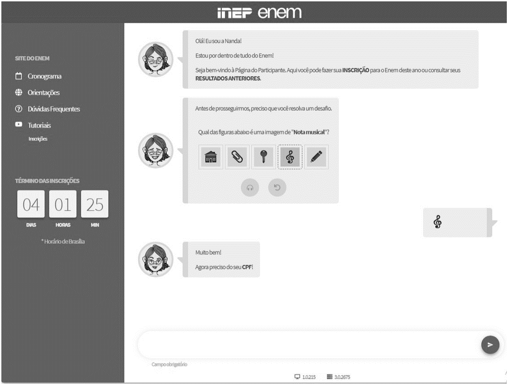
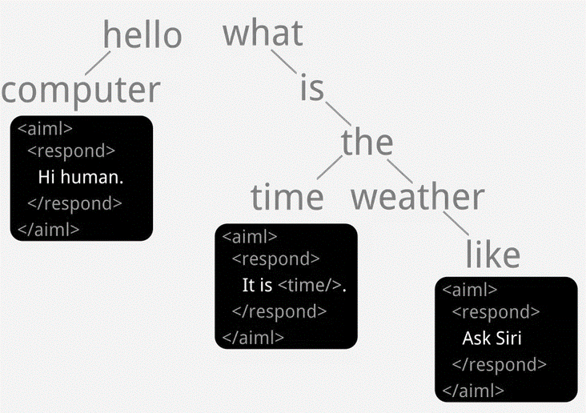
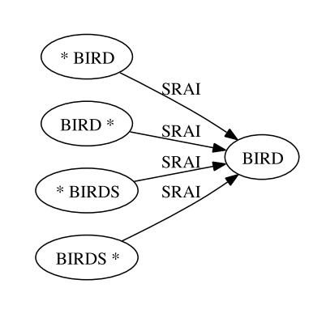
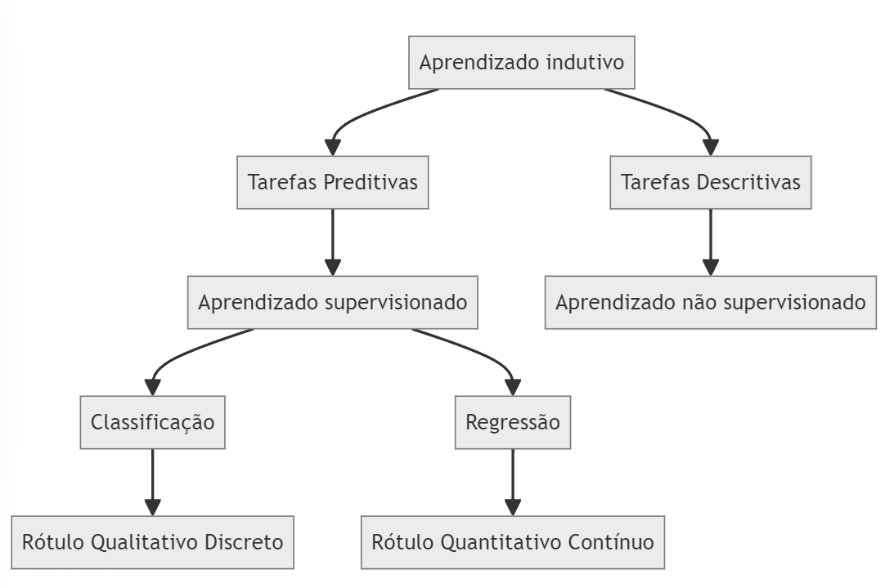
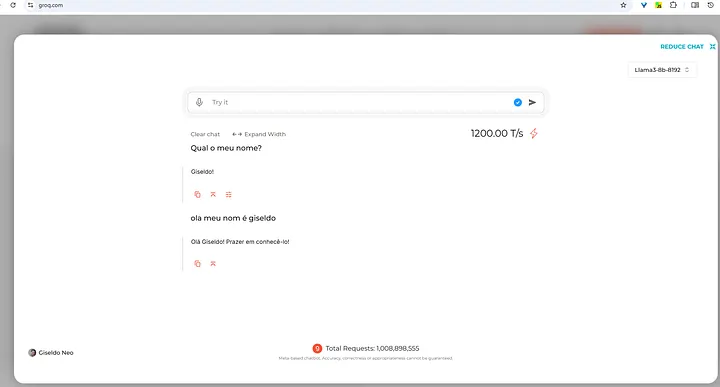

Construindo Chatbots: Do AIML e PLN até os Modernos LLMs
2025-12-16
Teoria e Prática com Python
| Preparação e revisão | Giseldo Neo e Alana Neo |
| Diagramação | Giseldo Neo |
| versão 0.8 (gerado em 2025-12-16) | |
| E-mail: giseldo@gmail.com | |
| Todos os direitos reservados. | |
| Nenhuma parte desta publicação | |
| poderá ser armazenada ou reproduzida | |
| por qualquer meio sem a autorização | |
| por escrito dos autores. | |
Agradecimentos
Expresso minha gratidão ao Professor Dr. Olival de Gusmão Freitas Júnior (UFAL) pela cuidadosa revisão deste livro, cujo olhar crítico contribuiu para elevar a qualidade do trabalho. Agradeço especialmente ao Pesquisador Dr. Joaquim José Cintra Maia Honório pelo auxílio no capítulo dos LLMs e Fine-Tuning; essas contribuições foram importantes e melhoraram muito o texto a partir do rascunho original. Agradeço ao Professor Dr. Evandro de Barros Costa (UFAL) pela apresentação do ELIZA; ao Professor Dr. José Antão Beltrão Moura (UFCG) pela inspiração e dedicação ao ensino; e agradeço ao Professor Msc. Otávio Monteiro Pereira (IFAL) pelo apoio relacionado à ética dos chatbots. Agradeço também ao Instituto Federal de Alagoas e a seus servidores. Estendo meus agradecimentos a todos que, de forma direta ou indireta, colaboraram com ideias, discussões e sugestões que enriqueceram o conteúdo apresentado.
Giseldo Neo
Agradeço à minha família, que sempre esteve ao meu lado em cada etapa desta jornada. Aos meus pais, pelo amor, paciência e incentivo incondicional. Aos parentes, pelo apoio e pela compreensão das ausências nos momentos de dedicação intensa. Agradeço também aos amigos e colegas que contribuíram com ideias, sugestões e palavras de motivação nos dias desafiadores. Este livro é fruto não apenas do meu esforço, mas também da força coletiva daqueles que acreditaram e apoiaram para que esta obra se tornasse realidade.
Alana Neo
Prefácio
Vivemos um momento histórico em que a inteligência artificial (IA) deixou de ser apenas tema de ficção científica para se tornar parte do nosso cotidiano. Os chatbots, os avanços em Processamento de Linguagem Natural (PLN) e os Modelos de Linguagem Grande (LLMs) são hoje protagonistas dessa transformação, moldando a forma como nos comunicamos, aprendemos, trabalhamos e interagimos com a tecnologia.
O que antes era limitado a sistemas rígidos, que apenas repetiam respostas pré-programadas, evoluiu para assistentes virtuais capazes de compreender contexto, interpretar nuances da linguagem e até gerar conteúdo inédito. Essa trajetória revela não apenas conquistas tecnológicas, porém também desafios éticos, sociais e econômicos.
Este livro é um convite acessível e profundo para quem deseja compreender como nascem, evoluem e funcionam os chatbots — desde os primórdios com ELIZA até os modernos modelos de linguagem como o ChatGPT. Ele nasce com o propósito de explicar, refletir e inspirar. Explicar como o PLN e os LLMs funcionam e por que se tornaram tão relevantes. Refletir sobre os impactos dessa revolução: o futuro do trabalho, a responsabilidade no uso da IA, a relação entre humano e máquina. Inspirar pesquisadores, profissionais, estudantes e curiosos a explorar esse campo em rápida expansão, contribuindo para um uso responsável e criativo dessas ferramentas tecnológicas. Ele também é um convite para explorar esse universo fascinante. Você encontrará explicações sobre como essas tecnologias funcionam, exemplos e reflexões sobre seus impactos na sociedade. Mais do que compreender as máquinas que conversam, trata-se de entender o futuro da linguagem e da interação entre humanos e sistemas inteligentes.
Seja você estudante, pesquisador ou profissional do mercado, este livro pode inspirar novas ideias e mostrar como a inteligência artificial conversacional já está transformando o presente — e continuará a transformar o futuro.
Boa leitura!
Informações
O código-fonte - com os mesmos códigos em python utilizados neste livro - está disponível no endereço:
Uma versão atualizada do livro pode ser encontrada no site
Citação Formato ABNT:
Neo, Giseldo da Silva & Neo Alana Viana Borges da Silva. Construindo Chatbots: Do AIML e PLN até os Modernos LLMs. 2025. Edição do autor.
Citação Bibtex:
@book{neoneo2025,
author = {Giseldo da Silva Neo & Alana da Silva Neo},
title = {Construindo Chatbots: Do AIML e PLN até
os Modernos LLMs},
year = 2025,
publisher = {Edição do autor}
}Resumo
Se você já se perguntou como funcionam os chatbots que conversam como humanos, este livro é a sua porta de entrada para um dos campos mais fascinantes da inteligência artificial. Ele é mais do que um guia técnico — é uma jornada envolvente pela evolução, construção e futuro dos agentes conversacionais, unindo clareza didática com profundidade técnica. A obra começa explorando o conceito de chatbot, diferenciando suas principais categorias — conversacionais e orientados a tarefas — e contextualizando o leitor com um panorama histórico que vai do lendário ELIZA, criado nos anos 1960, até os impressionantes modelos atuais como ChatGPT. Essa viagem no tempo é pontuada por explicações acessíveis e exemplos práticos em Python que mostram, passo a passo, como esses sistemas funcionam por trás das cortinas. O livro se destaca por traduzir conceitos complexos em linguagem clara. Você vai entender o que é o pattern matching usado por chatbots clássicos, como funciona o AIML, e por que expressões regulares ainda são ferramentas utilizadas no desenvolvimento de bots. Em capítulos dedicados ao Processamento de Linguagem Natural (PLN), técnicas como tokenização, lematização e análise sintática ganham vida por meio de exemplos aplicáveis, preparando o leitor para dar seus próprios passos no mundo da IA conversacional. Mas ele não se limita ao passado. Ele mergulha fundo nas tecnologias que revolucionaram o campo, como Transformers, Word2Vec e os Modelos de Linguagem Grande (LLMs), incluindo BERT, GPT e LLaMA. O leitor descobre como essas arquiteturas funcionam, como treiná-las e como aplicá-las usando frameworks modernos como Hugging Face e LangChain. Além de guiar a construção técnica de um chatbot — do código ao deploy — o livro também traz reflexões sobre ética, privacidade e o impacto social desses agentes. Tópicos como personalização, explicabilidade e segurança ampliam o olhar do leitor para além da implementação. Combinando teoria, prática e visão de futuro, ele é um convite para programadores, educadores, empreendedores e curiosos que desejam dominar a arte de construir diálogos entre humanos e máquinas. É uma obra que ensina, inspira e instiga. Se você quer entender como os chatbots realmente pensam — ou pelo menos como fingem tão bem — este livro é para você.
Introdução
“Podemos ver apenas uma curta distância à frente, mas pode-se ver muito que precisa ser feito.”
Alan Turing
Objetivo Apresentar os conceitos fundamentais de chatbots, sua classificação, histórico e principais abordagens, preparando o leitor para compreender a evolução dessas tecnologias.
Contexto
Para uma parcela da população com maior afinidade com a inteligência artificial, o chatbot tornou-se uma ferramenta essencial para executar tarefas, redigir e-mails e traduzir textos. O que um dia causou espanto e admiração — como ocorreu com a descoberta do fogo, o computador pessoal, a Internet, as ferramentas de busca e as redes sociais — hoje se converteu em dependência.
Neste contexto, um chatbot é um programa de computador que simula uma conversa humana, via texto ou áudio, oferecendo respostas diretas a perguntas e apoiando diversas atividades, desde conversas gerais até ações específicas, como abrir uma conta bancária ou agendar um voo para o show do seu cantor preferido.
Para entender como chegamos a esse ponto, vale recordar a trajetória do próprio conceito. Embora o programa ELIZA, criado por Weizenbaum (1966), seja frequentemente citado como um dos primeiros exemplos de software conversacional, o termo “chatbot” ainda não era empregado à época. Sua origem remete a “chatterbot” — sinônimo de “chatbot” —, popularizado por Michael Mauldin em 1994 ao descrever seu programa JULIA (Mauldin 1994). Anos depois, outras publicações acadêmicas, como os anais da Virtual Worlds and Simulation Conference de 1998 (Jacobstein et al. 1998), contribuíram para consolidar os termos entre os pesquisadores.
O chatbot ELIZA representou um experimento marcante na interação entre humano e computador (Weizenbaum 1966). Seu roteiro (ou script) mais famoso, o DOCTOR, imitava rudimentarmente um psicoterapeuta, utilizando correspondência de padrões simples. Por exemplo, quando um usuário inseria a frase “Estou triste” no ELIZA, o programa respondia “Por que você está triste hoje?”, reformulando a entrada do usuário como uma pergunta. O funcionamento básico do sistema baseava-se em um conjunto restrito de regras e substituições, o que lhe permitia apenas uma compreensão superficial e limitada da linguagem humana.
O roteiro DOCTOR do ELIZA adequou-se bem a um tipo de diálogo mais simples, pois suas respostas dependiam de pouco conhecimento sobre o ambiente externo. As regras no roteiro permitiam que o programa respondesse ao usuário com outras perguntas ou simplesmente refletisse a afirmação original.
NOTA
Uma descrição detalhada do funcionamento do ELIZA e o roteiro DOCTOR, com exemplos em Python, será apresentada no Capítulo 3.
Outro chatbot famoso é o ChatGPT da OpenAI. Ele é um programa capaz de gerar texto muito semelhante ao criado por humanos. Ele utiliza redes neurais, com aprendizagem profunda, para gerar sentenças e parágrafos com base nas entradas e informações fornecidas. Entre suas capacidades, ele pode traduzir e resumir textos, responder a perguntas e explicar conceitos. Contudo, o ChatGPT não possui consciência nem a capacidade de compreender contexto ou emoções.
O chatGPT é um exemplo de Modelo de Linguagem Grande (em inglês Large Language Model - LLM), baseado na arquitetura Transformers, introduzida em 2017 (Vaswani et al. 2017). Modelos deste tipo são treinados com terabytes de texto, utilizando mecanismos de autoatenção que avaliam a relevância de cada palavra em uma frase. Ao contrário das regras manuais do ELIZA, os LLMs extraem padrões linguísticos a partir da vasta quantidade de dados com que a rede neural foi treinada.
Esses dois chatbots, ELIZA e ChatGPT, são bons representantes do tipo de chatbot conversacional. Apesar de terem surgido com décadas de diferença — ELIZA em 1966 e ChatGPT em 2022 — e de diferirem bastante na forma como geram suas respostas, ambos compartilham semelhanças em seu objetivo: conversar sobre determinado assunto ou responder perguntas, mantendo o usuário em um diálogo fluido quando necessário. Chatbots com essas características podem ser agrupados, de acordo com o objetivo, como chatbots conversacionais e são utilizados para interagir sobre assuntos gerais.
Outro tipo de chatbot classificado em relação ao objetivo é o chatbot orientado a tarefas. Os chatbots orientados a tarefas executam ações específicas, como abrir uma conta bancária ou pedir uma pizza. Geralmente, as empresas disponibilizam chatbots orientados a tarefas para seus usuários, com regras de negócio embutidas na conversação e com fluxos bem definidos. Normalmente, não se espera pedir uma pizza e, no mesmo chatbot, discutir os estudos sobre Ética do filósofo Immanuel Kant (embora talvez haja quem queira).
Essas duas classificações, “conversacional” e “orientado a tarefas”, ainda não são suficientes para uma completa classificação. Existem outras classificações que serão discutidas em seções posteriores. Além disso, uma abordagem híbrida, unindo funções de chatbots do tipo “conversacional” e “orientado a tarefas” vem sendo utilizada para atender às necessidades dos usuários.
A popularidade dos chatbots tem crescido significativamente em diversos domínios de aplicação (Marcondes, Almeida, and Novais 2020; Klopfenstein et al. 2017; Sharma, Verma, and Sahni 2020). Essa tendência é corroborada pelo aumento do interesse de busca pelo termo “chatbots”, conforme análise de dados do Google Trends no período entre 2020 e 2025 (Figura 2.1). Nesta figura, os valores representam o interesse relativo de busca ao longo do tempo, onde 100 indica o pico de popularidade no período analisado e 0 (ou a ausência de dados) indica interesse mínimo ou dados insuficientes.

Fonte: Google Trends acesso em 05/04/2025
Agentes
Os termos “chatbots” e “agentes” são usadas indiscriminadamente, o que pode causar confusão. Vamos a uma definição mais precisa. Um chatbot é um programa computacional projetado para interagir com usuários por meio de linguagem natural. Por outro lado, o conceito de agente possui uma definição mais ampla. Um agente trata-se de uma entidade computacional que percebe seu ambiente por meio de sensores e atua sobre esse ambiente por meio de atuadores.
Nesse contexto, um chatbot (Figura 2.3) pode ser considerado uma instanciação específica de um agente - veja na Figura 2.2 a arquitetura conceitual de alto nível para um agente - cujo propósito primário é a interação conversacional em linguagem natural.

Fonte: Adaptado de (Russel and Norving 2013)

Com o advento de modelos de linguagem, como os baseados na arquitetura Generative Pretrained Transformer (GPT), a exemplo do ChatGPT, observou-se uma recontextualização do termo “agente” no domínio dos sistemas conversacionais. Nessa abordagem mais recente, um sistema focado predominantemente na geração de texto conversacional tende a ser denominado “chatbot”. Em contraste, o termo “agente” é frequentemente reservado para sistemas que, além da capacidade conversacional, integram e utilizam ferramentas externas (por exemplo, acesso à Internet, execução de código e interação com APIs) para realizar tarefas complexas e interagir proativamente com o ambiente digital. Um sistema capaz de realizar uma compra online, processar um pagamento e confirmar um endereço de entrega por meio do navegador do usuário seria, portanto, classificado como um agente, diferentemente de chatbots mais simples como ELIZA, ou mesmo versões mais simples do chatGPT (GPT-2), cujo foco era estritamente o diálogo.
Fluxo Conversacional
Um chatbot responde a uma entrada do usuário. Porém, essa interação textual mediada por chatbots não se constitui em uma mera justaposição aleatória de turnos de conversação ou pares isolados de estímulo-resposta. Pelo contrário, espera-se que a conversação exiba coerência e mantenha relações lógicas e semânticas entre os turnos consecutivos. O estudo da estrutura e organização da conversa humana é abordado por disciplinas como a Análise da Conversação.
No contexto da análise da conversação em língua portuguesa, os trabalhos de Marcuschi (Marcuschi 1986) são relevantes ao investigar a organização dessa conversação. Marcuschi analisou a estrutura conversacional em termos de unidades coesas, como o “tópico conversacional”, que agrupa turnos relacionados a um mesmo assunto ou propósito interacional.
Conceitos oriundos da Análise da Conversação, como a gestão de tópicos, têm sido aplicados no desenvolvimento de chatbots para aprimorar sua capacidade de manter diálogos coerentes e contextualmente relevantes com usuários humanos (Neves and Barros 2005).
Na prática de desenvolvimento de sistemas conversacionais, a estrutura lógica e sequencial da interação é frequentemente modelada e referida como “fluxo de conversação” ou “fluxo de diálogo”. Contudo, é importante ressaltar que a implementação explícita de modelos sofisticados de gerenciamento de diálogo, inspirados na Análise da Conversação, não é uma característica universal de todos os chatbots, variando conforme a complexidade e o propósito do sistema.
Um exemplo esquemático de um fluxo conversacional é apresentado na Figura 2.4. Nesta figura, o fluxo de conversação inicia quando o usuário entra com o texto: I WANT PIZZA, o chatbot responde com uma pergunta: HI I AM THE PIZZA BOT. CAN I CONFIRM THIS DELIVERY TO YOUR HOUSE? O usuário então pode responder: YES, e o chatbot finaliza a conversa com: IT’S ON THE WAY. THANK YOU FOR CHOOSE OUR PRODUCT. Caso o usuário responda: NO, o chatbot responde com a pergunta original: HI I AM THE PIZZA BOT. CAN I CONFIRM THIS DELIVERY TO YOUR HOUSE? O fluxo de conversação continua até que o usuário responda com um “YES” para a pergunta inicial. Essa estrutura de perguntas e respostas é comum em chatbots orientados a tarefas, onde o objetivo é guiar o usuário por um processo específico, tal como fazer um pedido de pizza.

Um outro tipo de fluxo para um chatbot que vende roupas online está representado na Figura 2.5.

Retirado de (Raj 2019).
Histórico
Um marco significativo na evolução dos chatbots depois do ELIZA foi o ALICE, que introduziu a Artificial Intelligence Markup Language (AIML), uma linguagem de marcação baseada em XML (Richard S. Wallace 2000). A AIML estabeleceu um paradigma para a construção de agentes conversacionais ao empregar algoritmos de correspondência de padrões. Essa abordagem utiliza modelos pré-definidos para mapear as entradas do usuário a respostas correspondentes, permitindo a definição modular de blocos de conhecimento (Richard S. Wallace 2000).
No contexto brasileiro, um dos primeiros chatbots documentados capaz de interagir em português, inspirado no modelo ELIZA, foi o Cybele (PRIMO and COELHO 2001). Posteriormente, foi desenvolvido o Elecktra, também em língua portuguesa, com aplicação voltada para a educação a distância (Leonhardt, Neisse, and Tarouco 2003). Em 2019, o processo de inscrição para o Exame Nacional do Ensino Médio (ENEM) foi disponibilizado por meio de uma interface conversacional baseada em chatbot (Figura 2.6).

O desenvolvimento de chatbots tem atraído investimentos de grandes corporações. Notavelmente, a IBM desenvolveu um sistema de resposta a perguntas em domínio aberto utilizando sua plataforma Watson (Ferrucci 2012). Esse tipo de tarefa representa um desafio computacional e de inteligência artificial (IA) considerável. Em 2011, o sistema baseado em Watson demonstrou sua capacidade ao competir e vencer competidores humanos no programa de perguntas e respostas JEOPARDY! (Ferrucci 2012).
Diversos outros chatbots foram desenvolvidos para atender a demandas específicas em variados domínios. Exemplos incluem: BUTI, um companheiro virtual com computação afetiva para auxiliar na manutenção da saúde cardiovascular (Junior 2008); EduBot, um agente conversacional projetado para a criação e desenvolvimento de ontologias com lógica de descrição (Lima 2017); PMKLE, um ambiente inteligente de aprendizado focado na educação em gerenciamento de projetos (Torreao 2005); RENAN, um sistema de diálogo inteligente fundamentado em lógica de descrição (Azevedo 2015); e MOrFEu, voltado para a mediação de atividades cooperativas em ambientes inteligentes na Web (Bada 2012).
Entre os chatbots baseados em LLMs de destaque atualmente estão o Qwen https://chat.qwen.ai/, desenvolvido pela Alibaba, que se destaca por sua eficiência e suporte multilíngue; o DeepSeek https://chat.deepseek.com/, de código aberto voltado para pesquisa e aplicações empresariais com foco em precisão e escalabilidade; o Maritaca https://chat.maritaca.ai/, modelo brasileiro otimizado para o português; o Gemini https://gemini.google.com/, da Google, que integra capacidades multimodais e forte desempenho em tarefas diversas; o Mistralhttps://chat.mistral.ai/, da Mistral AI, que utiliza arquitetura de mistura de especialistas para maior eficiência; o Llama https://www.meta.ai/, da Meta, reconhecido por ser código aberto e ampla adoção na comunidade; o Claude https://claude.ai/, da Anthropic, projetado com ênfase em segurança e alinhamento ético, que vem ganhando adeptos para tarefas e codificação; e o Nemotron https://build.nvidia.com/models, da NVIDIA, que oferece modelos de linguagem otimizados para execução em GPUs e aplicações empresariais de alto desempenho. E o Groq https://grok.com/ da xAI.
Abordagens
Desde o pioneirismo do ELIZA, múltiplas abordagens e técnicas foram exploradas para o desenvolvimento de chatbots. Entre as mais relevantes, destacam-se: AIML com correspondência de padrões (pattern matching), análise sintática (Parsing), modelos de cadeia de Markov (Markov Chain Models), uso de ontologias, redes neurais recorrentes (RNNs), redes de memória de longo prazo (LSTMs), modelos neurais sequência-a-sequência (Sequence-to-Sequence), aprendizado adversarial para geração de diálogo, além de abordagens baseadas em recuperação (Retrieval-Based) e generativas (Generative-Based) (Borah et al. 2018; Ramesh et al. 2017; Shaikh et al. 2016; Abdul-Kader and Woods 2015; Li et al. 2018), entre outras.
A seguir, uma lista resumida das tecnologias e marcos da criação dos chatbots:
ELIZA: o primeiro chatbot, que utilizava correspondência de padrões simples para simular um psicoterapeuta. Foi um marco na história dos chatbots e influenciou o desenvolvimento de sistemas conversacionais subsequentes (Weizenbaum 1966).
AIML: Artificial Intelligence Markup Language, uma linguagem de marcação baseada em XML que deu origem ao ALICE (Richard S. Wallace 2000). Essa linguagem de marcação permite a definição de regras de correspondência de padrões (pattern matching) para mapear entradas do usuário a respostas predefinidas.
Transformers: arquitetura de rede neural baseada em atenção, que revolucionou o processamento de linguagem natural (NLP) (Vaswani et al. 2017). Modelos como BERT e GPT são exemplos de arquiteturas baseadas em Transformer que têm sido amplamente utilizadas em chatbots modernos.
GPT: Àdaptação do Transformer modelos de linguagem generativa, como o GPT-2, que utilizam redes neurais profundas para gerar texto coerente e relevante em resposta a entradas do usuário. Esses modelos são treinados em grandes quantidades de dados e podem ser adaptados para tarefas específicas, como atendimento ao cliente ou suporte técnico.
Além disso, diversos frameworks têm sido desenvolvidos para facilitar a criação desses agentes complexos, como CrewAI (CrewAI 2025) e Mangaba.AI (Mangaba AI 2025) e plataformas diversas como Hugging Face (e.g., Transformers Agents), que fornecem abstrações e ferramentas em Python para orquestrar múltiplos componentes e o uso de ferramentas externas.
Chatbot pensa?
Apesar do progresso recente de chatbots, o mecanismo fundamental da inteligência em nível humano, frequentemente refletido na comunicação, ainda não está totalmente esclarecido (Shum, He, and Li 2018). Para avançar na solução desses desafios, serão necessários progressos em diversas áreas da IA cognitiva, tais como: modelagem empática de conversas, modelagem de conhecimento e memória, inteligência de máquina interpretável e controlável, e calibração de recompensas emocionais (Shum, He, and Li 2018).
Uma das dificuldades na construção de chatbots do tipo orientado a tarefas - a exemplo do Artificial Intelligence Markup Language (AIML) usado no ALICE - reside em gerenciar a complexidade das estruturas condicionais (“se-então”) que definem o fluxo do diálogo (Raj 2019). Quanto maior o número de decisões a serem tomadas, mais complexas tendem a ser essas estruturas condicionais. Contudo, elas são essenciais para codificar fluxos de conversação complexos. Se a tarefa que o chatbot visa simular é inerentemente complexa e envolve múltiplas condições, o código precisará refletir essa complexidade. Para facilitar a visualização desses fluxos, uma solução eficaz é a utilização de fluxogramas. Embora simples de criar e entender, os fluxogramas constituem uma ferramenta visual de representação para este problema.
NOTA
Uma explicação detalhada do AIML será apresentada no Capítulo 3.
Os chatbots baseados em AIML apresentam desvantagens específicas. Por exemplo, o conhecimento é representado como instâncias de arquivos AIML. Se esse conhecimento for criado com base em dados coletados da Internet, ele não será atualizado automaticamente, exigindo atualizações periódicas manuais (Madhumitha, Keerthana, and Hemalatha 2015). No entanto, já existem abordagens para mitigar essa limitação, permitindo carregar conteúdo AIML a partir de fontes como arquivos XML (Macedo and Fusco 2014), um corpus textual (De Gasperis, Chiari, and Florio 2013) ou dados do Twitter (Yamaguchi, Mozgovoy, and Danielewicz-Betz 2018). Além de abordagens no-code que geram o AIML a partir de fluxogramas (G. S. Neo et al. 2023).
Outra desvantagem do AIML, a exemplo do Eliza, reside na relativa complexidade de seus padrões de correspondência (patterns). Além disso, a manutenção do sistema pode ser árdua, pois, embora a inserção de conteúdo (categorias) seja conceitualmente simples, grandes volumes de informação frequentemente precisam ser adicionados manualmente (Madhumitha, Keerthana, and Hemalatha 2015).
Especificamente no caso do AIML, a construção e a visualização de fluxos de diálogo complexos enfrentam dificuldades adicionais. Devido ao seu formato baseado em texto, muitas vezes é difícil perceber claramente como as diferentes categorias (unidades de conhecimento e resposta) se interligam para formar a estrutura da conversação.
O interesse pelos chatbots continua crescendo. No entanto, eles podem ser complicados para se construir e os usuários nem sempre têm experiência suficiente para configurá-los. Alguns usuários não têm necessariamente habilidades de programação ou de TI avançadas. Para que eles possam criar e personalizar os chatbots, é importante que a autoria seja fácil de usar e intuitiva. Ela não deve exigir conhecimento de linguagens de computador que sejam difíceis de entender para o público em geral. Para resolver esses problemas, várias ferramentas de autoria já foram propostas e podem ser utilizadas por usuários sem o uso de código, ferramentas no-code (Silva Neo et al. 2023).
Mesmo um chatbot baseado em LLM também não “pensa” no sentido cognitivo humano, mas opera a partir de um mecanismo estatístico de predição de tokens condicionado a um contexto. Sua forma de funcionamento é sustentada por arquiteturas neurais profundas, treinadas sobre grandes volumes de dados textuais, que capturam regularidades linguísticas, semânticas e pragmáticas. Assim, a resposta gerada resulta da estimativa da sequência de palavras mais provável dado um histórico de entrada, e não de um processo deliberativo consciente.
A aparente coerência e racionalidade observadas nas respostas decorrem da capacidade do modelo em representar padrões complexos da linguagem natural em espaços vetoriais de alta dimensão. Esses modelos internalizam relações sintáticas, semânticas e discursivas, permitindo generalização para contextos não vistos durante o treinamento. Dessa forma, o chatbot consegue simular comportamentos como argumentação, explicação e síntese, ainda que tais comportamentos sejam emergentes do ajuste estatístico e não de compreensão genuína.
A justificativa para esse modo de “pensar” reside na eficácia prática do paradigma. Ao invés de regras explícitas ou sistemas simbólicos rígidos, os LLMs oferecem flexibilidade, escalabilidade e adaptação a múltiplos domínios, o que os torna adequados para tarefas complexas de interação homem-máquina. A combinação de aprendizado profundo, atenção contextual e grandes corpora textuais permite ao chatbot responder de forma contextualizada, mantendo consistência local e global no discurso.
Por fim, é fundamental reconhecer as limitações inerentes a esse modelo de funcionamento. A ausência de intencionalidade, consciência e compreensão semântica profunda implica que o chatbot pode produzir respostas plausíveis, porém factualmente incorretas ou logicamente inconsistentes. Assim, a forma de “pensar” de um chatbot baseado em LLM deve ser entendida como um mecanismo probabilístico avançado de geração de linguagem, útil e poderoso, mas distinto do raciocínio humano.
Exercícios
Qual é o objetivo principal de um chatbot?
Substituir completamente os seres humanos no atendimento ao cliente.
Simular uma conversa humana para resolver problemas ou fornecer informações.
Gerar textos literários complexos.
Armazenar grandes quantidades de dados em tempo real.
Qual das seguintes opções descreve corretamente um benefício dos chatbots?
Eles nunca precisam ser atualizados.
Eles podem operar 24 horas por dia, 7 dias por semana, sem intervenção humana.
Eles sempre tomam decisões melhores do que humanos.
Eles substituem completamente a necessidade de suporte técnico.
Qual das opções a seguir é uma técnica comum usada por chatbots para entender o que o usuário está perguntando?
Mineração de Dados
Tokenização
Compressão de Dados
Balanceamento de Carga
Qual é o papel dos embeddings de palavras em chatbots?
Converter palavras em vetores numéricos que capturam o significado semântico.
Armazenar grandes quantidades de dados de conversação.
Executar algoritmos de compressão de texto.
Facilitar a tradução de texto entre diferentes idiomas.
Qual é a principal limitação dos chatbots baseados em regras?
Eles não conseguem operar em tempo real.
Eles exigem grandes quantidades de dados para funcionar.
Eles só podem responder a consultas específicas para as quais foram
programados.
Eles são incapazes de realizar tarefas repetitivas.
ELIZA e AIML
“Somos autómatos em três quartas partes das nossas ações.”
Wilhelm Leibniz
Objetivo Explorar o funcionamento do ELIZA, suas regras de transformação, implementação e legado histórico, evidenciando as bases dos sistemas conversacionais. Além de explicar a linguagem AIML, mostrando como ela possibilitou a construção de chatbots mais robustos e modulares.
Introdução
O chatbot ELIZA foi um marco histórico e um dos primeiros programas de processamento de linguagem natural e foi apresentado em 1966 por Joseph Weizenbaum no MIT (Weizenbaum 1966).
O conjunto de padrões e respostas predefinidas constitui o que Weizenbaum chamou de “roteiro” (ou script) de conversa. O mecanismo do ELIZA separa o motor de processamento dos dados, sendo o algoritmo de busca de palavras-chave e aplicação de regras, do script em si. Isso significa que ELIZA podia, em teoria, simular diferentes personalidades ou tópicos apenas carregando um script diferente, sem alterar o código do programa (veja na Figura 3.1). Também foi codificado um editor de texto para as alterações do próprio script.

Um destes roteiros, o script DOCTOR, deixou o ELIZA famoso. Com este script carregado, o ELIZA simulava precariamente um psicoterapeuta (do estilo Rogeriano), refletindo as palavras do usuário de volta em forma de pergunta.
Na lista abaixo é apresentado um exemplo de diálogo (retirado do artigo original) entre um usuário humano e ELIZA, mostrando as respostas em letras maiúsculas. Nesse exemplo, o usuário faz afirmações pessoais (“Men are all alike.”, “Well, my boyfriend made me come here.”) e ELIZA responde com perguntas ou reformulações (“IN WHAT WAY”, “YOUR BOYFRIEND MADE YOU COME HERE?”) reutilizando termos do próprio usuário. Esse estilo reflexivo encoraja o usuário a continuar falando sem fornecer respostas diretas.
Men are all alike.
IN WHAT WAY
They're always bugging us about something or other.
CAN YOU THINK OF A SPECIFIC EXAMPLE
Well, my boyfriend made me come here.
YOUR BOYFRIEND MADE YOU COME HERE
He says I'm depressed much of the time.
I AM SORRY TO HEAR YOU ARE DEPRESSED
It's true. I am unhappy.
DO YOU THINK COMING HERE WILL HELP YOU NOT TO BE UNHAPPY
I need some help, that much seems certain.
WHAT WOULD IT MEAN TO YOU IF YOU GOT SOME HELP
Perhaps I could learn to get along with my mother.
TELL ME MORE ABOUT YOUR FAMILY
My mother takes care of me.
WHO ELSE IN YOUR FAMILY TAKES CARE OF YOU
My father.
YOUR FATHER
You are like my father in some ways.
WHAT RESEMBLANCE DO YOU SEE
You are not very aggressive but I think you don't want me to
notice that.
WHAT MAKES YOU THINK I AM NOT VERY AGGRESSIVE
You don't argue with me.
WHY DO YOU THINK I DON'T ARGUE WITH YOU
You are afraid of me.
DOES IT PLEASE YOU TO BELIEVE I AM AFRAID OF YOU
My father is afraid of everybody.
WHAT ELSE COMES TO MIND WHEN YOU THINK OF YOUR FATHER
Bullies.
DOES THAT HAVE ANYTHING TO DO WITH THE FACT THAT YOUR BOYFRIEND MADE YOU COME HERE Processamento
O funcionamento do ELIZA baseia-se em correspondência de padrões por palavras-chave (Mittmann 2021). Técnica também chamada “casamento de padrão”, em inglês pattner matching, seu paradigma também se encaixa na técnica baseada em regras (ou rule-based). A cada turno do diálogo, o texto de entrada do usuário é analisado em busca de palavras-chave predefinidas. O ELIZA faz uma varredura da sentença da esquerda para a direita, identificando se alguma palavra correspondia a uma palavra-chave do script. Caso encontre uma palavra-chave no script, ELIZA empilha essa palavra até o final da frase. Depois, ele seleciona a palavra-chave mais “importante” até encontrar uma pontuação. Para isso, ele mantém uma lista de pesos associados a cada palavra-chave.
Por exemplo, o script DOCTOR definia palavras-chave como “ALIKE” ou “SAME” com alta prioridade; assim, na frase “Men are all alike.” o programa detectava a palavra “ALIKE” e disparava uma resposta associada a ela (no caso: “In what way?”). Se múltiplas palavras-chave aparecessem, ELIZA escolhia aquela de maior peso para formular a resposta.
Primeiro o texto de entrada digitado pelo usuário era separado em palavras, em uma técnica que hoje chamamos de tokenização de palavras, mas que ainda não existia na época. A palavra-chave era identificada, comparando-a sequencialmente até o fim das palavras existentes, ou até ser encontrada uma pontuação. Caso fosse encontrada uma pontuação (ponto final ou vírgula), o texto após a pontuação era ignorado se já tivesse sido identificada uma palavra-chave. Assim, cada processamento da resposta utiliza uma única frase do usuário. Se várias palavras-chave fossem encontradas antes da pontuação, a de maior peso era selecionada.
Por exemplo, o usuário entra com o texto: “I am sick. but, today is raining”. Se houvesse uma palavra-chave no script ranqueando a palavra “SICK” com alta prioridade, a entrada processada seria somente “I am sick”, o restante depois da pontuação (neste caso, o ponto) seria ignorado pelo programa.
Se nenhuma palavra-chave fosse encontrada na entrada, ELIZA recorria a frases genéricas programadas, chamadas de respostas vazias ou sem conteúdo. Nesses casos, o chatbot emitia mensagens do tipo “I see.” ou “Please, go on.”. Esse mecanismo evitava silêncio quando o usuário dizia algo fora do escopo do script.
Além disso, a implementação original incluía uma estrutura de memória: algumas declarações recentes do usuário eram armazenadas e, se uma entrada subsequente não contivesse novas keywords, ELIZA poderia recuperar um tópico anterior e introduzi-lo na conversa. Por exemplo, se o usuário mencionasse família (em inglês family) em um momento e depois fizesse uma afirmação vaga, o programa poderia responder retomando o assunto da família (“DOES THAT HAVE ANYTHING TO DO WITH YOUR FAMILY?”). Essa estratégia dava uma pseudo-continuidade ao diálogo, simulando que o sistema “lembrava” de informações fornecidas anteriormente.
Regras de Transformação
Encontrada a palavra-chave, ELIZA aplicava uma regra de transformação associada a ela para gerar a resposta. As regras são definidas em pares: um padrão de análise (decomposition rule) e um modelo de reconstrução de frase (reassembly rule).
Primeiro, a frase do usuário é decomposta conforme um padrão que identifica a contexto mínimo em torno da palavra-chave. Essa decomposição frequentemente envolve separar a frase em partes e reconhecer pronomes ou estruturas gramaticais relevantes. Por exemplo, considere a entrada “You are very helpful.”. Uma regra de decomposição pode identificar a estrutura “You are X” — onde “X” representa o restante da frase — e extrair o complemento “very helpful” como um componente separado.
Em seguida, a regra de reassembly correspondente é aplicada, remontando uma sentença de resposta em que “X” é inserido em um template pré-definido. No exemplo dado, o template de resposta poderia ser “What makes you think I am X?”; ao inserir X = “very helpful”, gera-se “What makes you think I am very helpful?”. Observe que há uma inversão de pessoa: o pronome “you” do usuário foi trocado por “I” na resposta do bot.
De fato, uma parte importante das transformações do ELIZA envolve substituir pronomes (eu/você, meu/seu) para que a resposta faça sentido como uma frase do ponto de vista do computador falando com o usuário. Esse algoritmo de substituição é relativamente simples (por exemplo, “meu” → “seu”, “eu” → “você”, etc.), mas é essencial para dar a impressão de entendimento gramatical.
Veja no código-fonte abaixo uma parte do conteúdo do arquivo DOCTOR adaptado. A primeira linha REMEMBER 5 estabelece que a prioridade da palavra REMEMBER é 5, caso o usuário entre com uma frase com a palavra REMEMBER, o ELIZA irá responder com uma das perguntas definidas nos parênteses, dentro do nível da palavra REMEMBER. A segunda lista dentro do REMEMBER são as regras de transformação de frases (chamadas de decomposition rule e reassembly rule) associadas à palavra-chave REMEMBER. O mesmo se repete para a palavra IF que tem um peso diferente de REMEMBER.
(REMEMBER 5
(
(0 YOU REMEMBER 0)
(DO YOU OFTEN THINK OF 4)
(DOES THINKING OF ~ BRING ANYTHING ELSE TO MINO)
(WHAT ELSE OO YOU REMEMBER)
(WHY DO YOU REMEMBER 4 JUST NOW)
(WHAT IN THE PRESENT SITUATION REMINDS YOU OF 4)
(WHAT IS THE CONNECTION BETWEEN ME AND 4)
)
(
(0 DO I REMEMBER 0)
(DID YOU THINK I WOULD FORGET 5)
(WHY DO YOU THINK I SHOULD RECALL 5 NOW)
(WHAT ABOUT 5)
(=WHAT)
(YOU MENTIONED S)
)
)
(IF 3
(
(0 IF 0)
(DO YOU THINK ITS LIKELY THAT 3)
(DO YOU WISH THAT 3)
(WHAT DO YOU THINK ABOUT 3)
(REALLY, 2 3)
)
)Implementação e Variações
A implementação original de ELIZA foi feita em uma linguagem chamada MAD-SLIP (um dialeto de Lisp) rodando em um mainframe IBM 7094 no sistema CTSS do MIT. O código-fonte do programa principal continha o mecanismo de correspondência, enquanto as regras de conversação (script DOCTOR) eram fornecidas separadamente em formato de listas associativas, similar a uma lista em Lisp. Infelizmente, Weizenbaum não publicou o código completo no artigo de 1966 (o que era comum na época), mas décadas depois o código em MAD-SLIP foi recuperado nos arquivos do MIT, comprovando os detalhes de implementação (Lane et al. 2025). De qualquer forma, a arquitetura descrita no artigo influenciou inúmeras reimplementações acadêmicas e didáticas nos anos seguintes.
Diversos entusiastas e pesquisadores reescreveram ELIZA em outras linguagens de programação, dada a simplicidade relativa de seu algoritmo. Ao longo dos anos, surgiram versões em Lisp, PL/I, BASIC, Pascal, Prolog, Java, Python, OZ, JavaScript, entre muitas outras. Cada versão normalmente incluía o mesmo conjunto de regras do script terapeuta ou pequenas variações.
As ideias de ELIZA também inspiraram chatbots mais avançados. Poucos anos depois, em 1972, surgiu PARRY, escrito pelo psiquiatra Kenneth Colby, que simulava um paciente paranoico. PARRY tinha um modelo interno de estado emocional e atitudes, mas na camada de linguagem ainda usava muitas respostas baseadas em regras, chegando a “conversar” com o próprio ELIZA em experimentos da época.
Em 1995, Richard Wallace desenvolveu o chatbot ALICE (Artificial Linguistic Internet Computer Entity), que levava o paradigma de ELIZA a uma escala muito maior. ALICE utilizava um formato XML chamado AIML (Artificial Intelligence Markup Language) para definir milhares de categorias de padrões e respostas. Com mais de 16.000 templates mapeando entradas para saídas (Richard S. Wallace 2000), ALICE conseguia manter diálogos bem mais naturais e abrangentes que o ELIZA original, embora o princípio básico de correspondência de padrões permanecesse. Esse avanço rendeu a ALICE três vitórias no Prêmio Loebner (competição de chatbots) no início dos anos 2000 (Richard S. Wallace 2000).
Outras variações e sucessores notáveis incluem Jabberwacky (1988) – que já aprendia novas frases – e uma profusão de assistentes virtuais e bots de domínio específico nas décadas seguintes (Richard S. Wallace 2000). Em suma, o legado de ELIZA perdurou por meio de inúmeros chatbots baseados em regras, até a transição para abordagens estatísticas e de aprendizado de máquina no final do século XX.
Mecanismo de Pesos
A técnica de ELIZA, baseada em palavras-chave com respostas predefinidas, contrasta fortemente com os métodos de Modelos de Linguagem Grande (LLMs) atuais, como o Generative Pre-trained Transformer (GPT), que utilizam redes neurais de milhões (ou trilhões) de parâmetros e mecanismos de atenção. Mais detalhes sobre LLM no Capítulo 5.
No ELIZA, a “importância” de uma palavra era determinada manualmente pelo programador através de pesos ou rankings atribuídos a certas palavras-chave no script. Ou seja, o programa não aprendia quais termos focar – ele seguia uma lista fixa de gatilhos. Por exemplo, termos como “sempre” ou “igual” tinham prioridade alta no script DOCTOR para garantir respostas apropriadas.
Em contraste, modelos modernos como o GPT não possuem uma lista fixa de palavras importantes; em vez disso, eles utilizam o mecanismo de self-attention para calcular dinamicamente pesos entre todas as palavras da entrada conforme o contexto (Vaswani et al. 2017).
Na arquitetura Transformer, cada palavra (na prática não é uma palavra e sim um token) de entrada gera consultas e chaves que interagem com todas as outras, permitindo ao modelo atribuir pesos maiores às palavras mais relevantes daquela frase ou parágrafo (Vaswani et al. 2017). Em outras palavras, o modelo aprende sozinho quais termos ou sequências devem receber mais atenção para produzir a próxima palavra na resposta. Esse mecanismo de atenção captura dependências de longo alcance e nuances contextuais que um sistema de palavras-chave fixas como o ELIZA não consegue representar.
Além disso, o “vocabulário” efetivo de um LLM é imenso – um modelo GPT pode ser treinado com trilhões de palavras e ter ajustado seus parâmetros para modelar estatisticamente a linguagem humana (Vaswani et al. 2017). Como resultado, pode-se dizer metaforicamente que os LLMs têm uma lista de “palavras-chave” milhões de vezes maior (na prática, distribuída em vetores contínuos) e um método bem mais sofisticado de calcular respostas do que o ELIZA.
Enquanto ELIZA dependia de coincidências exatas de termos para disparar regras, modelos como GPT avaliam similaridades semânticas e contexto histórico graças às representações densas (embeddings) aprendidas durante o treinamento de rede neural.
Geração de Texto
Devido à sua abordagem baseada em regras locais, o ELIZA tinha capacidade de contextualização muito limitada. Cada input do usuário era tratado quase isoladamente: o programa não construía uma representação acumulada da conversa, além de artifícios simples como repetir algo mencionado (a estrutura de memória) ou usar pronomes para manter a ilusão de continuidade. Se o usuário mudasse de tópico abruptamente, o ELIZA não “perceberia” – ele apenas buscaria a próxima palavra-chave disponível ou recorreria a frases genéricas.
Em contraste, modelos de linguagem modernos levam em conta um longo histórico de diálogo. Chatbots que usam GPT podem manter um contexto de centenas ou milhares de tokens (palavras ou fragmentos) em sua janela de atenção, o que significa que eles conseguem referenciar informações mencionadas vários parágrafos atrás e integrá-las na resposta corrente. O mecanismo de self-attention, em particular, permite que o modelo incorpore relações contextuais complexas: cada palavra gerada pode considerar influências de palavras distantes no texto de entrada (Vaswani et al. 2017).
Por exemplo, ao conversar com um LLM, se você mencionar no início da conversa que tem um irmão chamado Alex e depois perguntar “ele pode me ajudar com o problema?”, o modelo entenderá que “ele” se refere ao Alex mencionado anteriormente (desde que dentro da janela de contexto). Já o ELIZA original não teria como fazer essa ligação, a menos que houvesse uma regra explícita para “ele” e algum armazenamento específico do nome – algo impraticável de antecipar via regras fixas para todos os casos.
Outra diferença está na geração de linguagem. O ELIZA não gera texto original no sentido pleno: suas respostas são em grande parte frases prontas (ou templates fixos) embaralhadas com partes da fala do usuário. Assim, seu vocabulário e estilo são limitados pelo script escrito manualmente. Modelos GPT, por sua vez, geram respostas novas combinando probabilisticamente o conhecimento adquirido de um extenso corpus. Eles não se restringem a repetir trechos da entrada, podendo elaborar explicações, fazer analogias, criar perguntas coerentes com os exemplos linguísticos em sua base de treinamento. Enquanto ELIZA tendia a responder com perguntas genéricas ou devolvendo as palavras do usuário, os LLMs podem produzir respostas informativas e detalhadas sobre o assunto (pois “aprenderam” uma ampla gama de tópicos durante o treinamento). Por exemplo, se perguntarmos algo factual ou complexo, o ELIZA falharia por não ter nenhuma regra a respeito, provavelmente dando uma resposta vazia. Já um modelo como GPT tentará formular uma resposta baseada em padrões linguísticos aprendidos e em conhecimento implícito dos dados, muitas vezes fornecendo detalhes relevantes.
Em termos de fluência e variedade, os modelos modernos superam o ELIZA amplamente. O ELIZA frequentemente se repetia ou caía em loops verbais quando confrontado com inputs fora do roteiro – um limite claro de sistemas por regras estáticas. Os LLMs produzem linguagem muito mais natural e adaptável, a ponto de muitas vezes enganarem os usuários sobre estarem conversando com uma máquina (um efeito buscado desde o Teste de Turing). Ironicamente, ELIZA nos anos 60 já provocou um precursor desse fenômeno – o chamado Efeito ELIZA, em que pessoas atribuem compreensão ou sentimentos a respostas de computador que, na verdade, são superficiais. Hoje, em chatbots GPT, esse efeito se intensifica pela qualidade das respostas, mas a distinção fundamental permanece: ELIZA seguia scripts sem compreender, enquanto LLMs inferem padrões e significados de forma estatística, sem entendimento consciente, mas atingindo resultados que simulam compreensão de maneira muito mais convincente.
Em resumo, os avanços de arquitetura (especialmente o mecanismo de atenção) ampliaram drasticamente a capacidade de contextualização e geração dos chatbots modernos, marcando uma evolução significativa desde o mecanismo simples, porém pioneiro, de ELIZA.
ELIZA em Python
A seguir o código-fonte de um programa que retorna o que o usuário digitou na linguagem de programação Python, inspirado no paradigma ELIZA.
# método que processa a entrada do usuário
def response(user_input):
return "Você disse: " + user_input
# Exemplo de uso
user_input = "Eu estou feliz"
print("Você: {}".format(user_input))
print("Eliza: {}".format(response(user_input)))
user_input = "Eu estou alegre"
print("Você: {}".format(user_input))
print("Eliza: {}".format(response(user_input)))Você: Eu estou feliz
Eliza: Você disse: Eu estou feliz
Você: Eu estou alegre
Eliza: Você disse: Eu estou alegreEste código acima simplesmente repete o que o usuário digita. Ele define a função response, que retorna a string “Você disse: ” concatenada ao texto recebido.
Logo abaixo uma implementação um pouco mais robusta de um chatbot inspirado no paradigma ELIZA. Esta implementação demonstra a utilização de expressões regulares - mais sobre expressões regulares no Capítulo 4 - para a identificação de padrões textuais (palavras-chave) na entrada fornecida pelo usuário e a subsequente geração de respostas, fundamentada em regras de transformação predefinidas manualmente.
import re
import random
regras = [
(re.compile(r'\b(hello|hi|hey)\b', re.IGNORECASE),
["Hello. How do you do. Please tell me your problem."]), # regra 1
(re.compile(r'\b(I am|I\'?m) (.+)', re.IGNORECASE), # regra 2
["How long have you been {1}?",
"Why do you think you are {1}?"]),
(re.compile(r'\bI need (.+)', re.IGNORECASE), # regra 3
["Why do you need {1}?",
"Would it really help you to get {1}?"]),
(re.compile(r'\bI can\'?t (.+)', re.IGNORECASE), # regra 4
["What makes you think you can't {1}?",
"Have you tried {1}?"]),
(re.compile(r'\bmy (mother|father|mom|dad)\b', re.IGNORECASE), # regra 5
["Tell me more about your family.",
"How do you feel about your parents?"]),
(re.compile(r'\b(sorry)\b', re.IGNORECASE), # regra 6
["Please don't apologize."]),
(re.compile(r'\b(maybe|perhaps)\b', re.IGNORECASE), # regra 7
["You don't seem certain."]),
(re.compile(r'\bbecause\b', re.IGNORECASE), # regra 8
["Is that the real reason?"]),
(re.compile(r'\b(are you|do you) (.+)\?$', re.IGNORECASE), # regra 9
["Why do you ask that?"]),
(re.compile(r'\bcomputer\b', re.IGNORECASE), # regra 10
["Do computers worry you?"]),
]
respostas_padrao = [
"I see.",
"Please tell me more.",
"Can you elaborate on that?"
]
def response(entrada_usuario):
for padrao, respostas in regras:
match = padrao.search( entrada_usuario)
if match:
resposta = random.choice(respostas)
if match.groups():
resposta = resposta.format( *match.groups())
return resposta
return random.choice(respostas_padrao)
print("User: Hello.")
print("Bot: " + response("Hello."))
print("User: I am feeling sad.")
print("Bot: " + response("I am feeling sad."))
print("Maybe I was not good enough.")
print("Bot: " + response("Maybe I was not good enough."))
print("My mother tried to help.")
print("Bot: " + response("My mother tried to help."))User: Hello.
Bot: Hello. How do you do. Please tell me your problem.
User: I am feeling sad.
Bot: How long have you been feeling sad.?
Maybe I was not good enough.
Bot: You don't seem certain.
My mother tried to help.
Bot: How do you feel about your parents?Na implementação anterior, são definidos múltiplos padrões de
expressões regulares que correspondem a palavras-chave ou
estruturas frasais de interesse (e.g., saudações, construções como
“I am” ou “I need”, referências a termos familiares). A função
response, ao receber uma string de entrada, itera
sequencialmente sobre essas regras.
Quando uma correspondência (match) é encontrada, uma
resposta associada à regra é selecionada. É relevante notar que
diversas respostas predefinidas contêm marcadores
(placeholders), como {1}. Estes marcadores
são dinamicamente substituídos pelo conteúdo dos grupos capturados
pela expressão regular (mais detalhes sobre expressão regular no
Capítulo 4 na entrada original do usuário).
Por exemplo, se a entrada for “I am sad” e esta
corresponder a um padrão como r“I am (.*)”, o grupo
capturado ((.*)) conterá a string “sad”. Se
a resposta associada for “Why do you think you are {1}?”,
o sistema a formatará como “Why do you think you are
sad?”, substituindo {1} pelo conteúdo do
primeiro grupo capturado. Na ausência de correspondência com
qualquer regra específica, o sistema seleciona aleatoriamente uma
resposta genérica a partir de um conjunto predefinido (denominado,
por exemplo, respostas_padrao), tal como “I
see.”.
Usuário: Hello
Bot: Hello. How do you do. Please tell me your problem.
Usuário: I am feeling sad
Bot: Why do you think you are feeling sad?
Usuário: Because I lost my job
Bot: Is that the real reason?
Usuário: Maybe I was not good enough.
Bot: You don't seem certain.
Usuário: My mother tried to help.
Bot: Tell me more about your family.Observa-se na interação que o chatbot inicialmente respondeu à saudação (“Hello...”) com base na regra 1. Em seguida, a entrada “I am sad” ativou a regra 2, resultando em uma resposta que incorpora o termo “sad”. A interação prossegue com o sistema respondendo a entradas iniciadas por “Because...” (regra 8) e “Maybe...” (regra 7), entre outras. Cada resposta gerada foi determinada pela regra correspondente ativada e pelo conteúdo específico da sentença do usuário, mimetizando o comportamento baseado em padrões do sistema ELIZA original (Abdul-Kader and Woods 2015).
ELIZA com Python e Gradio
Nesta seção, vamos explorar como criar um chatbot usando a biblioteca Gradio e Python.
O Gradio é uma biblioteca de código aberto que permite criar interfaces de usuário para modelos de machine learning de forma rápida e fácil. Com Gradio, você pode criar aplicativos web interativos para visualizar e testar seus modelos, sem precisar de conhecimentos em frontend ou backend.
Antes de começar, certifique-se de ter o Python e o pip instalados em sua máquina. Em seguida, instale a biblioteca Gradio usando o comando:
pip install gradioÀ seguir está um exemplo básico de como criar um chatbot com Gradio e Python:
import gradio as gr
def chatbot(message, history):
resposta = "Olá! Eu sou um chatbot. Como posso ajudar você?"
return resposta
demo = gr.ChatInterface(
fn=chatbot,
title="Chatbot Simples"
)
demo.launch()Este código define uma função chatbot que processa o texto de entrada e retorna uma resposta. Em seguida, cria uma interface do chatbot usando a biblioteca Gradio, com um campo de texto para entrada e outro para saída.
Execute o chatbot: Salve o arquivo e, no terminal, navegue até o diretório onde ele está salvo. Digite:
python chatbot.pyVocê verá um link local (algo como http://127.0.0.1:7860). Clique nele ou copie e cole no navegador. Uma interface simples aparecerá com um campo de texto. Experimente digitar “olá” ou “tchau” e veja as respostas. Veja na Figura 3.2 um print da tela do chatbot já em execução.

Adicionando Lógica ao Chatbot: Agora que você tem uma interface básica, é hora de adicionar lógica ao chatbot. Você pode fazer isso adicionando condições e processamento de texto à função chatbot. Por exemplo:
# pip install gradio
import gradio as gr
def chatbot(message, history):
if "Olá" in message:
resposta = "Olá! Eu sou um chatbot. Como posso ajudar você?"
elif "Quem é você?" in message:
resposta = "Eu sou um chatbot criado para ajudar você com suas perguntas."
else:
resposta = "Desculpe, não entendi sua pergunta. Pode tentar novamente?"
return resposta
demo = gr.ChatInterface(
fn=chatbot,
title="Chatbot Simples"
)
demo.launch()Na Figura 3.3 é possível visualizar o print da tela de um chatbot que responde de forma aleatória. Logo abaixo, o código-fonte que deu origem ao chatbot.
# pip install gradio
import gradio as gr
import random
def chatbot(message, history):
respostas = ["Interessante!", "Hmm, me conte mais!", "Não sei, mas vou fingir que sim!"]
if "Olá" in message:
resposta = "Olá! Eu sou um chatbot. Como posso ajudar você?"
elif "Quem é você?" in message:
resposta = "Eu sou um chatbot criado para ajudar você com suas perguntas."
else:
resposta = random.choice(respostas)
return resposta
demo = gr.ChatInterface(
fn=chatbot,
title="Chatbot Simples"
)
demo.launch()
Criar um chatbot com Gradio e Python é uma tarefa relativamente simples e rápida. Com essa biblioteca, você pode criar interfaces de usuário interativas para seus modelos de aprendizagem de máquina e criar chatbots para automação de tarefas ou suporte ao cliente. Este é apenas um exemplo básico, e você pode adicionar mais lógica e funcionalidades ao seu chatbot para torná-lo mais útil.
Artificial Intelligence Markup Language (AIML)
Décadas depois do Eliza, as técnicas de programação avançaram, surgiu a web e as linguagens de marcação como o HTML ganharam tração. É neste cenário que é criado o Artificial Intelligence Markup Language (AIML), uma especificação baseada em XML, proposta por Richard S. Wallace (2009), destinada à programação de chatbots. A concepção da linguagem prioriza o minimalismo, característica que simplifica o processo de criação de bases de conhecimento por indivíduos sem experiência prévia em programação (Richard S. Wallace 2009). A arquitetura fundamental de um interpretador AIML genérico é ilustrada na Figura 3.4.

Adaptado de (A. C. da Silva and Costa 2007)
A técnica central empregada pelo AIML é a correspondência de padrões (pattern matching). Este método é amplamente utilizado no desenvolvimento de chatbots, particularmente em sistemas orientados a perguntas e respostas (Abdul-Kader and Woods 2015). Uma das metas de projeto do AIML é possibilitar a fusão de bases de conhecimento de múltiplos chatbots especializados em domínios distintos. Teoricamente, um interpretador poderia agregar essas bases, eliminando automaticamente categorias redundantes para formar um chatbot mais abrangente (Richard S. Wallace 2000).
AIML é frequentemente associado aos chatbots de terceira geração (Maria et al. 2010) e estima-se sua adoção em mais de 50.000 implementações em diversos idiomas. Extensões da linguagem foram propostas, como o iAIML, que introduziu novas tags e incorporou o conceito de intenção com base nos princípios da Teoria da Análise da Conversação (Neves and Barros 2005). Adicionalmente, ferramentas baseadas na Web foram desenvolvidas para apoiar a construção de bases de conhecimento AIML (Krassmann et al. 2017). Um exemplo proeminente é o chatbot ALICE, cuja implementação em AIML compreendia aproximadamente 16.000 categorias, cada uma potencialmente contendo múltiplas tags XML aninhadas (Richard S. Wallace 2000). Uma representação visual desta estrutura de conhecimento é apresentada na Figura 3.5.

Retirado de (R. Wallace 2003)
Richard S. Wallace (2000) estabeleceu analogias entre o funcionamento de interpretadores AIML e a teoria do Raciocínio Baseado em Casos (RBC). Nessa perspectiva, as categorias AIML funcionam como “casos”, onde o algoritmo identifica o padrão que melhor se alinha à entrada do usuário. Cada categoria estabelece um vínculo direto entre um padrão de estímulo e um modelo de resposta. Consequentemente, chatbots AIML inserem-se na tradição da robótica minimalista, reativa ou de estímulo-resposta (Richard S. Wallace 2000), conforme esquematizado na Figura 3.6. Vale notar que a própria técnica de RBC já foi integrada a interpretadores AIML como um mecanismo para consultar fontes de dados externas e expandir a base de conhecimento do agente (Kraus and Fernandes 2008).

Retirado de (Lima 2017).
Os chatbots que utilizam AIML são classificados como sistemas “baseados em recuperação” (retrieval-based). Tais modelos operam a partir de um repositório de respostas predefinidas, selecionando a mais apropriada com base na entrada do usuário e no contexto conversacional, guiando assim o fluxo da interação. Esta abordagem é frequentemente empregada na construção de chatbots destinados a operar em domínios de conhecimento restritos (Borah et al. 2018).
O código-fonte à seguir, demonstra a estrutura elementar de um
arquivo AIML. A tag <category>
encapsula a unidade básica de conhecimento. Internamente, a
tag <pattern> define o padrão de
entrada a ser reconhecido (no exemplo, o caractere curinga
*, que corresponde a qualquer entrada), enquanto a
tag <template> contém a resposta
associada. No exemplo ilustrado, o chatbot responderia
“Hello!” a qualquer interação. Uma visão abstrata da árvore de
conhecimento resultante pode ser observada logo abaixo. O AIML
padrão suporta transições baseadas primariamente em
correspondência de padrões, uma limitação inerente, embora
extensões específicas de interpretadores possam permitir a
integração de outras técnicas de processamento.
<aiml>
<category>
<pattern>*</pattern>
<template>Hello!</template>
</category>
</aiml>
Retirado de https://www.pandorabots.com/docs/aiml-fundamentals/
O profissional responsável pela criação, manutenção e curadoria da base de conhecimento de um chatbot AIML é denominado botmaster (Richard S. Wallace 2000). Suas atribuições englobam a edição da base (frequentemente via ferramentas auxiliares), a análise de logs de diálogo para identificar padrões de interação e a subsequente criação ou refino de respostas. Este papel pode ser exercido por indivíduos com diferentes perfis, incluindo webmasters, desenvolvedores, redatores, engenheiros ou outros interessados na construção de chatbots (Richard S. Wallace 2000).
Algumas implementações de interpretadores AIML podem incorporar capacidades rudimentares de compreensão semântica através do Resource Description Framework (RDF)1. O RDF é um padrão W3C para representação de informações na Web, usualmente por meio de triplas (sujeito-predicado-objeto) que descrevem relações entre entidades. No contexto AIML, RDF pode ser utilizado para armazenar e consultar fatos. Contudo, mesmo com tais adições, as capacidades linguísticas permanecem aquém da complexidade e do potencial gerativo da linguagem humana, conforme descrito por Chomsky and Lightfoot (2002).
Embora Höhn
(2019) argumente que o AIML padrão carece de um conceito
explícito de “intenção” (intent), similar ao encontrado
em plataformas de Natural Language Understanding (NLU), é
possível emular o reconhecimento de intenções. Isso é tipicamente
alcançado definindo categorias que representam “formas canônicas”
ou “padrões atômicos” para uma intenção específica2. Variações de entrada (e.g.,
“oi”, “olá”) podem ser mapeadas para uma categoria canônica (e.g.,
“saudação”) usando a tag <srai>
(Symbolic Reduction Artificial Intelligence), que
redireciona o fluxo de processamento (ver Figura 3.8). Dessa forma, um
chatbot AIML pode gerenciar intenções distintas dentro de
seu domínio, como realizar um pedido ou verificar o status de
entrega.

<srai>.Retirado de (De Gasperis, Chiari, and Florio 2013)
Os chatbots baseados em AIML têm obtido sucesso significativo em competições como o Prêmio Loebner. Notavelmente, o chatbot Mitsuku3, desenvolvido por Steve Worswick, conquistou múltiplos títulos 4, seguindo vitórias anteriores do ALICE (Richard S. Wallace 2000).
Adicionalmente, Mitsuku foi classificado em primeiro lugar numa análise comparativa envolvendo oito chatbots (Sharma, Verma, and Sahni 2020). Nesse estudo, que avaliou atributos conversacionais com base em um conjunto padronizado de perguntas, o Google Assistant obteve a segunda posição, seguido pela Siri em terceiro. O chatbot ALICE alcançou a quarta posição, enquanto o ELIZA ficou na última colocação entre os sistemas comparados (Sharma, Verma, and Sahni 2020).
Tags do AIML
Esta seção descreve as principais tags do AIML, versão 1.0.
<aiml>
No contexto de AIML (Artificial Intelligence Markup Language), a tag <aiml> é usada para definir o início de um documento AIML que contém os padrões e respostas que um motor de chatbot deve usar. Ela envolve todo o documento, indicando que o conteúdo entre as tags <aiml> é escrito em AIML.
<aiml version="1.0">
<!-- Categorias aqui -->
</aiml><category>
Descrição: Unidade básica de conhecimento, contendo um padrão e uma resposta.
<category>
<pattern>OLÁ</pattern>
<template>Oi! Como posso ajudar você hoje?</template>
</category><pattern>
Descrição: Define o padrão de entrada do
usuário, com curingas como * e _.
<category>
<pattern>EU GOSTO DE *</pattern>
<template>Que bom que você gosta de <star/>!</template>
</category><template>
Descrição: Define a resposta do bot ao padrão correspondente.
<category>
<pattern>QUAL É O SEU NOME</pattern>
<template>Meu nome é neo chatbot.</template>
</category> <star/>
Descrição: Captura o conteúdo do curinga
* ou _.
<category>
<pattern>MEU NOME É *</pattern>
<template>Olá, <star/>!</template>
</category><that>
Descrição: Considera a última resposta do bot para decidir a próxima.
<category>
<pattern>SIM</pattern>
<that>Você gosta de programar?</that>
<template>Ótimo! Qual linguagem você prefere?</template>
</category><topic>
Descrição: Define um contexto ou tópico para categorias.
<category>
<pattern>VAMOS FALAR SOBRE ESPORTE</pattern>
<template>Ok! <topic name="esporte"/></template>
</category><random> e
<li>
Descrição: Escolhe aleatoriamente uma resposta de uma lista.
<category>
<pattern>COMO ESTÁ O TEMPO</pattern>
<template>
<random>
<li>Está ensolarado!</li>
<li>Está chovendo.</li>
</random>
</template>
</category><condition>
Descrição: Adiciona lógica condicional baseada em variáveis.
<category>
<pattern>COMO EU ESTOU</pattern>
<template>
<condition name="humor">
<li value="feliz">Você está bem!</li>
<li>Não sei ainda!</li>
</condition>
</template>
</category><set> e
<get>
Descrição: Define e recupera variáveis.
<category>
<pattern>MEU NOME É *</pattern>
<template>
<set name="nome"><star/></set>Olá, <get name="nome"/>!
</template>
</category><srai>
Descrição: Redireciona a entrada para outro padrão.
<category>
<pattern>OI</pattern>
<template><srai>OLÁ</srai></template>
</category><think>
Descrição: Executa ações sem exibir o conteúdo.
<category>
<pattern>EU SOU TRISTE</pattern>
<template>
<think><set name="humor">triste</set></think>Sinto muito!
</template>
</category><person>,
<person2>, <gender>
Descrição: Transforma pronomes ou ajusta gênero.
<category>
<pattern>EU TE AMO</pattern>
<template><person><star/></person> ama você também!</template>
</category><formal>,
<uppercase>,
<lowercase>
Descrição: Formata texto (capitaliza, maiúsculas, minúsculas).
<category>
<pattern>MEU NOME É joão</pattern>
<template>Olá, <formal><star/></formal>!</template>
</category><sentence>
Descrição: Formata como frase (primeira letra maiúscula, ponto final).
<category>
<pattern>oi</pattern>
<template><sentence><star/></sentence></template>
</category>Exemplo em Python
A seguir um exemplo do uso de um interpretador AIML em Python. O arquivo “cerebro.aiml” deve existir anteriormente. Use uma versão compatível com a biblioteca aiml que é somente compatível com versões antigas do Python, do Python 3.6 para trás, ou seja, não funciona no Python 3.12.
# pip install aiml
import aiml
# Criar kernel (núcleo do bot)
kernel = aiml.Kernel()
cerebro_aiml_text = """
<aiml version="1.0.1" encoding="UTF-8">
<category>
<pattern>OI</pattern>
<template>Olá! Como posso ajudar você?</template>
</category>
<category>
<pattern>OBRIGADO</pattern>
<template>De nada!</template>
</category>
</aiml>
"""
# Salvar o conteúdo AIML em um arquivo
with open("cerebro.aiml", "w", encoding="utf-8") as f:
f.write(cerebro_aiml_text)
# Carregar o arquivo AIML
kernel.learn("cerebro.aiml")
# Loop de conversa
while True:
user_input = input("Você: ")
if user_input.lower() in ["sair", "exit", "quit"]:
break
response = kernel.respond(user_input)
print("Bot:", response)Você: oi
Bot: Olá! Como posso ajudar você?O arquivo std-startup.xml é um ponto de partida e geralmente carrega outros arquivos .aiml.
<aiml version="1.0.1" encoding="UTF-8">
<category>
<pattern>OI</pattern>
<template>Olá! Como posso te ajudar?</template>
</category>
<category>
<pattern>QUAL SEU NOME</pattern>
<template>Eu sou um chatbot em AIML.</template>
</category>
</aiml>Exercícios
Assinale a alternativa que melhor descreve a principal diferença entre um chatbot conversacional e um chatbot orientado a tarefas:
O chatbot conversacional utiliza apenas regras, enquanto o orientado a tarefas utiliza apenas redes neurais.
O chatbot conversacional busca manter diálogo aberto, enquanto o orientado a tarefas segue fluxos específicos para executar ações.
Chatbots orientados a tarefas não podem utilizar linguagem natural.
Chatbots conversacionais não podem responder perguntas sobre assuntos gerais.
Sobre o ELIZA, marque a alternativa correta:
Utilizava redes neurais profundas e mecanismos de autoatenção.
Interpretava semanticamente as frases do usuário com compreensão profunda.
Baseava-se em regras simples e padrões para reformular entradas do usuário.
Possuía memória de longo prazo para manter contexto amplo de conversa.
A arquitetura Transformers, introduzida em 2017, é caracterizada principalmente por:
Utilizar sequências fixas de regras pré-programadas.
Empregar mecanismos de autoatenção para avaliar relações entre palavras.
Substituir completamente qualquer forma de treinamento com dados.
Impedir o uso de modelos generativos em tarefas de diálogo.
Qual a definição de Artificial Intelligence Markup Language (ou AIML):
Uma linguagem de marcação baseada em XML para construção de chatbots por correspondência de padrões.
Um algoritmo estatístico baseado em cadeias de Markov.
Uma técnica de aprendizado profundo utilizada em modelos generativos.
Uma ferramenta exclusiva para chatbots multimodais.
De acordo com a discussão sobre agentes, qual das alternativas caracteriza corretamente um “agente” no contexto apresentado?
Um programa capaz apenas de gerar texto sem interagir com o ambiente.
Uma entidade computacional que percebe seu ambiente e atua por meio de sensores e atuadores.
Um sistema que realiza exclusivamente tarefas bancárias automatizadas.
Qualquer modelo de linguagem de grande porte, independentemente de suas capacidades.
Explique em que sentido um chatbot pode ser entendido como uma instanciação específica de um agente. Em sua resposta, (a) apresente uma definição de chatbot, (b) apresente uma definição de agente e (c) discuta as diferenças e sobreposições entre esses conceitos, incluindo a distinção entre sistemas que apenas conversam e sistemas que também utilizam ferramentas externas (como navegação na Web, execução de código e interação com APIs).
Compare os chatbots ELIZA e ChatGPT considerando pelo menos quatro aspectos: (a) período histórico e contexto de surgimento, (b) técnica ou abordagem principal utilizada para gerar respostas, (c) tipo de tarefa ou objetivo conversacional para o qual foram concebidos e (d) limitações em termos de compreensão de linguagem, contexto e emoções. Finalize discutindo por que ambos podem ser classificados como chatbots conversacionais.
Diferencie chatbots conversacionais e chatbots orientados a tarefas, ilustrando sua resposta com exemplos. Em seguida, analise o papel do fluxo conversacional nesses sistemas: descreva como fluxos de diálogo (por exemplo, árvores de decisão e fluxos de perguntas e respostas) são empregados em chatbots orientados a tarefas, e comente sobre como esses fluxos se relacionam com conceitos da Análise da Conversação, como tópicos conversacionais e coerência entre turnos.
Apresente e discuta a evolução das abordagens tecnológicas para a construção de chatbots, partindo de sistemas baseados em correspondência de padrões (como ELIZA e AIML/ALICE) até modelos neurais modernos baseados em Transformers e LLMs (como BERT, GPT e outros modelos recentes listados no capítulo). Em sua resposta, destaque: (a) a ideia central de cada abordagem, (b) vantagens e desvantagens principais e (c) impactos dessa evolução na qualidade das interações com os usuários.
Desenvolva um texto em que você (a) explique por que um chatbot, mesmo avançado, não pode ser considerado pensante nos mesmos termos que um humano, (b) descreva problemas práticos de construção e manutenção de chatbots (por exemplo, complexidade de fluxos condicionais, atualização de conhecimento, dificuldade de visualização de diálogos complexos) e (c) discuta o papel de ferramentas de autoria no-code na tentativa de tornar o desenvolvimento de chatbots mais acessível a usuários sem formação em programação.
Processamento de Linguagem Natural (PLN)
“Os ignorantes afirmam, os sábios duvidam, os sensatos refletem.”
Aristóteles
Objetivo Introduzir técnicas essenciais de PLN, como tokenização, lematização, POS tagging e NER, para capacitar o leitor a processar e analisar linguagem natural em projetos de chatbot; demonstrar o uso de expressões regulares; apresentar métodos de representação de texto, como Bag-of-Words, TF-IDF e embeddings; além disso, descrever como configurar o Python para executar os códigos.
Inteligência Artificial
A inteligência artificial (IA) é a força tecnológica mais transformadora do século XXI (Ribeiro 2025). Mas o que é IA? As definições de IA dependem do contexto e isso pode trazer confusão no entendimento e delimitação do tema. Menos abrangente, porém mais confuso ainda, é o termo “inteligência artificial”. Portanto, dado as diversas definições de inteligência artificial (IA), ou artificial inteligence em inglês, delimitaremos um pouco o escopo da inteligência em questão.
A IA aparece em nossa cultura de diversas formas, tais como, o HAL 9000 do filme “2001: uma Odisseia no Espaço”, clássico de Stanley Kubrick, ou como a IA do filme “Ela”, com o ator Joaquin Phoenix, onde um humano se apaixona por um sistema operacional.
Espero que você leitor seja um membro da espécie Homo-Sapiens. O termo “Homo-Sapiens” vem do latim e significa homem sábio (Wikipedia 2024a). A importância da sapiência (sinônimo de inteligência) é tamanha que define a nossa espécie. Porém, neste contexto, consideramos que um gato ou cachorro também é dotado de inteligência. Uma abelha é praticamente uma cientista (Wikipedia 2024b). Portanto, seremos mais contidos e reservados quanto ao significado do termo inteligência.
O que confunde é que inteligência e artificial são palavras que têm significado implícito para pessoas que não são da área de computação. Naturalmente, médicos, advogados, engenheiros (só para citar alguns) querem verificar como a “inteligência artificial” pode ser inserida na sua rotina diária. Meu dentista já quis saber como a IA iria afetar seus procedimentos odontológicos. Porém, ele nunca me perguntou em como a “Transformada de Fourier” poderia melhorar o seu dia-a-dia, mesmo sabendo que a transformada já é utilizada em vários domínios do conhecimento e com entusiasmo (Wikipedia 2024c).
A inteligência artificial da computação está mais relacionada com a capacidade de realizar coisas que seres inteligentes (tais como um gato, um bebê, uma abelha ou um humano) realizam, como, por exemplo, puxar a mão (ou pata) instantaneamente ao tocar em uma superfície quente, realizar uma prova objetiva de anatomia ou elaborar um recurso para a anulação de uma questão de concurso. Se um programa realiza uma ação geralmente realizada por uma entidade dotada de inteligência, ele pode ser encarado como um programa que simula uma inteligência artificial. Convenhamos que praticamente qualquer coisa cabe neste conceito.
Sobre este tema, o livro de Russell e Norvig (um dos livros mais lidos em todas as universidades do mundo sobre o tema) tem uma boa definição sobre o tema: “O campo da inteligência artificial [...] tenta não apenas compreender, mas também construir entidades inteligentes” (tradução nossa) (Russel and Norving 2013). Em outras palavras, a inteligência artificial da ciência da computação tem o audacioso objetivo de construir agentes dotados de inteligência.
A origem do termo “inteligência artificial”, na ciência da computação, é geralmente atribuída a John McCarthy, professor de Matemática da Universidade Dartmouth College (blipblog 2024) (Figura 4.3). Ele organizou uma conferência com duração de oito semanas com outros colegas em 1956, alguns anos após a Segunda Guerra, e desde então o termo vem sendo utilizado para designar parte de conteúdos estudados em ciência da computação.
Um pouco antes, o artigo seminal de Alan Turing, com quem John McCarthy trabalhou em conjunto, já apresentava reflexões sobre a inteligência que uma máquina poderia possuir (Turing 1950). No entanto, a inteligência artificial aparece na literatura há milhares de anos; um exemplo é o Gigante Talos de Creta, um autômato proveniente da mitologia grega (Pickover 2021).

Foi na década de 1970 que o uso da inteligência artificial começou a ser mais difundido. Uma das primeiras abordagens com relativo sucesso foi os Sistemas Especialistas (SE). Eles dependiam dos especialistas do domínio para transformar o conhecimento tácito (baseado em sua experiência) em explícito (formalizado, documentado), que era então codificado na forma de regras em lógica formal. O processo de aquisição desse conhecimento acabou sendo um grande obstáculo na adoção em massa dessa abordagem. Veja um exemplo de software que implementa um motor de inferência baseado na teoria dos SE na Figura 4.4.

A superação de algumas limitações (tais como o aumento da capacidade de processamento e armazenamento dos computadores, a geração de grandes volumes de dados, novidades científicas e tecnológicas, chips supercondutores e a eficiência energética) permitiu o avanço de outras técnicas. Uma das técnicas que têm ganho notoriedade, por causa desses avanços, é o Aprendizado de Máquina.
Aprendizado de Máquina
O Aprendizado de Máquina (AM) é uma subárea da IA motivada pelo desenvolvimento de softwares mais independentes da intervenção humana para extração do conhecimento, o que era uma dificuldade nos Sistemas Especialistas. Geralmente, aplicações de AM utilizam indução para buscar modelos capazes de representar o conhecimento existente nos dados.
Na Figura 4.5, é possível identificar alguns usos de AM integrado em algumas atividades cotidianas. São elas: (a) um smartphone com um assistente de voz fornecendo atualizações meteorológicas; (b) um sistema de casa inteligente ajustando o termostato com base nas preferências do usuário; (c) um carro autônomo dirigindo em uma rua movimentada da cidade; (d) uma plataforma de compras online recomendando produtos a um usuário com base em suas compras anteriores. Essa figura foi criada inclusive com uma inteligência artificial chamada DALL·E 3, disponível no ChatGPT. ChatGPT é um chatbot que ganhou notoriedade, sendo um dos aplicativos que mais ganhou usuários rapidamente no mundo.

As tarefas de aprendizado de máquina podem ser divididas entre tarefas preditivas e descritivas. As tarefas de aprendizado preditivas visam inferir o atributo alvo de uma nova entrada a partir da exposição prévia aos dados durante o treinamento do modelo. As tarefas descritivas buscam extrair padrões e correlações; além disso, não existe esta distinção entre atributos alvo e preditivos.

Ambas as tarefas podem ser categorizadas sob o conceito de aprendizado indutivo, sendo a capacidade de generalizar a partir de exemplos específicos, isto é, do conjunto de dados de treinamento. Em se tratando de tarefas preditivas, os algoritmos poderão implementar tarefas de classificação, nas quais o atributo alvo é qualitativo discreto (ou categórico), ou de regressão, em que o atributo alvo é quantitativo contínuo (ou numérico). Já as tarefas descritivas podem ser: agrupamento, que busca por similaridades, associação, que busca por padrões frequentes, e sumarização, que resulta em um resumo do conjunto de dados. No entanto, outras técnicas de aprendizagem de máquina supervisionadas e não supervisionadas estão fora do escopo deste livro.
Processamento de Linguagem Natural
O Processamento de Linguagem Natural (PLN) é um campo ligado à inteligência artificial, dedicando-se a equipar computadores com a capacidade de analisar e compreender a linguagem humana. Ele emprega técnicas computacionais com o propósito de aprender, compreender e produzir conteúdo em linguagem humana (Zhao et al. 2020). Os sistemas de PLN podem suportar diferentes níveis ou combinações de níveis de análise linguística (Zhao et al. 2020). Os níveis de análise linguística referem-se à análise fonética, morfológica, léxica, sintática, semântica, de discurso e análise pragmática da linguagem; existe uma suposição de que os seres humanos normalmente utilizam todos esses níveis para produzir ou compreender a linguagem (Zhao et al. 2020).
As abordagens de PLN podem ser classificadas em dois grandes grupos: o PLN simbólico e o PLN estatístico (Zhao et al. 2020). Embora ambos os tipos de PLN tenham sido investigados ao mesmo tempo, foi o PLN simbólico que dominou o campo por algum tempo. Porém, abordagens estatísticas ganharam força principalmente após a divulgação do ChatGPT (OpenAI 2023).
Com o advento das abordagens estatísticas, em vez de depender exclusivamente de regras feitas à mão, os pesquisadores passaram a explorar os métodos estatísticos e probabilísticos alimentados por grandes coleções de textos. Nessa fase, algoritmos de aprendizado de máquina começaram a extrair padrões e regularidades a partir de grandes textos (também chamados de corpora). Essa abordagem empírica demonstrou ser mais robusta para lidar com a variabilidade intrínseca da língua – afinal, o sistema “aprende” com exemplos reais, capturando nuances que seriam difíceis de enumerar manualmente (Celebrone 2025). Técnicas estatísticas impulsionaram aplicações como corretores ortográficos, sistemas de tradução automática e assistentes de voz, marcando uma mudança fundamental de estratégia no campo o PLN.
Mas ainda não podemos descartar a abordagem simbólica - também são chamadas de baseadas em regras explícitas. Elas permitem que linguistas e programadores definiam manualmente gramáticas, ontologias e conjuntos de regras linguísticas para que o computador analise e gera frases corretamente. Essas abordagens conseguiram relativos sucessos em domínios restritos – como no ELIZA - mas mostrou-se limitada. Regras rígidas falham diante das inúmeras ambiguidades da linguagem humana, pois expressões fora do previsto escapam ao alcance dessas soluções programadas na íntegra (Celebrone 2025). Sistemas puramente baseados em regras eram inflexíveis frente à variação linguística natural, exigindo extensa manutenção manual para cobrir casos novos.
Várias dessas técnicas de PLN são utilizadas em diversos chatbots. Desde o momento em que o usuário envia uma mensagem, o bot aplica PLN para entender a intenção por trás das palavras. Isso envolve identificar o que o usuário deseja ou pergunta, mesmo que haja várias maneiras de expressar a mesma coisa. Por exemplo, um assistente virtual deve reconhecer que perguntas como "Poderia me dizer se vai chover hoje?" e "Qual a previsão do tempo para hoje?" têm a mesma intenção (consulta sobre clima) ainda que usem palavras diferentes. Modelos modernos de compreensão de linguagem conseguem agrupar essas variações e mapear para a intenção correta graças a embeddings e classificadores treinados em múltiplas formulações de consulta (Celebrone 2025).
Na construção de chatbots, outra função muito utilizada é processar a entrada bruta do usuário, realizando a limpeza e a preparação dos dados textuais para que o sistema possa interpretar a mensagem e tomar as ações subsequentes apropriadas. Geralmente, o processo envolve a decomposição da linguagem em unidades menores, a compreensão do seu significado intrínseco e a determinação da resposta ou ação mais adequada.
Além disso, o PLN ajuda o chatbot a extrair entidades e detalhes relevantes na frase do usuário – como datas, nomes, locais – que permitem contextualizar a solicitação. Esse entendimento refinado reduz drasticamente falhas de comunicação: em vez de responder “Desculpe, não entendi” a cada frase fora do roteiro, o bot passa a lidar bem com sinônimos, gírias e estruturas frasais incomuns, oferecendo respostas pertinentes. Grandes modelos de linguagem já incorporam esse tipo de generalização, o que explica por que assistentes atuais parecem entender até perguntas muito abertas ou indiretas (Celebrone 2025).
Usando as técnicas de PLN adequadas os chatbots podem gerar respostas cada vez mais humanas. Nas gerações anteriores, muitos bots recorriam a respostas prontas ou scripts pré-definidos, conforme visto no Eliza, resultando em interações engessadas e repetitivas. Hoje, com os modelos de linguagem Grande (que serão discutidos no próximo capítulo), os chatbots podem produzir respostas inéditas, elaboradas em tempo real. Com isso o chatbot pode responder com frases gramaticalmente corretas, coerentes com o contexto da conversa e até ajustadas ao tom apropriado para o usuário.
Portanto, neste capítulo conheceremos algumas das principais técnicas individualmente que não são apenas teorias acadêmicas, com elas temos um canivete suíço de partes que serão usadas de acordo com a necessidade do botmaster (o engenheiro que cria o chatbot algumas vezes é chamado de botmaster, enquanto quem conversa com ele é definido como usuário). Porém antes vamos configurar o Python que será a linguagem de programação utilizada durante todo o capítulo.
Instalação do Python
Nesta seção, abordaremos como preparar o ambiente necessário para trabalhar com vetorização de texto em Python. Isso inclui a instalação do Python e das bibliotecas necessárias, além de uma breve introdução ao uso do Jupyter Notebook.
NOTA SOBRE REPRODUÇÃO DOS CÓDIGOS
Todos os exemplos de código deste livro foram testados em Python na versão 3.12 na IDE Visual Studio Code em um PC com GPU. Alguns poucos códigos quando especificados foram executados no google Colab. No quadro abaixo do código-fonte é apresentado a saída do console.
Para começar a trabalhar com vetorização de texto, é essencial ter o Python instalado. Python é uma linguagem de programação amplamente utilizada para análise de dados e aprendizado de máquina devido à sua simplicidade e à vasta gama de bibliotecas disponíveis.
Para instalar o Python, siga as instruções abaixo:
No Windows, baixe o instalador do site oficial do Python (https://www.python.org/) e siga as instruções do instalador.
No macOS, você pode usar o
Homebrewpara instalar o Python executando o comandobrew install python.No Linux, o Python geralmente já está instalado, mas você pode atualizá-lo usando o gerenciador de pacotes da sua distribuição.
Uma vez que o Python esteja instalado, precisamos instalar algumas bibliotecas que são fundamentais para a vetorização de texto. Entre as principais estão “NumPy”, “Pandas”, “Scikit-learn”, “NLTK” e “SpaCy” e “Gensim”.
O “SpaCy” é uma biblioteca de PLN de código aberto em Python, conhecida por sua velocidade e eficiência. O spaCy oferece APIs intuitivas e modelos pré-treinados para diversas tarefas de PLN, incluindo tokenização, POS tagging, lematização, NER e análise de dependências. Sua arquitetura é focada em desempenho para aplicações em produção.
O “NLTK” (Natural Language Toolkit) é uma biblioteca Python fundamental para PLN, oferecendo uma ampla gama de ferramentas e recursos para tarefas como tokenização, stemming, POS tagging, análise sintática e NER. O NLTK é frequentemente utilizado para fins educacionais e de pesquisa.
O “Gensim” é uma biblioteca Python especializada em modelagem de tópicos, análise de similaridade semântica e vetores de palavras. Ele é particularmente útil para identificar estruturas semânticas em grandes coleções de texto.
O “pip” é o gerenciador de pacotes padrão do Python. Você pode instalar as bibliotecas necessárias usando o seguinte comando:
pip install numpy pandas scikit-learn nltk spacy gensimApós instalar as bibliotecas, é importante verificar se elas foram instaladas corretamente:
import numpy as np
import pandas as pd
import sklearn
import nltk
import spacy
import gensim
print("NumPy version:", np.__version__)
print("Pandas version:", pd.__version__)
print("Scikit-learn version:", sklearn.__version__)
print("NLTK version:", nltk.__version__)
print("SpaCy version:", spacy.__version__)
print("Gensim:", gensim.__version__)NumPy version: 1.26.4
Pandas version: 2.2.2
Scikit-learn version: 1.5.1
NLTK version: 3.9.1
SpaCy version: 3.7.6Este código importará as bibliotecas e exibirá suas versões, garantindo que todas estejam corretamente instaladas.
O Jupyter Notebook é uma ferramenta poderosa para o desenvolvimento de scripts em Python, permitindo a combinação de código, texto, visualizações e resultados em um único documento.
Você pode instalar o Jupyter Notebook usando o pip:
pip install jupyterlabPara iniciar o Jupyter Notebook, execute o seguinte comando no terminal:
jupyter notebookIsso abrirá o Jupyter Notebook no seu navegador padrão, permitindo que você comece a escrever e executar código Python de maneira interativa.
Um exemplo simples de uso do Jupyter Notebook seria a criação de uma célula de código para calcular a soma de dois números:
a = 10
b = 20
print("A soma de a e b é:", a + b)A soma de a e b é: 30Este exemplo demonstra a simplicidade e interatividade que o Jupyter Notebook oferece, permitindo que você execute código Python célula por célula e veja os resultados imediatamente. Em resumo, configuramos o ambiente necessário para trabalhar com Python e as principais bibliotecas instaladas, além da configuração do Jupyter Notebook.
Principais Técnicas de PLN
Tokenização
Tokenização é o processo de dividir um texto em unidades menores chamadas “tokens” que podem ser palavras, frases ou até mesmo sentenças (Jurafsky and Martin 2023). A tokenização é o primeiro passo em muitos algoritmos de PLN, pois permite que os dados textuais sejam manipulados de forma programática.
Tokenizar não é só separar por espaços, mas também lidar com pontuações, contrações e outros aspectos que podem afetar a análise. Um exemplo simples seria a frase “Eu estou feliz.”, que seria tokenizada em [“Eu”, “estou”, “feliz”, “.”]. Não necessariamente uma palavra equivale a um token. Em alguns casos, como em palavras compostas ou expressões idiomáticas, um único token pode representar uma ideia ou conceito mais amplo. Por exemplo, “São Paulo” poderia ser considerado um único token em vez de dois (“São” e “Paulo”).
Existem diferentes abordagens para tokenização, incluindo tokenização baseada em regras, onde padrões específicos são definidos para identificar tokens (geralmente utilizando expressões regulares), e tokenização baseada em aprendizado de máquina, onde algoritmos aprendem a segmentar o texto com base em exemplos anteriores.
A tokenização pode ser feita de várias maneiras, dependendo do idioma e do objetivo da análise. Em inglês, por exemplo, a tokenização pode ser mais simples devido à estrutura gramatical, enquanto em idiomas como o chinês, onde não há espaços entre as palavras, a tokenização pode ser mais complexa.
A seguir, um exemplo do uso da biblioteca nltk e a tokenização de determinado texto, também chamado de corpus.
# pip install nltk
import nltk
from nltk.tokenize import word_tokenize, sent_tokenize
# Exemplo de texto
texto = "Chatbots estão se tornando cada vez mais populares. Eles podem realizar muitas tarefas automaticamente."
# Tokenização em palavras
tokens_palavras = word_tokenize(texto)
print("Tokens de palavras:", tokens_palavras)
# Tokenização em sentenças
tokens_sentencas = sent_tokenize(texto)
print("Tokens de sentenças:", tokens_sentencas)Tokens de palavras: ['Chatbots', 'estão', 'se', 'tornando', 'cada', 'vez', 'mais', 'populares', '.', 'Eles', 'podem', 'realizar', 'muitas', 'tarefas', 'automaticamente', '.']
Tokens de sentenças: ['Chatbots estão se tornando cada vez mais populares.', 'Eles podem realizar muitas tarefas automaticamente.']SpaCy é uma biblioteca para PLN que oferece uma interface fácil de usar e é otimizada para processamento rápido. É possível também utilizar a biblioteca “spacy”, conforme os códigos a seguir:
# pip install spacy
# import os
# os.system("python -m spacy download pt_core_news_sm")
import spacy
# Carregar o modelo de linguagem em português
nlp = spacy.load("pt_core_news_sm")
# Exemplo de texto
texto = "Chatbots estão se tornando cada vez mais populares."
# Processando o texto
doc = nlp(texto)
# Tokenização
tokens = [token.text for token in doc]
print("Tokens:", tokens)Tokens: ['Chatbots', 'estão', 'se', 'tornando', 'cada', 'vez', 'mais', 'populares', '.']Lematização
Lematização é o processo de reduzir palavras flexionadas ao seu lema, ou forma base (Singh, Ramasubramanian, and Shivam 2019). Diferente da stemização, a lematização leva em consideração o contexto e a gramática da palavra para obter a forma correta.
# pip install nltk
# import nltk
# nltk.download('wordnet')
import nltk
from nltk.stem import WordNetLemmatizer
# Inicializando o lematizador
lemmatizer = WordNetLemmatizer()
# Exemplo de palavras
palavras = ["correndo", "correu", "corredores"]
# Lematização das palavras
lematizadas = [lemmatizer.lemmatize(palavra, pos='v') for palavra in palavras]
print("Palavras lematizadas:", lematizadas)Palavras lematizadas: ['correndo', 'correu', 'corredores']Com spacy
#pip install spacy
import spacy
# Carregar o modelo de linguagem em português
nlp = spacy.load("pt_core_news_sm")
# Exemplo de texto
texto = "Chatbots estão se tornando cada vez mais populares."
# Processando o texto
doc = nlp(texto)
tokens = [token.text for token in doc]
print("Tokens:", tokens)
lematizadas = [token.lemma_ for token in doc]
print("Palavras lematizadas:", lematizadas)Tokens: ['Chatbots', 'estão', 'se', 'tornando', 'cada', 'vez', 'mais', 'populares', '.']
Palavras lematizadas: ['chatbots', 'estar', 'se', 'tornar', 'cada', 'vez', 'mais', 'popular', '.']Stemização
A stemização é o processo de reduzir as palavras às suas raízes ou “stems”. É uma técnica mais simples que a lematização e, geralmente, não considera o contexto, o que pode levar a resultados menos precisos.
# pip install nltk
from nltk.stem import PorterStemmer
# Inicializando o stemizador
stemmer = PorterStemmer()
# Exemplo de palavras
palavras = ["correndo", "correu", "corredores"]
# Stemização das palavras
stems = [stemmer.stem(palavra) for palavra in palavras]
print("Stems das palavras:", stems)Stems das palavras: ['correndo', 'correu', 'corredor']Stopwords
Stopwords são palavras comuns em um idioma (como “o”, “a”, “e”, “de”, “que”, etc.) que geralmente são removidas durante o pré-processamento de texto, pois não contribuem significativamente para o significado do texto (Raj 2019). A remoção dessas palavras pode melhorar a eficácia de certos algoritmos de PLN, focando nas palavras mais informativas do texto.
# pip install nltk
# import nltk
# nltk.download('stopwords')
from nltk import word_tokenize
from nltk.corpus import stopwords
# Carregar stopwords para o idioma portugues
stop_words = set(stopwords.words('portuguese'))
# Exemplo de texto
texto = "Chatbots estão se tornando cada vez mais populares."
# Removendo stopwords
tokens_sem_stopwords = [palavra for palavra in word_tokenize(texto) if palavra.lower() not in stop_words]
print("Texto sem stopwords:", tokens_sem_stopwords)Texto sem stopwords: ['Chatbots', 'tornando', 'cada', 'vez', 'populares', '.']Com a biblioteca Spacy:
# pip install spacy
# python -m spacy download pt_core_news_sm
import spacy
# Carregar o modelo de linguagem em português
nlp = spacy.load("pt_core_news_sm")
# Exemplo de texto
texto = "Chatbots estão se tornando cada vez mais populares."
# Processando o texto
doc = nlp(texto)
tokens = [token.text for token in doc]
print("Tokens:", tokens)
# Removendo stopwords
tokens_sem_stopwords = [token.text for token in doc if not token.is_stop]
print("Texto sem stopwords:", tokens_sem_stopwords)Tokens: ['Chatbots', 'estão', 'se', 'tornando', 'cada', 'vez', 'mais', 'populares', '.']
Texto sem stopwords: ['Chatbots', 'tornando', 'populares', '.']Outras técnicas de PLN
Marcação Morfossintática (POS Tagging): Esta técnica consiste em atribuir a cada token em um texto uma categoria gramatical, como substantivo, verbo, adjetivo, advérbio, etc. A marcação POS é utilizada para identificar entidades e compreender a estrutura gramatical das frases. Por exemplo, na frase “Eu estou aprendendo como construir chatbots”, a marcação POS poderia identificar “Eu” como um pronome (PRON), “estou aprendendo” como um verbo (VERB) e “chatbots” como um substantivo (NOUN).
Reconhecimento de Entidades Nomeadas (NER): O NER é a tarefa de identificar e classificar entidades nomeadas em um texto, como nomes de pessoas (PERSON), organizações (ORG), localizações geográficas (GPE, LOC), datas (DATE), valores monetários (MONEY), etc. Por exemplo, na frase “Google tem sua sede em Mountain View, Califórnia, com uma receita de 109,65 bilhões de dólares americanos”, o NER identificaria “Google” como uma organização (ORG), “Mountain View” e “Califórnia” como localizações geográficas (GPE) e “109,65 bilhões de dólares americanos” como um valor monetário (MONEY). Essa capacidade é vital para que chatbots compreendam os detalhes relevantes nas utterances dos usuários.
Análise de Dependências (Dependency Parsing): Esta técnica examina as relações gramaticais entre as palavras em uma frase, revelando a estrutura sintática e as dependências entre os tokens. A análise de dependências pode ajudar a entender quem está fazendo o quê a quem. Por exemplo, na frase “Reserve um voo de Corumbá para Maceió”, a análise de dependências pode identificar “Corumbá” e “Maceió” como modificadores de “voo” através das preposições “de” e “para”, respectivamente, e “Reserve” como a raiz da ação. Essa análise é útil para extrair informações sobre as intenções do usuário, mesmo em frases mais complexas.
Classificação de Texto: Uma técnica de aprendizado de máquina que atribui um texto a uma ou mais categorias predefinidas. No contexto de chatbots, a classificação de texto é fundamental para a detecção de intenção (mais sobre detecção de intenção será apresentada nas seções seguintes), onde as categorias representam as diferentes intenções do usuário. Algoritmos como o Naïve Bayes são modelos estatísticos populares para essa tarefa, baseados no teorema de Bayes e em fortes suposições de independência entre as características. O treinamento desses classificadores requer um corpus de dados rotulados, onde cada utterance (entrada do usuário) é associada a uma intenção específica.
Expressões Regulares
Expressões regulares, frequentemente abreviadas como regex, são sequências de caracteres que definem padrões de busca. Elas são utilizadas em chatbots para diversas tarefas relacionadas ao processamento e à análise de texto fornecido pelos usuários.
Frameworks populares para desenvolvimento de chatbots frequentemente integram o uso de expressões regulares para aprimorar a extração de entidades. Por exemplo, as regex podem ser definidas nos dados de treinamento para ajudar o sistema a reconhecer padrões específicos como nomes de ruas ou códigos de produtos. Essa abordagem permite melhorar a precisão do reconhecimento de entidades, um componente importante para a compreensão da intenção do usuário.
A sintaxe das expressões regulares consiste em uma combinação de caracteres literais (que correspondem a si mesmos) e metacaracteres, que possuem significados especiais e permitem definir padrões de busca mais complexos. As expressões regulares podem ser aplicadas em uma variedade de cenários no desenvolvimento de chatbots. Algumas das aplicações de regex nos chatbots incluem:
Extração de entidades: Identificação e extração de informações específicas, como endereços de e-mail, números de telefone, datas e outros dados estruturados presentes na entrada do usuário.
Validação de entradas do usuário: Verificação se a entrada do usuário corresponde a um formato esperado, como datas em um formato específico (DD/MM/AAAA), códigos postais ou outros padrões predefinidos.
Detecção de Intenção: Detecção de comandos específicos inseridos pelo usuário, como
/ajuda,/iniciarou palavras-chave que indicam uma intenção específica.Limpeza de texto: Remoção de ruídos e elementos indesejados do texto, como tags HTML, espaços em branco excessivos ou caracteres especiais que podem interferir no processamento subsequente.
Tokenização simples: Embora métodos mais avançados sejam comuns em PLN, regex pode ser usada para dividir o texto em unidades menores (tokens) com base em padrões simples.
Essas tarefas são fundamentais para garantir que o chatbot possa interpretar e responder adequadamente às entradas dos usuários, especialmente em cenários onde a informação precisa ser estruturada ou verificada antes de ser processada por modelos de linguagem mais complexos. Cada uma destas tarefas será detalhada neste Capítulo.
O módulo re em Python é a biblioteca padrão para
trabalhar com expressões regulares. Ele fornece diversas funções
que permitem realizar operações de busca, correspondência e
substituição em strings com base em padrões definidos por regex.
Algumas das funções mais utilizadas incluem:
re.match(pattern, string): Tenta encontrar uma correspondência do padrão no início da string. Se uma correspondência for encontrada, retorna um objeto de correspondência; caso contrário, retornaNone.re.search(pattern, string): Procura a primeira ocorrência do padrão em qualquer posição da string. Retorna um objeto de correspondência se encontrado, ouNonecaso contrário.re.findall(pattern, string): Encontra todas as ocorrências não sobrepostas do padrão na string e as retorna como uma lista de strings.re.sub(pattern, repl, string): Substitui todas as ocorrências do padrão na string pela string de substituiçãorepl. Retorna a nova string resultante.
Extração de E-mails
Um caso de uso comum em chatbots é a extração de endereços de
e-mail do texto fornecido pelo usuário. O seguinte exemplo em
Python demonstra como usar re.findall para realizar
essa tarefa. Ilustrando o uso regex para identificar e extrair
informações específicas de um texto.
import re
texto = "Entre em contato em exemplo@email.com ou suporte@outroemail.com."
padrao = r'\b[A-Za-z0-9._%+-]+@[A-Za-z0-9.-] +\.[A-Z|a-z]{2,}\b'
emails = re.findall(padrao, texto)
print(emails)['exemplo@email.com', 'suporte@outroemail.com']Validação de Datas
Chatbots que lidam com agendamentos ou reservas frequentemente precisam validar se a data fornecida pelo usuário está em um formato correto. O seguinte exemplo demonstra como validar datas no formato DD/MM/AAAA:
import re
padrao_data = r'\b\d{2}/\d{2}/\d{4}\b'
datas_teste = ["31/12/2020", "1/1/2021", "2023-05-10", "25/06/2025 10:00"]
for data in datas_teste:
if re.match(padrao_data, data):
print(f"'{data}' é uma data válida no formato DD/MM/AAAA.")
else:
print(f"'{data}' não é uma data válida no formato DD/MM/AAAA.")A saída deste código ilustra quais das strings de teste correspondem ao padrão de data especificado.
'31/12/2020' é uma data válida no formato DD/MM/AAAA.
'1/1/2021' não é uma data válida no formato DD/MM/AAAA.
'2023-05-10' não é uma data válida no formato DD/MM/AAAA.
'25/06/2025 10:00' é uma data válida no formato DD/MM/AAAA.Análise de Comandos
Em interfaces de chatbot baseadas em texto, os usuários podem
interagir através de comandos específicos, como
/ajuda ou /iniciar. As regex podem ser
usadas para detectar esses comandos de forma eficiente. Este
exemplo abaixo mostra como identificar strings que começam com uma
barra seguida por um ou mais caracteres alfanuméricos.
import re
padrao_comando = r'^/\w+'
comandos_teste = ["/ajuda", "/iniciar", "ajuda", "iniciar/"]
for comando in comandos_teste:
if re.match(padrao_comando, comando):
print(f"'{comando}' é um comando válido.")
else:
print(f"'{comando}' não é um comando válido.")'/ajuda' é um comando válido.
'/iniciar' é um comando válido.
'ajuda' não é um comando válido.
'iniciar/' não é um comando válido.Tokenização Simples
Embora para tarefas complexas de PLN sejam utilizadas técnicas
de tokenização mais avançadas, as regex podem ser úteis para
realizar uma tokenização básica, dividindo o texto em palavras ou
unidades menores com base em padrões de separação. A saída será
uma lista de strings, onde o padrão \W+ corresponde a
um ou mais caracteres não alfanuméricos, utilizados como
delimitadores.
import re
texto = "Olá, como vai você?"
tokens = re.split(r'\W+', texto)
print(tokens)['Olá', 'como', 'vai', 'você', '']Limpeza de Texto
Chatbots podem precisar processar texto que contém elementos indesejados, como tags HTML. As regex podem ser usadas para remover esses elementos:
import re
texto_html = "<p>Este é um parágrafo com <b>texto em negrito</b>.</p>"
texto_limpo = re.sub(r'<[^>]+>', '', texto_html)
print(texto_limpo)Este é um parágrafo com texto em negrito.Embora os fundamentos das regex sejam suficientes para muitas
tarefas, existem construções mais avançadas que podem ser úteis em
cenários complexos. Alguns exemplos incluem Lookaheads e
Lookbehinds que permitem verificar se um padrão é seguido ou
precedido por outro padrão, sem incluir esse outro padrão na
correspondência; além disso, correspondência não-gulosa: que ao
usar quantificadores como * ou +, a
correspondência padrão é "gulosa", ou seja, tenta corresponder à
maior string possível. Adicionar um ? após o
quantificador (*?, +?) torna a
correspondência "não-gulosa", correspondendo à menor string
possível.
É importante reconhecer que, apesar de sua utilidade, as expressões regulares têm limitações significativas quando se trata de compreender a complexidade da linguagem natural. As regex são baseadas em padrões estáticos e não possuem a capacidade de entender o contexto, a semântica ou as nuances da linguagem humana.
No contexto de um fluxo de trabalho de chatbot, as expressões regulares são frequentemente mais eficazes nas etapas de pré-processamento, como limpeza e validação de entradas, enquanto técnicas de PLN mais sofisticadas são empregadas para a compreensão da linguagem em um nível mais alto.
Porém, para tarefas que exigem uma compreensão mais profunda do significado e da intenção por trás das palavras, técnicas avançadas de Processamento de Linguagem Natural (PLN), como modelagem de linguagem, análise de sentimentos e reconhecimento de entidades nomeadas (NER) baseadas em aprendizado de máquina, são indispensáveis e serão apresentadas no Capítulo 5.
Entendimento de Linguagem Natural
O Entendimento de Linguagem Natural (ULN) é um subdomínio específico dentro do universo mais vasto do PLN. Enquanto o PLN abarca um conjunto diversificado de operações sobre a linguagem, o ULN se concentra de maneira particular na habilidade da máquina de aprender e interpretar a linguagem natural tal como ela é comunicada pelos seres humanos. Em outras palavras, o ULN é o ramo do PLN dedicado à extração de significado e à identificação da intenção por trás do texto inserido pelo usuário. As aplicações do ULN são extensas e incluem funcionalidades cruciais para chatbots, como a capacidade de responder a perguntas, realizar buscas em linguagem natural, identificar relações entre entidades, analisar o sentimento expresso no texto, sumarizar informações textuais e auxiliar em processos de descoberta legal.
No cerne da funcionalidade de um chatbot reside a sua capacidade de compreender as mensagens dos usuários e responder de forma adequada. O PLN desempenha um papel central nesse processo, permitindo que o chatbot: (i) detecte a intenção do usuário; (ii) extraia entidades relevantes; e (iii) processe linguagem variada e informal; e (iv) mantenha o contexto da conversa.
(i) Detecção da Intenção do Usuário: O objetivo por trás da mensagem do usuário é o primeiro passo. Isso é frequentemente abordado como um problema de classificação de texto, onde o chatbot tenta classificar a utterance do usuário em uma das intenções predefinidas. Para detecção da intenção, é possível utilizar técnicas de aprendizado de máquina, como o algoritmo Naïve Bayes, para construir esses classificadores. Plataformas como Rasa NLU (https://rasa.com/), LUIS.ai (https://www.luis.ai/) e Dialogflow (https://dialogflow.cloud.google.com/) simplificam significativamente o processo de treinamento e implantação desses modelos de intenção.
O Rasa NLU é um componente de código aberto do framework Rasa para construir chatbots, focado em entendimento de linguagem natural. Ele permite treinar modelos personalizados para classificação de intenção e extração de entidades, oferecendo flexibilidade e controle sobre os dados.
(ii) Extraia Entidades Relevantes: Além da intenção geral, as mensagens dos usuários frequentemente contêm detalhes específicos, conhecidos como entidades, que são essenciais para atender à solicitação. Por exemplo, em “Reserve um voo de Corumbá para Maceió amanhã”, a intenção é reservar um voo, e as entidades são a cidade de origem (“Corumbá”), a cidade de destino (“Maceió”) e a data (“amanhã”). As técnicas de NER e os modelos de extração de entidades fornecidos por ferramentas como spaCy, NLTK, CoreNLP, LUIS.ai e Rasa NLU são fundamentais para identificar e extrair essas informações.
O CoreNLP é um conjunto de ferramentas de PLN robusto e amplamente utilizado, desenvolvido em Java. O CoreNLP oferece capacidades abrangentes de análise linguística, incluindo POS tagging, análise de dependências, NER e análise de sentimentos. Possui APIs para integração com diversas linguagens de programação, incluindo Python.
(iii) Processe Linguagem Variada e Informal: Os usuários podem se comunicar com chatbots usando uma ampla gama de vocabulário, gramática e estilo, incluindo erros de digitação, abreviações e linguagem informal. As técnicas de PLN, como stemming, lematização e busca por similaridade, ajudam o chatbot a lidar com essa variabilidade e a compreender a essência da mensagem, mesmo que não seja expressa de forma perfeitamente gramatical.
A arquitetura típica de um chatbot envolve uma camada de processamento de linguagem natural (NLP/NLU engine) que recebe a entrada de texto do usuário. Essa camada é responsável por realizar as tarefas de PLN mencionadas anteriormente: tokenização, análise morfossintática, extração de entidades, detecção de intenção, etc. O resultado desse processamento é uma representação estruturada da mensagem do usuário, que pode ser entendida pela lógica de negócios do chatbot.
Com base nessa representação estruturada, um motor de decisão (decision engine) no chatbot pode então corresponder à intenção do usuário a fluxos de trabalho preconfigurados ou a regras de negócio específicas. Em alguns casos, a geração de linguagem natural (NLG), outro subcampo do PLN, é utilizada para formular a resposta do chatbot ao usuário.
Intents
Os Intents representam a intenção ou o propósito por trás da mensagem de um usuário ao interagir com o chatbot (Khan and Das 2018). Em termos mais simples, é o que o usuário deseja que o chatbot faça ou sobre o que ele quer saber.
Um intent é usado para identificar programaticamente a intenção da pessoa que está usando o chatbot. O chatbot deve ser capaz de executar alguma ação com base no “intent” que detecta na mensagem do usuário. Cada tarefa que o chatbot deve realizar define um intent. A aplicação prática dos intents varia conforme o domínio do chatbot, veja o exemplo:
Por exemplo, para um chatbot de uma loja de moda, exemplos de intents seriam “busca de um produto” (quando um usuário quer ver produtos) e “endereço loja” (quando um usuário pergunta sobre lojas); em um chatbot para pedir comida, “consultar preços” e “realizar pedido” podem ser intents distintos.
Detectar o intent da mensagem do usuário é um problema conhecido de aprendizado de máquina, realizado por meio de uma técnica chamada classificação de texto. O objetivo é classificar frases em múltiplas classes (os intents). O modelo de aprendizado de máquina é treinado com um conjunto de dados que contém exemplos de mensagens e seus intents correspondentes. Após o treinamento, o modelo pode prever o intent de novas mensagens que não foram vistas antes.
Utterances
Cada intent pode ser expresso de várias maneiras pelo usuário. Essas diferentes formas são chamadas de utterances ou expressões do usuário.
Por exemplo, para o intent realizar pedido, as
utterances poderiam ser “Eu gostaria de fazer um pedido”, “Quero
pedir comida”, “Como faço para pedir?”, etc. Cada uma dessas
expressões representa a mesma intenção, mas com palavras
diferentes. O modelo de aprendizado de máquina deve ser capaz de
reconhecer todas essas variações como pertencentes ao mesmo
intent.
É sugerido fornecer um número ótimo de utterances variadas por intent para garantir um bom treinamento do modelo de reconhecimento.
Entities
As entidades extraídas permitem ao chatbot refinar sua resposta ou ação. Os Intents frequentemente contêm metadados importantes chamados Entities. Estas são palavras-chave ou frases dentro da utterance do usuário que ajudam o chatbot a identificar detalhes específicos sobre o pedido, permitindo fornecer informações mais direcionadas. Por exemplo, na frase “Eu quero pedir uma pizza de calabreza com borda recheada”, as entidades podem incluir: Para o intent realizar pedido e para as Entities: pizza, calabreza e borda recheada.
Desafios
O processo de treinamento envolve a construção de um modelo de aprendizado de máquina. Este modelo aprende a partir do conjunto definido de intents, suas utterances associadas e as entidades anotadas. O objetivo do treinamento é capacitar o modelo a categorizar corretamente novas utterances (que não foram vistas durante o treinamento) no intent apropriado e a extrair as entidades relevantes.
Quando o chatbot processa uma nova mensagem do usuário, o modelo de reconhecimento de intent não apenas classifica a mensagem em um dos intents definidos, mas também fornece uma pontuação de confiança (geralmente entre 0 e 1). Essa pontuação indica o quão seguro o modelo está e que a classificação está correta. É comum definir um limite (threshold) de confiança. Se a pontuação do intent detectado estiver abaixo desse limite, o chatbot pode pedir esclarecimentos ao usuário em vez de executar uma ação baseada em uma suposição incerta.
Uma vez que um intent é detectado com confiança suficiente, o chatbot pode executar a ação correspondente. Isso pode envolver consultar um banco de dados, chamar uma API externa, fornecer uma resposta estática ou iniciar um fluxo de diálogo mais complexo. Além disso, a análise dos intents mais frequentemente capturados fornece insights valiosos sobre como os usuários estão interagindo com o chatbot e quais são suas principais necessidades. Essas análises são importantes tanto para a otimização do bot quanto para as decisões de negócio.
Apesar destes procedimentos, alguns problemas ainda desafiam os pesquisadores, tais como a Geração de texto coerente; a Sintaxe e gramática; a semântica; o Contexto; e a Ambiguidade.
A geração de texto coerente é um desafio porque envolve não apenas a escolha de palavras, mas também a construção de frases que façam sentido no contexto da conversa. A sintaxe e gramática são importantes para garantir que o texto gerado seja gramaticalmente correto e compreensível. A semântica se refere ao significado das palavras e frases, e é importante para garantir que o texto gerado transmita a mensagem correta. O contexto é importante para entender o que foi dito anteriormente na conversa e como isso afeta a resposta atual. A ambiguidade pode surgir quando uma palavra ou frase tem múltiplos significados, tornando difícil para o modelo determinar qual interpretação é a correta.
Vetorização e Representação de Texto
A vetorização de texto é um passo importante no Processamento de Linguagem Natural (PLN), pois permite transformar dados textuais em uma forma que os modelos de aprendizado de máquina podem entender e processar. Nesta seção, exploraremos algumas técnicas de vetorização, incluindo One-Hot Encoding, Bag of Words e TF-IDF (Term Frequency-Inverse Document Frequency), juntamente com implementações práticas em Python.
One-Hot Encoding
One-Hot Encoding é uma das formas mais simples de vetorização de texto, onde cada palavra em um vocabulário é representada como um vetor binário. Cada posição no vetor corresponde a uma palavra do vocabulário, e apenas a posição da palavra que está sendo representada tem valor 1, enquanto todas as outras têm valor 0.
# pip install scikit-learn
from sklearn.preprocessing import OneHotEncoder
import numpy as np
# Exemplo de texto
corpus = ["Eu amo programação", "A programação é divertida"]
# Tokenização simples
tokenized_corpus = [sentence.split() for sentence in corpus]
# Flatten para obter todas as palavras
all_words = [word for sentence in tokenized_corpus for word in sentence]
# Remover duplicatas
vocab = list(set(all_words))
# Criar matriz de índices das palavras para cada frase
word_to_idx = {word: idx for idx, word in enumerate(vocab)}
corpus_idx = [[word_to_idx[word] for word in sentence] for sentence in tokenized_corpus]
# Ajustar o encoder para o vocabulário
encoder = OneHotEncoder(sparse_output=False)
one_hot_encoded = encoder.fit_transform(
np.array(vocab).reshape(-1, 1))
print("Vocabulário:", vocab)
print("One-Hot Encoding:\n", one_hot_encoded)Vocabulário: ['amo', 'é', 'programação', 'Eu', 'A', 'divertida']
One-Hot Encoding:
[[0. 0. 1. 0. 0. 0.]
[0. 0. 0. 0. 0. 1.]
[0. 0. 0. 0. 1. 0.]
[0. 1. 0. 0. 0. 0.]
[1. 0. 0. 0. 0. 0.]
[0. 0. 0. 1. 0. 0.]]Embora seja fácil de entender e implementar, o One-Hot Encoding não leva em consideração a semântica das palavras, resultando em vetores muito esparsos e de alta dimensionalidade, especialmente para vocabulários grandes.
Bag of Words (BoW)
A técnica de Bag of Words (BoW) é uma melhoria em relação ao One-Hot Encoding. Aqui, em vez de vetores binários, usamos contagens de palavras. Para cada documento, construímos um vetor com a frequência de cada palavra no vocabulário.
# pip install scikit-learn
from sklearn.feature_extraction.text import CountVectorizer
# Exemplo de corpus
corpus = ["Eu amo programação", "A programação é divertida", "Eu amo a vida"]
# Criação do vetor de contagem (Bag of Words)
vectorizer = CountVectorizer()
bow_matrix = vectorizer.fit_transform(corpus)
print("Vocabulário:", vectorizer.get_feature_names_out())
print("Bag of Words Matrix:\n", bow_matrix.toarray())Vocabulário: ['amo' 'divertida' 'eu' 'programação' 'vida']
Bag of Words Matrix:
[[1 0 1 1 0]
[0 1 0 1 0]
[1 0 1 0 1]]A matriz resultante tem cada linha representando um documento e cada coluna representando a contagem de uma palavra específica no documento. No entanto, essa técnica também não leva em consideração o contexto ou a ordem das palavras.
TF-IDF
TF-IDF é uma técnica que combina a frequência de termos (TF) com a frequência inversa de documentos (IDF). Esta abordagem ajuda a dar mais peso a palavras que são raras no corpus, mas aparecem frequentemente em um documento específico, o que geralmente indica sua importância.
# pip install scikit-learn
from sklearn.feature_extraction.text import TfidfVectorizer
# Exemplo de corpus
corpus = ["Eu amo programação", "A programação é divertida", "Eu amo a vida"]
# Criação do vetor TF-IDF
tfidf_vectorizer = TfidfVectorizer()
tfidf_matrix = tfidf_vectorizer.fit_transform(corpus)
print("Vocabulário:", tfidf_vectorizer.get_feature_names_out())
print("TF-IDF Matrix:\n", tfidf_matrix.toarray())Vocabulário: ['amo' 'divertida' 'eu' 'programação' 'vida']
TF-IDF Matrix:
[[0.57735027 0. 0.57735027 0.57735027 0. ]
[0. 0.79596054 0. 0.60534851 0. ]
[0.51785612 0. 0.51785612 0. 0.68091856]]A matriz TF-IDF dá valores diferentes para as palavras, não apenas com base em sua frequência, mas também na relevância, ajudando a reduzir o peso de palavras comuns que não são muito informativas para o contexto.
Comparação de Técnicas de Vetorização
As três técnicas abordadas têm seus prós e contras:
One-Hot Encoding: Simples e fácil de implementar, mas resulta em vetores esparsos e de alta dimensionalidade.
Bag of Words: Considera a frequência das palavras, mas ainda assim é cego ao contexto e a semântica.
TF-IDF: Reduz o impacto de palavras comuns e realça palavras que são mais informativas para cada documento.
A escolha da técnica depende do caso de uso específico. Por exemplo, para tarefas simples de classificação de texto, BoW ou TF-IDF podem ser suficientes. Entretanto, para tarefas que exigem uma compreensão mais profunda do contexto, abordagens mais avançadas como Word2Vec ou embeddings de palavras podem ser mais adequadas.
Implementação em Projetos Reais
A vetorização de texto é frequentemente usada em pipelines de PLN para tarefas como classificação de texto, análise de sentimentos e sistemas de recomendação. Vamos ver um exemplo simples de como essas técnicas podem ser integradas em um pipeline completo.
# pip install scikit-learn
from sklearn.feature_extraction.text import TfidfVectorizer
from sklearn.naive_bayes import MultinomialNB
from sklearn.pipeline import make_pipeline
from sklearn.model_selection import train_test_split
from sklearn import metrics
# Exemplo de corpus e rótulos
corpus = ["Eu amo programação", "A programação é divertida", "Eu odeio bugs", "A vida é bela", "Eu odeio erros"]
labels = [1, 1, 0, 1, 0] # 1: Sentimento Positivo, 0: Sentimento Negativo
# Divisão dos dados em treino e teste
X_train, X_test, y_train, y_test = train_test_split(corpus, labels, test_size=0.4, random_state=42)
# Criação do pipeline TF-IDF + Classificador Naive Bayes
model = make_pipeline(TfidfVectorizer(), MultinomialNB())
# Treinamento do modelo
model.fit(X_train, y_train)
# Predição no conjunto de teste
predicted = model.predict(X_test)
# Avaliação do modelo
print("Relatório de Classificação:\n", metrics.classification_report(y_test, predicted))Relatório de Classificação:
precision recall f1-score support
0 0.00 0.00 0.00 1
1 0.50 1.00 0.67 1
accuracy 0.50 2
macro avg 0.25 0.50 0.33 2
weighted avg 0.25 0.50 0.33 2Este exemplo mostra como transformar texto em vetores utilizando TF-IDF e depois aplicar um modelo de classificação simples, como o Naive Bayes. Esse pipeline pode ser adaptado para tarefas mais complexas, incluindo a integração de vetorização com modelos mais avançados.
Embeddings de Palavras
Embeddings de palavras são representações vetoriais densas de palavras que capturam as relações semânticas entre elas. Ao contrário de técnicas como One-Hot Encoding ou Bag of Words, que resultam em vetores esparsos e de alta dimensionalidade, embeddings de palavras mapeiam palavras em um espaço vetorial de dimensões mais baixas, onde palavras com significados semelhantes estão mais próximas. Elas têm várias aplicações em PLN, tais como:
Classificação de texto: Representar documentos usando a média dos embeddings das palavras contidas nele.
Análise de sentimentos: Capturar nuances semânticas que necessárias para entender o sentimento.
Sistemas de recomendação: Usar embeddings para medir similaridade semântica entre produtos ou serviços descritos em texto.
Word2Vec
Word2Vec, introduzido por Mikolov et al. (2013) em 2013, é uma das técnicas mais influentes para aprender embeddings de palavras. Existem duas abordagens principais no Word2Vec: Skip-gram e CBOW (Continuous Bag of Words).
Skip-gram: O modelo Skip-gram prevê as palavras contextuais (palavras ao redor) para uma palavra-alvo. A ideia é maximizar a probabilidade de prever palavras no contexto de uma palavra-alvo específica.
CBOW (Continuous Bag of Words): O modelo CBOW, ao contrário do Skip-gram, prevê a palavra-alvo com base no contexto. Este modelo é útil para capturar o sentido de uma palavra com base em seu ambiente.
Implementação do Word2Vec em Python: Vamos
utilizar a biblioteca gensim, que fornece uma
implementação eficiente do Word2Vec.
# pip install gensim nltk
from gensim.models import Word2Vec
from nltk.corpus import brown
# Carregar o corpus de exemplo (Brown corpus)
sentences = brown.sents(categories='news')
# Treinamento do modelo Word2Vec
model = Word2Vec(sentences, vector_size=100, window=5, min_count=5, sg=0)
# Obtenção de vetor para uma palavra
vector = model.wv['economy']
print("Vetor para 'economy':", vector)
# Encontrando palavras semelhantes
similar_words = model.wv.most_similar('economy')
print("Palavras semelhantes a 'economy':", similar_words)Vetor para 'economy': [-0.03323277 0.03501032 -0.00576794 0.0111884 -0.03380066 -0.11331949
0.01821606 0.10907217 -0.07971378 -0.06527615 0.03423027 -0.05620026
[.....]
0.08788168 0.04192578 -0.03881291 -0.02442176 0.15587321 0.05784223
0.05759267 -0.07984415 -0.02128893 -0.00980771]
Palavras semelhantes a 'economy': [('additional', 0.9950711727142334), ('provide', 0.9949660301208496),
('administration', 0.9946332573890686), ('times', 0.9946231245994568), ('can', 0.9946150183677673),
('laws', 0.9945879578590393), ('business', 0.9945263266563416), ('could', 0.9944885969161987),
('how', 0.9944777488708496), ('made', 0.994467556476593)]Parâmetros Importantes - vector_size: Dimensionalidade dos vetores de palavras. - window: Tamanho da janela de contexto. - min_count: Mínimo de ocorrências para uma palavra ser considerada no treinamento. - sg: Se 0, usa CBOW; se 1, usa Skip-gram.
Explorando as Relações Semânticas
Embeddings de palavras como o Word2Vec capturam relações semânticas interessantes, como analogias.
# pip install gensim nltk
from gensim.models import Word2Vec
from nltk.corpus import brown
# Carregar o corpus de exemplo (Brown corpus)
sentences = brown.sents(categories='news')
# Treinamento do modelo Word2Vec
model = Word2Vec(sentences, vector_size=100, window=5, min_count=1, sg=0)
# Analogias: "rei" - "homem" + "mulher" = ?
result = model.wv.most_similar(positive=['king', 'woman'], negative=['man'])
print("Resultado da analogia:", result)Resultado da analogia: [('kid', 0.8575360178947449), ('missed', 0.8566135764122009), ('load', 0.854703426361084), ('normally', 0.8536292314529419), ('advisers', 0.8517050743103027), ('Place', 0.8516084551811218), ('Vieth', 0.8513892292976379), ('yield', 0.8511804938316345), ('decline', 0.8500499725341797), ('Coe', 0.8490973114967346)]GloVe
Embora o Word2Vec seja amplamente utilizado, outros modelos também oferecem técnicas avançadas para aprender embeddings de palavras. O GloVe, desenvolvido por Pennington, Socher, and Manning (2014). em 2014, é uma abordagem baseada em matrizes de ocorrência que combina as vantagens do Word2Vec com informações globais sobre o corpus. Este código a seguir demora um pouco; ele fará o download de um arquivo para seu computador, se estiver usando o Python localmente.
# pip install requests
# pip install gensim
import os
import requests
import zipfile
from gensim.models import KeyedVectors
url = "https://nlp.stanford.edu/data/glove.6B.zip"
zip_filename = "glove.6B.zip"
txt_filename = "glove.6B.50d.txt"
# Baixar o arquivo zip se não existir
if not os.path.exists(zip_filename):
print("Baixando embeddings GloVe 6B...")
with requests.get(url, stream=True) as r:
r.raise_for_status()
with open(zip_filename, "wb") as f:
for chunk in r.iter_content(chunk_size=8192):
f.write(chunk)
print("Download concluído.")
# Extrair o arquivo txt se não existir
if not os.path.exists(txt_filename):
print("Extraindo glove.6B.50d.txt...")
with zipfile.ZipFile(zip_filename, 'r') as zip_ref:
zip_ref.extract(txt_filename)
print("Extração concluída.")
# Carregar embeddings GloVe
glove_model = KeyedVectors.load_word2vec_format(txt_filename, binary=False, no_header=True)
# Obtenção de vetor para uma palavra
vector_glove = glove_model['economy']
print("Vetor para 'economy' com GloVe:", vector_glove)Conversão concluída.
Vetor para 'economy' com GloVe: [-1.2027e-01 -7.2505e-01 8.7014e-01 -6.3944e-01 1.7259e-01 -3.5168e-01 [...] 4.9483e-01 -1.0151e+00 8.9959e-02 4.6090e-01 1.7585e-03 6.2182e-01
1.1893e+00 8.4410e-02]FastText
O FastText, desenvolvido pelo Facebook AI Research, estende o Word2Vec ao considerar subpalavras, o que permite gerar embeddings para palavras que não estão no vocabulário, lidando melhor com palavras raras e morfologicamente ricas.
# pip install gensim nltk
import gensim
from gensim.models import Word2Vec
from nltk.corpus import brown
# Carregar o corpus de exemplo (Brown corpus)
sentences = brown.sents(categories='news')
# Treinamento do modelo FastText
fasttext_model = gensim.models.FastText(sentences, vector_size=100, window=5, min_count=5)
# Obtenção de vetor para uma palavra
vector_fasttext = fasttext_model.wv['economy']
print("Vetor para 'economy' com FastText:", vector_fasttext)
# Encontrando palavras semelhantes
similar_words_ft = fasttext_model.wv.most_similar('economy')
print("Palavras semelhantes a 'economy' com FastText:", similar_words_ft)Vetor para 'economy' com FastText: [-7.31775016e-02 2.45773837e-01 -6.83162957e-02 -2.00441748e-01
5.88673912e-02 4.55363989e-02 -7.13645061e-03 1.42574251e-01
[...]
9.44181085e-02 -1.94346443e-01 -2.52598636e-02 5.90402260e-02]
Palavras semelhantes a 'economy' com FastText: [('economic', 0.9999745488166809), ('province', 0.9999632835388184), ('recommended', 0.9999628067016602), ('secretary', 0.9999626278877258), ('generally', 0.9999624490737915), ('defensive', 0.9999622106552124), ('often', 0.9999621510505676), ('concerned', 0.9999621510505676), ('maintenance', 0.9999617338180542), ('primary', 0.9999616742134094)]Resumo
Nesta seção, cobrimos os fundamentos de Processamento de Linguagem Natural (PLN), incluindo tokenização, lemmatização, stemização e remoção de stopwords. Também vimos como implementar essas técnicas em Python, utilizando as bibliotecas NLTK e SpaCy.
Além disso, explicamos o que são Intents, um conceito central na arquitetura de chatbots modernos baseados em NLU (Natural Language Understanding). Eles representam o objetivo do usuário e permitem que o chatbot compreenda a intenção por trás das mensagens para agir de forma adequada. Os Intents estão intrinsecamente ligados a outros conceitos fundamentais: (i) Entities: Fornecem os detalhes específicos dentro de um intent. (ii) Utterances: São as diversas maneiras como um usuário pode expressar um mesmo intent. (iii) Actions/Responses: São as tarefas ou respostas que o chatbot executa após identificar um intent. A definição cuidadosa, o treinamento robusto e o gerenciamento contínuo dos intents são relevantes para a eficácia, a inteligência e a qualidade da experiência do usuário oferecida por um chatbot.
Também exploramos várias técnicas de vetorização de texto, desde as mais simples, como One-Hot Encoding, até abordagens mais sofisticadas, como TF-IDF. Com exemplos práticos em Python, demonstramos como essas técnicas podem ser aplicadas em pipelines de PLN. Além disso, abordamos o conceito de embeddings de palavras, com ênfase no Word2Vec, e exploramos outras técnicas como GloVe e FastText. Demonstramos como esses embeddings capturam relações semânticas entre palavras e suas aplicações em tarefas de PLN.
Exercícios
O que é vetorização de texto no contexto de processamento de linguagem natural?
A compressão de textos longos para reduzir o tamanho dos arquivos.
A transformação de palavras ou documentos em representações numéricas.
A categorização de textos em diferentes classes.
A separação de um texto em frases ou parágrafos distintos.
Qual das seguintes técnicas de vetorização é baseada na frequência de termos em um documento?
Word2Vec
TF-IDF
Bag of Words (BoW)
Embeddings de Palavras
O que é a técnica Bag of Words (BoW)?
Um método de combinar várias palavras em uma única representação vetorial.
Um método de contar a frequência de palavras em um documento sem considerar a ordem das palavras.
Um algoritmo de compressão de texto.
Uma técnica para traduzir texto entre diferentes idiomas.
Qual das alternativas a seguir é uma desvantagem do modelo Bag of Words?
Ele não consegue capturar a ordem das palavras.
Ele é muito difícil de implementar.
Ele não suporta múltiplos idiomas.
Ele exige uma grande quantidade de dados para funcionar.
O que é um embedding de palavras?
Uma matriz de números binários que representa a presença ou ausência de palavras em um texto.
Um vetor de números que representa o significado semântico de uma palavra no contexto de um grande corpus de textos.
Um conjunto de palavras agrupadas por temas semelhantes.
Uma técnica para compactar arquivos de texto.
Qual é a principal diferença entre o modelo Word2Vec e a técnica TF-IDF?
Word2Vec captura relações semânticas entre palavras, enquanto TF-IDF mede a importância de uma palavra em um documento.
TF-IDF é um modelo de aprendizado profundo, enquanto Word2Vec não é.
Word2Vec utiliza a frequência de termos em um documento, enquanto TF-IDF utiliza redes neurais.
Word2Vec é usado apenas para classificação de texto, enquanto TF-IDF é usado para tradução automática.
O que significa a sigla TF-IDF?
Term Frequency - Inverse Document Frequency
Term Frequency - Inverse Data Frequency
Total Frequency - Inverse Document Frequency
Text Frequency - Inverse Data Frequency
No contexto do Word2Vec, o que significa "skip-gram"?
Um método de usar uma palavra central para prever palavras de contexto ao seu redor.
Um método de ignorar palavras raras em um texto.
Um algoritmo para classificar palavras por frequência.
Uma técnica para comprimir textos longos.
Qual é o principal objetivo do modelo TF-IDF?
Classificar documentos por sua relevância.
Converter palavras em vetores numéricos que capturam seu significado semântico.
Identificar as palavras mais importantes em um documento, levando em conta a frequência dessas palavras em um conjunto de documentos.
Traduzir automaticamente textos entre diferentes idiomas.
Como o modelo Word2Vec aprende a representar palavras em um espaço vetorial?
Através da análise de frequência de palavras em um único documento.
Usando a coocorrência de palavras em um grande corpus de textos, para aprender vetores que representam o significado semântico das palavras.
Convertendo palavras em números aleatórios e ajustando-os conforme a necessidade.
Usando apenas o contexto imediato de uma palavra em uma frase.
O que é ajuste fino (fine-tuning) de um modelo pré-treinado?
A criação de um novo modelo a partir do zero.
A adaptação de um modelo pré-treinado para uma tarefa específica usando um conjunto de dados menor e específico.
A otimização de hiperparâmetros de um modelo sem modificar seus pesos.
O treinamento de um modelo exclusivamente em dados de alta qualidade.
Modelos de Linguagem Grande (LLM)
“A inteligência desses sistemas é uma miragem — o que se vê não é compreensão, mas um ajuste estatístico de padrões.”
Emily Bender
Objetivo Discutir a arquitetura de Transformers, modelos como BERT, GPT e LLaMA, Fine-Tuning e RAG, mostrando como essas técnicas são aplicadas na construção de chatbots modernos.
Introdução
Um Large Language Model (LLM) - em inglês, Large Language Models - pode ser definido como um sistema computacional fundamentado em técnicas de aprendizado de máquina, cuja finalidade consiste em gerar texto a partir de uma sequência textual fornecida como entrada. Nesse contexto, o texto de entrada é denominado prompt, também referido em inglês como input, enquanto o texto produzido pelo modelo é denominado resposta, ou output. A figura a seguir apresenta uma representação esquemática do processo de entrada e saída de texto em um LLM.

Um LLM nada mais é do que um tipo específico de rede neural artificial (a rede neural profunda) treinada com dados textuais. Em outras palavras, uma grande rede neural treinada com muitos dados. O conceito de “grande rede neural” está relacionado à quantidade de parâmetros que compõem a rede, na casa de milhões em diante; já em relação a “muitos dados” refere-se a dezenas de gigabytes em diante, abrangendo conjuntos de dados brutos que podem incluir livros, artigos, páginas da web, documentos técnicos e outros materiais escritos.
O processo de treino envolve duas etapas (veja Figura 4): (i) um treinamento com dados textuais brutos e (ii) um treinamento com dados textuais anotados (ou seja, mais ajustados) às necessidades de um LLM (Raschka 2024).

Quando o LLM é treinado com dados brutos, ele é denominado modelo “base” e tem como objetivo prever a próxima sequência de palavras a partir do prompt de entrada. Por exemplo, para o prompt: O “livro está”, a resposta de um modelo base poderia ser: “O livro está em cima da mesa.”. A seguir, no Exemplo 1, apresenta-se um conjunto ilustrativo de dados textuais de treino.
"Algum tempo hesitei se devia abrir estas memórias pelo princípio ou pelo fim, isto é, se poria em primeiro lugar o meu nascimento ou a minha morte. Suposto o uso vulgar seja começar pelo nascimento, duas considerações me levaram a adotar diferente método: a primeira é que eu não sou propriamente um autor defunto, mas um defunto autor, para quem a campa foi outro berço; a segunda é que o escrito ficaria assim mais galante e mais novo. Moisés, que também contou a sua morte, não a pôs no intróito, mas no cabo: diferença radical entre este livro e o Pentateuco."
Trecho de Assis, Machado. Todos os Romances: Machado de Assis (Portuguese Edition) (p. 226). Edição do Kindle.Na segunda etapa, o modelo base é treinado novamente, mas agora com dados de texto anotados (por humanos, muitas vezes), o que permite ao modelo aprender não apenas padrões linguísticos gerais, mas também instruções explícitas de interação. Veja o exemplo de dados textuais de treino no Exemplo 2.
user: "Quem descobriu o Brasil?"
bot: "Que boa pergunta. Quem descobriu o Brasil foi Pedro Álvares Cabral. Você quer saber mais sobre o Brasil?"
user: "traduza o trecho The book is on the table"
bot: "A tradução é: O livro está na mesa. Gostaria de saber mais alguma coisa?"Os Exemplos 1 e 2 foram construídos apenas para fins didáticos, com o objetivo de ilustrar, de maneira simplificada, como trechos textuais podem ser utilizados no treinamento de um modelo de linguagem. Em aplicações reais, contudo, o processo é muito mais complexo: envolve conjuntos massivos de dados textuais, frequentemente com bilhões de palavras provenientes de fontes diversas e organizados com formatações específicas. A execução desse treinamento em larga escala só se tornou possível a partir da arquitetura Transformer, que introduziu o mecanismo de atenção capaz de lidar, de forma eficiente e paralela, com dependências de longo alcance em sequências de texto.
Modelos de linguagem de larga escala são treinados justamente para prever a próxima palavra em uma sequência, habilidade que serve de base para a construção de representações linguísticas sofisticadas. Esse processo permite que os modelos compreendam contextos extensos e realizem tarefas complexas de PLN, como tradução automática, sumarização de documentos e resposta a perguntas. A capacidade de capturar relações de longo alcance nos textos é um dos diferenciais desses modelos em relação a arquiteturas anteriores.
A introdução dos Transformers, proposta por Vaswani et al. (2017) no artigo seminal “Attention is All You Need” (Vaswani et al. 2017), representou uma mudança fundamental no campo. A principal inovação foi o mecanismo de atenção, que atribui pesos diferentes às palavras de entrada de acordo com seu contexto, permitindo ao modelo identificar quais termos são mais relevantes em cada situação. Essa característica torna possível o processamento paralelo de sequências longas, acelerando substancialmente o treinamento e aumentando a eficácia na modelagem de dependências distantes.
Antes dessa arquitetura, os modelos de PLN eram dominados por RNNs (Recurrent Neural Networks) e LSTMs (Long Short-Term Memory Networks). Embora funcionais, esses métodos apresentavam limitações significativas: dificuldade em capturar dependências de longo alcance devido ao problema do vanishing gradient e restrições de desempenho, já que processavam o texto de maneira estritamente sequencial, reduzindo o potencial de paralelização. O Transformer superou essas limitações ao considerar todas as palavras de entrada simultaneamente, ponderando sua importância relativa por meio da atenção.
Com isso, os LLMs não apenas aumentaram a precisão em tarefas tradicionais de PLN, como também ampliaram o escopo de aplicações, abrangendo geração criativa de texto, tradução contextualizada e correção gramatical automática. Por outro lado, o avanço desses modelos também trouxe questionamentos relacionados à ética, viés e uso responsável da inteligência artificial, aspectos que vêm sendo discutidos intensamente pela comunidade científica e que serão abordados no Capítulo 6.
Arquitetura Geral do Transformer
Os LLMs modernos são em grande parte fundamentados na arquitetura Transformer, proposta originalmente por Vaswani et al. (2017). Essa arquitetura se tornou a base de inúmeros avanços no processamento de linguagem natural porque oferece uma forma eficiente e escalável de lidar com sequências de texto. Diferente de abordagens anteriores, que processavam as palavras uma a uma em ordem, os Transformers permitem que todo o contexto seja considerado em paralelo, o que torna o treinamento e a inferência mais rápidos e flexíveis.
A estrutura geral de um Transformer é composta por blocos que se repetem, cada um deles combinando mecanismos de atenção e redes neurais totalmente conectadas (feedforward). Em sua formulação original, a arquitetura possui dois grandes componentes: o encoder, responsável por transformar a sequência de entrada em uma representação interna, e o decoder, que utiliza essa representação para gerar uma saída, como no caso da tradução automática. Embora alguns modelos atuais utilizem apenas a parte do encoder (como o BERT) ou apenas o decoder (como o GPT), o princípio fundamental continua o mesmo: ambos dependem intensamente do mecanismo de atenção.
Cada camada do encoder e do decoder contém três elementos centrais:
Mecanismo de atenção múltipla (Multi-Head Attention): avalia, em paralelo, diferentes formas de relacionar as palavras entre si.
Redes feedforward: transformam as representações intermediárias, permitindo maior capacidade de modelagem.
Normalização e conexões residuais: estabilizam o treinamento e ajudam a preservar informações ao longo das camadas.
O conceito de self-attention é um dos pontos mais inovadores. Nesse mecanismo, cada palavra da sequência não é processada isoladamente, mas em comparação com todas as outras palavras da mesma sequência. Isso permite que o modelo entenda relações de dependência de longo alcance, como entre o sujeito no início de uma frase e o verbo que aparece muito depois. O multi-head attention amplia essa ideia ao aplicar várias atenções em paralelo, cada uma aprendendo a capturar um tipo de relação — algumas cabeças podem identificar proximidade sintática, enquanto outras captam conexões semânticas mais distantes.
Um aspecto central da arquitetura é que todo esse processamento ocorre de forma paralela. Diferente das redes recorrentes (RNNs) ou das LSTMs, que analisavam o texto palavra por palavra em sequência, o Transformer avalia a frase inteira de uma só vez. Essa mudança de paradigma permitiu que modelos fossem treinados em coleções massivas de texto, chegando a bilhões de parâmetros e escalando para tamanhos sem precedentes.
Além de sua eficiência estrutural, o Transformer também é flexível: pode ser adaptado a diferentes tarefas com pequenas modificações. Modelos autoregressivos, como a família GPT, são baseados apenas no decoder e são treinados para prever a próxima palavra em uma sequência de forma unidirecional. Já os modelos bidirecionais, como o BERT, exploram tanto o contexto à esquerda quanto o à direita, o que os torna particularmente eficazes em tarefas de compreensão textual.
O impacto da arquitetura Transformer é amplo e vai além do processamento de linguagem natural em sua forma mais básica. A combinação entre paralelismo, capacidade de capturar dependências de longo alcance e flexibilidade estrutural abriu caminho para a criação de famílias inteiras de modelos com diferentes finalidades. Alguns deles utilizam apenas o encoder, outros apenas o decoder, e há ainda os que combinam os dois de formas distintas. Essa diversidade deu origem a arquiteturas conhecidas, como BERT, GPT, T5 e LLaMA, que se tornaram referências na área e serão discutidas a seguir em maior detalhe.
BERT (Bidirectional Encoder Representations from Transformers)
O BERT (Bidirectional Encoder Representations from Transformers) introduziu uma nova forma de treinamento em larga escala, na qual o modelo considera tanto o contexto à esquerda quanto o contexto à direita de uma palavra-alvo. Essa abordagem permitiu uma compreensão mais rica da linguagem em comparação com modelos anteriores, que eram predominantemente unidirecionais.
O BERT é construído sobre a pilha de encoders do Transformer. Isso significa que ele não é projetado para gerar texto de forma autoregressiva, mas sim para produzir representações contextuais profundas de palavras e frases, que podem depois ser utilizadas em diversas tarefas de PLN. Essa característica torna o BERT especialmente adequado para problemas de compreensão textual, como classificação, resposta a perguntas e extração de informações.
O modelo é pré-treinado em uma grande quantidade de texto utilizando duas tarefas principais:
Masked Language Modeling (MLM): Palavras aleatórias em uma sequência são substituídas por um token especial de máscara, e o modelo é treinado para prever as palavras originais com base no restante do contexto. Esse procedimento permite que o BERT aprenda relações bidirecionais, uma vez que a previsão de uma palavra depende de termos anteriores e posteriores na frase.
Next Sentence Prediction (NSP): O modelo recebe pares de frases e deve identificar se a segunda frase segue logicamente a primeira. Essa tarefa ajuda o BERT a capturar relações discursivas entre sentenças, algo essencial em aplicações como resposta a perguntas e inferência textual.
Após o pré-treinamento, o BERT pode ser ajustado finamente (Fine-Tuning) para tarefas específicas, muitas vezes com datasets muito menores que aqueles usados no pré-treinamento. Esse processo de adaptação é o que permite que um único modelo, previamente treinado de maneira genérica, seja aplicado em uma ampla gama de problemas.
from transformers import BertTokenizer, BertForSequenceClassification
from torch.nn.functional import softmax
# Carregar o tokenizer e o modelo BERT
tokenizer = BertTokenizer.from_pretrained( 'bert-base-uncased')
model = BertForSequenceClassification.from_pretrained( 'bert-base-uncased')
# Entrada de exemplo
input_text = "Chatbots são muito úteis para automação."
# Tokenização
input_ids = tokenizer(input_text, return_tensors='pt')
# Predição
outputs = model(**input_ids)
probs = softmax(outputs.logits, dim=-1)
print("Probabilidades de classe:", probs)Probabilidades de classe: tensor([[0.7097, 0.2903]], grad_fn=<SoftmaxBackward0>)O BERT rapidamente estabeleceu novos patamares em benchmarks de PLN, como GLUE (General Language Understanding Evaluation) e SQuAD (Stanford Question Answering Dataset). Sua eficácia impulsionou o desenvolvimento de uma série de variações e aprimoramentos, como RoBERTa, DistilBERT e ALBERT, que buscaram melhorar desempenho, eficiência ou reduzir custos de treinamento.
O BERT é amplamente utilizado em:
Classificação de Texto: Análise de sentimento, detecção de spam, categorização de documentos.
Respostas a Perguntas: Modelos que identificam trechos relevantes em um texto para responder perguntas formuladas em linguagem natural.
Extração de Informações: Identificação de entidades nomeadas (pessoas, lugares, organizações) e relações entre elas.
Apesar de seu impacto, o BERT apresenta limitações relevantes. O modelo é pesado em termos computacionais, exigindo grande capacidade de processamento para treinamento e mesmo para inferência em aplicações práticas. Além disso, sua janela de contexto é limitada, o que dificulta o processamento de documentos muito extensos sem estratégias adicionais de segmentação.
from transformers import BertTokenizer, BertModel
# Carregar o tokenizer e o modelo BERT pré-treinado
tokenizer = BertTokenizer.from_pretrained( 'bert-base-uncased')
model = BertModel.from_pretrained( 'bert-base-uncased')
# Exemplo de texto
texto = "Machine learning is fascinating."
# Tokenização
input_ids = tokenizer(texto, return_tensors='pt')['input_ids']
# Obtenção das representações do modelo BERT
outputs = model(input_ids)
last_hidden_states = outputs.last_hidden_state
print("Representações BERT:", last_hidden_states)Representações BERT: tensor([[[ 0.0836, 0.0931, -0.2452, ..., -0.3743, 0.0502, 0.5606],
[ 0.2351, 0.0642, -0.1859, ..., -0.1147, 0.5381, 0.5704],
...,
[ 0.8129, 0.1013, -0.2131, ..., 0.0133, -0.6965, -0.0085]]],
grad_fn=<NativeLayerNormBackward0>)GPT (Generative Pre-trained Transformer)
O Generative Pre-trained Transformer (GPT) é um dos LLMs mais conhecidos. Ele é treinado de forma autoregressiva, o que significa que prediz a próxima palavra em uma sequência, dada a entrada anterior. Isso o torna excelente para tarefas de geração de texto. O GPT 2 foi uma versão inicial do GPT, contendo 1,5 bilhões de parâmetros. Ele mostrou que, ao ser treinado em grandes quantidades de texto, poderia gerar conteúdo coerente e complexo. GPT é uma evolução ainda maior, com 175 bilhões de parâmetros. Esse modelo pode realizar uma ampla gama de tarefas de PLN sem a necessidade de ajustes finos específicos, simplesmente recebendo exemplos de como a tarefa deve ser executada (aprendizado por poucos exemplos, ou few-shot learning).
from transformers import GPT2Tokenizer, GPT2LMHeadModel
# Carregar o tokenizer e o modelo GPT-2
tokenizer = GPT2Tokenizer.from_pretrained('gpt2')
model = GPT2LMHeadModel.from_pretrained('gpt2')
# Entrada de exemplo
input_text = "Chatbots modernos podem"
# Tokenização
input_ids = tokenizer.encode(input_text, return_tensors='pt')
# Geração de texto
outputs = model.generate(input_ids, max_length=50, num_return_sequences=1)
# Decodificação e exibição do texto gerado
generated_text = tokenizer.decode(outputs[0], skip_special_tokens=True)
print("Texto gerado:", generated_text)Texto gerado: Chatbots modernos podemodel.com The following is a list of all the bots that have been added to the podemodel.com community. Bot Name Description bot_bot_name_id bot_O GPT tem sido aplicado em diversas áreas, incluindo:
Geração de Texto: Criação de conteúdo, histórias, artigos, etc.
Assistentes Virtuais: Implementação de sistemas de diálogo baseados em IA.
Tradução Automática: Utilização de contexto amplo para melhorar a tradução entre idiomas.
O GPT é um modelo autoregressivo que se concentra na geração de texto. É treinado para prever a próxima palavra em uma sequência, o que o torna excelente para tarefas de geração de texto, como chatbots.
from transformers import GPT2Tokenizer, GPT2LMHeadModel
# Carregar o tokenizer e o modelo GPT-2 pré-treinado
tokenizer = GPT2Tokenizer.from_pretrained('gpt2')
model = GPT2LMHeadModel.from_pretrained('gpt2')
# Exemplo de texto
input_text = "In the future, artificial intelligence will"
# Tokenização
input_ids = tokenizer.encode(input_text, return_tensors='pt')
# Geração de texto
outputs = model.generate(input_ids, max_length=50, num_return_sequences=1)
# Decodificação e exibição do texto gerado
generated_text = tokenizer.decode(outputs[0], skip_special_tokens=True)
print("Texto gerado:", generated_text)Texto gerado: In the future, artificial intelligence will be able to do things like search for information about people, and to do things like search for information about people. We're going to see a lot of things that are going to be very interesting inAlém de BERT e GPT, há muitos outros modelos baseados em Transformers projetados para tarefas específicas. Alguns exemplos incluem o T5 (Text-To-Text Transfer Transformer) que converte qualquer tarefa de PLN em um problema de tradução; o XLNet que combina ideias de BERT e Transformers autoregressivos para melhorar a modelagem de dependências de longo alcance; o RoBERTa (A Robustly Optimized BERT Pretraining Approach) que é uma variação do BERT com treinamento aprimorado, além do DistilBERT.
O T5 transforma qualquer tarefa de PLN em um problema de tradução, onde a entrada e a saída são tratadas como texto. Isso simplifica o Fine-Tuning para diferentes tarefas.
# pip install transformers[torch]
# pip install sentencepiece
from transformers import T5Tokenizer, T5ForConditionalGeneration
# Carregar o tokenizer e o modelo T5
tokenizer = T5Tokenizer.from_pretrained( 't5-small')
model = T5ForConditionalGeneration.from_pretrained( 't5-small')
# Entrada de exemplo
input_text = "translate English to German: The weather is nice today."
# Tokenização
input_ids = tokenizer.encode(input_text, return_tensors='pt')
# Geração de texto
outputs = model.generate(input_ids)
# Decodificação e exibição do texto gerado
generated_text = tokenizer.decode(outputs[0], skip_special_tokens=True)
print("Tradução gerada:", generated_text)Tradução gerada: Das Wetter ist heute schon.Cabe ressaltar ainda o XLNet e o DistilBERT. O XLNet combina vantagens dos modelos autoregressivos e bidirecionais, como o GPT e BERT, para capturar dependências de longo alcance de forma mais eficiente. Já o DistilBERT é uma versão reduzida do BERT, com menos parâmetros, mas mantendo uma alta performance, o que o torna mais eficiente para uso em produção.
from transformers import XLNetTokenizer, XLNetLMHeadModel
# Carregar o tokenizer e o modelo XLNet
tokenizer = XLNetTokenizer.from_pretrained( 'xlnet-base-cased')
model = XLNetLMHeadModel.from_pretrained( 'xlnet-base-cased')
# Entrada de exemplo
input_text = "Natural Language Processing is"
# Tokenização
input_ids = tokenizer.encode(input_text, return_tensors='pt')
# Geração de texto
outputs = model.generate(input_ids, max_length=50, num_return_sequences=1)
# Decodificação e exibição do texto gerado
generated_text = tokenizer.decode(outputs[0], skip_special_tokens=True)
print("Texto gerado com XLNet:", generated_text)Texto gerado com XLNet: Natural Language Processing is and in and in [...]distilbert-base-uncased
O modelo distilbert-base-uncased (Akhila et al. 2023) foi lançado em 2019, sendo menor e mais rápido que o BERT e otimizado para tarefas que processam frases ou sentenças. Sua versão uncased é útil para descrições de código e problemas, já que não considera diferenças de maiúsculas/minúsculas. Ele é pré-treinado em um grande corpus, o que ajuda na generalização, e tem uma boa arquitetura para esse tipo de tarefa, além de exigir hardware acessível.
O distilbert resulta de um processo de knowledge distillation que reduz em aproximadamente 40% o número de parâmetros e acelera a inferência em cerca de 60%, preservando 95–97% da acurácia do BERT-base (original) em benchmarks de compreensão de linguagem natural (Sanh et al. 2019). Essa compacidade de fornecer representações ricas com custo computacional inferior é particularmente vantajosa em ambientes de hardware moderado. Com apenas 67M de parâmetros (Sanh et al. 2019), a variante uncased cabe em uma GPU modesta (por exemplo, 6 GB de RAM da placa de vídeo), possibilitando fine-tuning e inferência dentro de recursos computacionais restritos. Assim, torna-se viável re-treinar o modelo à medida que novos dados de projeto se acumulam, mantendo a acurácia sem investir em infraestruturas onerosas.
Por fim, o amplo suporte no ecossistema Hugging Face para os modelos do tipo BERT e para outros modelos simplifica a reprodutibilidade e a integração em pipelines de tarefas de processamento de linguagem natural.
Fine-Tuning de Modelos Pré-Treinados
Modelos pré-treinados como BERT e GPT demonstraram capacidade de compreender nuances semânticas em texto e transferir esse conhecimento para diversas tarefas específicas através de Fine-Tuning. (Minaee et al. 2025).
O Fine-Tuning de modelos pré-treinados é uma técnica fundamental no Processamento de Linguagem Natural (PLN) moderno, especialmente ao trabalhar com Modelos de Linguagem Grande (LLMs). Fine-Tuning permite adaptar um modelo geral para tarefas específicas, como classificação de texto, análise de sentimentos ou geração de linguagem, utilizando um conjunto de dados menor e específico.
Fine-Tuning é o processo de tomar um modelo pré-treinado em uma grande quantidade de dados gerais e adaptá-lo para uma tarefa específica. Este processo envolve ajustar os pesos do modelo, mas com uma taxa de aprendizado menor para não “desaprender” o que foi aprendido durante o pré-treinamento. Modelos como BERT (Devlin et al. 2019), GPT (Radford et al. 2019), e T5 (Raffel et al. 2020) são comumente fine-tuned para tarefas específicas.
Uma alternativa eficiente ao Fine-Tuning completo é o uso de métodos de adaptação com baixo número de parâmetros, como o LoRA (Low-Rank Adaptation). Em vez de atualizar todos os pesos do modelo pré-treinado, o LoRA introduz pequenas matrizes adicionais de baixa dimensão que são ajustadas durante o treinamento, enquanto os pesos originais permanecem congelados. Essa técnica reduz drasticamente o número de parâmetros que precisam ser treinados, diminuindo o custo computacional e de armazenamento. Na prática, isso torna viável aplicar Fine-Tuning em LLMs muito grandes, mesmo em ambientes com recursos limitados, preservando boa parte do desempenho obtido pelo ajuste completo.
A principal vantagem do Fine-Tuning é a eficiência, pois permite que os modelos aprendam rapidamente uma nova tarefa, utilizando relativamente poucos dados. Além disso, modelos pré-treinados já capturam padrões linguísticos gerais, o que torna o Fine-Tuning uma abordagem útil para resolver problemas específicos sem precisar treinar um modelo do zero. O processo de Fine-Tuning geralmente envolve os seguintes passos:
Escolha do Modelo: Selecionar um modelo pré-treinado adequado para a tarefa. Modelos como BERT e GPT são populares devido à sua versatilidade.
Preparação dos Dados: Os dados precisam estar formatados de maneira que sejam compatíveis com a tarefa específica, como classificação de texto ou resposta a perguntas.
Configuração do Treinamento: Ajuste de hiperparâmetros como a taxa de aprendizado, número de épocas e tamanho do lote.
Treinamento: Executar o treinamento do modelo no conjunto de dados específico.
Avaliação: Avaliar o desempenho do modelo ajustado em um conjunto de validação ou teste.
Vamos realizar o Fine-Tuning de um modelo BERT para uma tarefa de classificação de sentimentos usando o conjunto de dados IMDb.
Cabe ressaltar que a biblioteca transformers da Hugging Face, utilizada neste exemplo, tornou-se a ferramenta de referência para trabalhar com modelos baseados em Transformers. Ela oferece uma ampla gama de modelos pré-treinados que podem ser facilmente integrados em pipelines de PLN.
O código a seguir pode levar de 30 minutos a 2 horas para finalizar em um computador com uma boa GPU. Em CPU, pode demorar várias horas ou até mais de um dia. Uma sugestão é utilizar o Google Colab.
# pip install datasets
# pip install transformers[torch]
from transformers import BertTokenizer, BertForSequenceClassification, Trainer, TrainingArguments
from datasets import load_dataset
import os
os.environ["WANDB_DISABLED"] = "true"
# Carregar o dataset IMDb
dataset = load_dataset("imdb")
# Carregar o tokenizer e o modelo BERT
tokenizer = BertTokenizer.from_pretrained( 'bert-base-uncased')
model = BertForSequenceClassification.from_pretrained( 'bert-base-uncased')
# Tokenizar os dados
def tokenize_function(examples):
return tokenizer(examples['text'], padding='max_length', truncation=True)
tokenized_datasets = dataset.map(tokenize_function, batched=True)
# Definir argumentos de treinamento
training_args = TrainingArguments(
output_dir='./results',
learning_rate=2e-5,
report_to="none",
per_device_train_batch_size=16,
per_device_eval_batch_size=16,
num_train_epochs=3,
weight_decay=0.01,
)
# Criar o Trainer
trainer = Trainer(
model=model,
args=training_args,
train_dataset=tokenized_datasets['train'],
eval_dataset=tokenized_datasets['test'],
)
# Treinar o modelo
trainer.train()
# Avaliar o modelo
eval_result = trainer.evaluate()
print(f"Resultado da Avaliação: {eval_result}")Resultado da Avaliação: {'eval_loss': 0.2594565749168396, 'eval_runtime': 172.544, 'eval_samples_per_second': 144.891, 'eval_steps_per_second': 9.059, 'epoch': 3.0}Neste exemplo, utilizamos o modelo BERT e a biblioteca
datasets da Hugging Face para carregar o conjunto de
dados IMDb, que é usado para tarefas de classificação de
sentimentos. O processo de tokenização é realizado com o
BertTokenizer, seguido pelo treinamento do modelo
usando o Trainer, que automatiza o processo de
Fine-Tuning.
Embora o Fine-Tuning seja uma técnica com potencial, é importante considerar alguns desafios:
Overfitting: Ajustar demais o modelo para os dados de treinamento específicos pode reduzir a generalização para novos dados.
Biases Inerentes: Se o modelo pré-treinado já contém vieses, o Fine-Tuning pode reforçá-los, especialmente se os dados de treinamento forem limitados ou enviesados.
Requisitos Computacionais: Fine-Tuning de LLMs pode ser computacionalmente intensivo, especialmente para modelos maiores como GPT-3.
Além disso, algumas abordagens avançadas para melhorar o processo de Fine-Tuning incluem:
Learning Rate Warmup: Aumentar gradualmente a taxa de aprendizado no início do treinamento para evitar grandes atualizações de peso que poderiam desestabilizar o modelo.
Layer-Wise Learning Rate Decay: Aplicar diferentes taxas de aprendizado para diferentes camadas do modelo, com camadas inferiores aprendendo mais lentamente.
Data Augmentation: Aumentar a diversidade do conjunto de dados de treinamento para melhorar a robustez do modelo.
O Fine-Tuning tem uma vasta gama de aplicações em PLN, incluindo:
Classificação de Texto: Análise de sentimentos, detecção de spam, categorização de notícias.
Respostas a Perguntas: Modelos que respondem a perguntas baseadas em um contexto textual específico.
Geração de Texto: Fine-Tuning de modelos como GPT para gerar textos específicos de um domínio, como redação de artigos científicos.
Tradução Automática: Adaptação de modelos de tradução para dialetos ou linguagens específicas.
Few Shot e Zero Shot Learning
Zero Shot: A abordagem LLM zero-shot learning refere-se à capacidade dos LLMs de resolver tarefas sem a necessidade de exemplos explícitos fornecidos durante a inferência. Nesse contexto, a tarefa de processamento de linguagem natural text classification é especificada unicamente por meio de uma instrução textual (prompt), e o modelo deve inferir a ação esperada com base em seu conhecimento prévio adquirido durante o pré-treinamento (Radford et al. 2019).
Few Shot: Já o few-shot learning caracteriza-se pela inclusão de um pequeno conjunto de exemplos da tarefa no próprio prompt, com o objetivo de guiar a geração do modelo durante a inferência. Essa técnica permite ao modelo identificar padrões desejados com base nos exemplos fornecidos e aplicá-los a novos casos, mesmo sem reconfiguração ou ajuste de parâmetros. Trata-se de uma abordagem intermediária entre o zero-shot e o treinamento supervisionado tradicional, sendo especialmente eficaz em tarefas de classificação com variações contextuais (Raschka 2024). Sua principal vantagem está na adaptação rápida a novas tarefas com custo computacional reduzido.
Retrieval-Augmented Generation (RAG)
O Retrieval-Augmented Generation (RAG) é uma abordagem que combina duas técnicas na área de processamento de linguagem natural: recuperação de informações e geração de texto. A ideia central do RAG é aprimorar a capacidade de um modelo de linguagem ao integrá-lo com um sistema de recuperação que busca informações relevantes de uma base de dados ou de um conjunto de documentos.
Na prática, o RAG opera em duas etapas. Primeiro, quando uma consulta ou pergunta é feita, um mecanismo de recuperação é acionado para identificar e extrair informações pertinentes de um repositório de dados. Isso pode incluir documentos, artigos ou qualquer outro tipo de conteúdo textual que possa fornecer contexto e detalhes adicionais sobre o tema em questão. Essa fase garante que o modelo de linguagem tenha acesso a informações atualizadas e específicas, em vez de depender apenas do conhecimento prévio que foi incorporado durante seu treinamento.
Em seguida, na segunda etapa, o modelo de linguagem utiliza as informações recuperadas para gerar uma resposta mais rica e contextualizada. Essa geração não se limita a reproduzir o conteúdo recuperado, mas sim a integrar esses dados de forma coesa, criando uma resposta que não apenas responde à pergunta, mas também fornece uma narrativa mais completa e informativa. Isso resulta em respostas que são mais precisas e relevantes, pois são fundamentadas em dados concretos e atualizados.
A combinação dessas duas etapas permite que o RAG supere algumas limitações dos modelos de linguagem tradicionais, que podem falhar em fornecer informações precisas ou atualizadas, especialmente em domínios que evoluem rapidamente. Além disso, essa abordagem é particularmente útil em aplicações como assistentes virtuais, chatbots e sistemas de perguntas e respostas, onde a precisão e a relevância da informação são fatores chaves na experiência do usuário.
Portanto, ele é uma técnica que não apenas melhora a qualidade das respostas geradas por modelos de linguagem, mas também amplia o alcance e a aplicabilidade desses modelos em cenários do mundo real, onde a informação é dinâmica e em constante evolução.
O RAG une dois componentes principais, a Recuperação de Informação (Retrieval): envolve buscar documentos, parágrafos ou passagens relevantes a partir de uma grande coleção de dados; e a Geração de Texto (Generation): uma vez que a informação relevante é recuperada, um modelo de linguagem, como GPT ou BART, é utilizado para gerar uma resposta coerente e informativa baseada nas informações recuperadas. Dessa forma, RAG é capaz de responder a perguntas e gerar conteúdo que não apenas utiliza o contexto imediato, mas também consulta uma base de conhecimento externa, aumentando a precisão e a relevância das respostas.
Vamos implementar um exemplo simples de RAG usando as bibliotecas da Hugging Face, incluindo o modelo DPR para recuperação e o modelo BART para geração de texto.
Recuperação de Passagens com DPR: Primeiro, precisamos carregar e configurar o modelo DPR para recuperar passagens relevantes a partir de uma base de dados. Sugerimos a execução do código abaixo no Google Colab.
from transformers import DPRQuestionEncoder, DPRQuestionEncoderTokenizer
from transformers import DPRContextEncoder, DPRContextEncoderTokenizer
from transformers import BertTokenizer, BertModel
import torch
# Carregar o tokenizer e o modelo para as consultas (questions)
question_tokenizer = DPRQuestionEncoderTokenizer.from_pretrained(
"facebook/dpr-question_encoder-single-nq-base")
question_encoder = DPRQuestionEncoder.from_pretrained(
"facebook/dpr-question_encoder-single-nq-base")
# Carregar o tokenizer e o modelo para os contextos (passages)
context_tokenizer = DPRContextEncoderTokenizer.from_pretrained( "facebook/dpr-ctx_encoder-single-nq-base")
context_encoder = DPRContextEncoder.from_pretrained( "facebook/dpr-ctx_encoder-single-nq-base")
# Exemplo de consulta
query = "What is Retrieval-Augmented Generation?"
# Codificar a consulta
query_input = question_tokenizer(query, return_tensors="pt")
query_embedding = question_encoder(**query_input).pooler_output
# Exemplo de passagens
passages = [
"Retrieval-Augmented Generation is a technique that combines retrieval of relevant information with text generation.",
"It allows for more accurate and contextually relevant answers by consulting external knowledge bases.",
"RAG is particularly useful in scenarios where the information required to answer a query is not present in the training data of the language model."
]
# Codificar as passagens
passage_inputs = context_tokenizer(passages, padding=True, truncation=True, return_tensors="pt")
passage_embeddings = context_encoder(
**passage_inputs).pooler_output
# Calcular similaridade e selecionar a passagem mais relevante
similarity_scores = torch.matmul(query_embedding, passage_embeddings.T)
best_passage_index = torch.argmax(similarity_scores, dim=1).item()
best_passage = passages[best_passage_index]
print("Passagem mais relevante:", best_passage)Passagem mais relevante: Retrieval-Augmented Generation is a technique that combines retrieval of relevant information with text generation Neste exemplo, utilizamos o modelo DPR para codificar uma consulta e várias passagens, e então calculamos a similaridade entre a consulta e as passagens para recuperar a mais relevante.
Geração de Texto com BART: Uma vez que a passagem mais relevante foi recuperada, utilizamos o modelo BART para gerar uma resposta coerente.
# pip install transformers[torch]
from transformers import DPRQuestionEncoder, DPRQuestionEncoderTokenizer
from transformers import DPRContextEncoder, DPRContextEncoderTokenizer
from transformers import BartTokenizer, BartForConditionalGeneration
from transformers import BertTokenizer, BertModel
import torch
# Carregar o tokenizer e o modelo para as consultas (questions)
question_tokenizer = DPRQuestionEncoderTokenizer.from_pretrained(
"facebook/dpr-question_encoder-single-nq-base")
question_encoder = DPRQuestionEncoder.from_pretrained(
"facebook/dpr-question_encoder-single-nq-base")
# Carregar o tokenizer e o modelo para os contextos (passages)
context_tokenizer = DPRContextEncoderTokenizer.from_pretrained( "facebook/dpr-ctx_encoder-single-nq-base")
context_encoder = DPRContextEncoder.from_pretrained( "facebook/dpr-ctx_encoder-single-nq-base")
# Exemplo de consulta
query = "What is Retrieval-Augmented Generation?"
# Codificar a consulta
query_input = question_tokenizer(query, return_tensors="pt")
query_embedding = question_encoder(**query_input).pooler_output
# Exemplo de passagens
passages = [
"Retrieval-Augmented Generation is a technique that combines retrieval of relevant information with text generation.",
"It allows for more accurate and contextually relevant answers by consulting external knowledge bases.",
"RAG is particularly useful in scenarios where the information required to answer a query is not present in the training data of the language model."
]
# Codificar as passagens
passage_inputs = context_tokenizer(passages, padding=True, truncation=True, return_tensors="pt")
passage_embeddings = context_encoder
**passage_inputs).pooler_output
# Calcular similaridade e selecionar a passagem mais relevante
similarity_scores = torch.matmul(query_embedding, passage_embeddings.T)
best_passage_index = torch.argmax(similarity_scores, dim=1).item()
best_passage = passages[best_passage_index]
# Carregar o tokenizer e o modelo BART
bart_tokenizer = BartTokenizer.from_pretrained(
"facebook/bart-large")
bart_model = BartForConditionalGeneration.from_pretrained(
"facebook/bart-large")
# Concatenar a consulta com a passagem relevante
input_text = query + " " + best_passage
# Codificar e gerar resposta
input_ids = bart_tokenizer.encode(input_text, return_tensors="pt")
generated_ids = bart_model.generate(input_ids, max_length=50, num_beams=4, early_stopping=True)
generated_text = bart_tokenizer.decode(generated_ids[0], skip_special_tokens=True)
print("Resposta gerada:", generated_text)Resposta gerada: What is Retrieval-Augmented Generation?Retrieval and Augmented Generation is a technique that combines retrieval of relevant information with text generation.What is retrieval?Este código gera uma resposta baseada na passagem recuperada, criando uma resposta informativa que combina a informação relevante com a geração de texto fluida.
A técnica RAG tem várias aplicações práticas, incluindo:
Sistemas de Resposta a Perguntas: Sistemas que precisam consultar bases de conhecimento extensivas para responder a perguntas de forma precisa.
Assistentes Virtuais: Assistentes que necessitam de acesso a informações específicas e detalhadas, além do treinamento inicial do modelo.
Geração de Conteúdo: Criação de conteúdo especializado que requer consulta de fontes externas para garantir precisão e relevância.
A técnica RAG também apresenta alguns desafios:
Escalabilidade: A recuperação de informações em bases de dados muito grandes pode ser computacionalmente intensiva.
Relevância das Passagens: A qualidade das respostas geradas depende fortemente da relevância das passagens recuperadas.
Treinamento Conjunto: Treinar os componentes de recuperação e geração de maneira conjunta pode ser complexo e requer grandes volumes de dados.
LLaMA
LLaMA é uma família de modelos de linguagem grandes (LLMs) que são menores em tamanho, mas ainda mantêm a capacidade de realizar tarefas complexas de PLN. A abordagem de LLaMA é baseada em uma arquitetura de Transformer, semelhante a outros LLMs, mas otimizada para eficiência em termos de parâmetros e recursos computacionais.
Características Principais
Tamanho Reduzido: LLaMA é projetado para ser mais leve que os modelos gigantescos, com diferentes variantes que variam de 7B a 65B parâmetros.
Eficiência Computacional: Devido ao seu design otimizado, o LLaMA pode ser treinado em menos tempo e com menos recursos, tornando-o acessível para organizações menores e pesquisadores.
Versatilidade: Apesar de seu tamanho reduzido, o LLaMA é capaz de realizar uma ampla gama de tarefas de PLN, incluindo geração de texto, tradução, e compreensão de linguagem.
Arquitetura do LLaMA
A arquitetura do LLaMA é baseada no Transformer, mas com várias otimizações que permitem que ele mantenha uma alta qualidade de predição, enquanto usa menos parâmetros e recursos computacionais.
Camadas Transformer Otimizadas
O LLaMA utiliza camadas Transformer com melhorias específicas para otimizar o uso de memória e tempo de processamento. As principais diferenças incluem:
Atenção Multi-Head Otimizada: Reduz a redundância ao calcular a atenção em múltiplas cabeças.
Feedforward Otimizado: Utiliza técnicas de compressão para reduzir o número de operações necessárias.
Parâmetros Compactos: Redução do número de parâmetros, mantendo a capacidade de capturar relações complexas na linguagem.
Treinamento e Escalabilidade
O LLaMA foi treinado em grandes corpora de dados textuais, incluindo múltiplos idiomas e domínios. A arquitetura permite que o modelo seja escalado de maneira eficiente, com versões menores (7B parâmetros) adequadas para tarefas menos intensivas e versões maiores (65B parâmetros) competindo com modelos de ponta como GPT-3.
Exemplo de uso do LLaMA
Embora o LLaMA seja relativamente novo, é possível utilizar as ferramentas da Hugging Face para trabalhar com variantes do modelo ou implementações semelhantes.
Vamos utilizar uma versão de LLaMA para realizar uma tarefa simples de geração de texto. Assumiremos que a variante LLaMA foi integrada à Hugging Face Transformers.
Para executar o código abaixo, recomendamos o Google Colab. É necessário informar a sua chave do Hugging Face e solicitar acesso ao modelo LLaMa no próprio Hugging Face.
from transformers import AutoTokenizer, AutoModelForCausalLM
from huggingface_hub import login
from google.colab import userdata
from google.colab import userdata
userdata.get('HF_TOKEN')
# Log in to Hugging Face
login(token=userdata.get('HF_TOKEN'))
# Carregar o tokenizer e o modelo LLaMA
tokenizer = AutoTokenizer.from_pretrained(
"meta-llama/Meta-Llama-3-8B")
model = AutoModelForCausalLM.from_pretrained(
"meta-llama/Meta-Llama-3-8B")
# Texto de entrada
input_text = "Artificial intelligence is transforming the world of"
# Tokenizar e gerar texto
input_ids = tokenizer.encode(input_text, return_tensors="pt")
generated_ids = model.generate(input_ids, max_length=50, num_beams=5, early_stopping=True)
generated_text = tokenizer.decode(generated_ids[0], skip_special_tokens=True)
print("Texto gerado:", generated_text)Texto gerado: Artificial intelligence is transforming the world of business. It has the potential to revolutionize the way we work, communicate, and interact with each other. AI is already being used in a variety of industries, from healthcare to finance, and it isNeste exemplo, carregamos o tokenizer e o modelo LLaMA e geramos um texto baseado em um prompt de entrada. O código pode ser ajustado para diferentes tamanhos de modelos e diferentes tarefas de geração de texto.
Aplicações de LLaMA
Devido a sua eficiência e versatilidade, LLaMA pode ser aplicado em uma variedade de cenários, incluindo:
Assistentes Virtuais: Implementação de assistentes que podem ser executados em dispositivos com recursos limitados.
Geração de Conteúdo: Produção de artigos, histórias e outros conteúdos textuais de alta qualidade.
Tradução Automática: Modelos LLaMA menores podem ser usados para traduções em tempo real em dispositivos móveis.
Análise de Sentimentos: Aplicações que exigem processamento eficiente de grandes volumes de dados textuais.
Comparação com Outros Modelos
Quando comparado com modelos maiores como GPT-3, o LLaMA oferece um excelente equilíbrio entre desempenho e eficiência. Ele é particularmente útil em cenários onde os recursos computacionais são limitados ou onde a implantação em escala é uma consideração chave.
Algumas Vantagens do LLaMA:
Redução de Custos: Menor demanda por recursos computacionais, resultando em custos reduzidos para treinamento e implantação.
Escalabilidade: Pode ser facilmente adaptado para diferentes tarefas e ambientes.
Rapidez: Menor latência em inferências devido ao menor tamanho do modelo.
Algumas Limitações do LLaMA:
Capacidade Limitada: Embora eficiente, modelos menores podem não capturar todas as nuances de linguagem que modelos maiores conseguem.
Menor Variedade de Tarefas: Pode ser menos adequado para tarefas extremamente complexas que exigem modelos com bilhões de parâmetros.
LLM na prática
Hugging Face Pipeline
A biblioteca Transformer da Hugging Face torna muito mais fácil trabalhar com modelos pré-treinados como o GPT-2. Aqui está um exemplo de como gerar texto usando o GPT-2 pré-treinado:
from transformers import pipeline
pipe = pipeline('text-generation', model='gpt2')
input = 'Olá, como vai você?'
output = pipe(input)
print(output)[{'generated_text': 'The book is on one of the most exciting,'},
{'generated_text': 'The book is on sale via Amazon.com for'},
{'generated_text': 'The book is on sale tomorrow for $2.'},
{'generated_text': 'The book is on sale now, read more at'},
{'generated_text': 'The book is on the bookshelf in the'}]Este código é simples porque ele usa um modelo que já foi treinado em um grande dataset. Também é possível ajustar (fine-tune) um modelo pré-treinado em seus próprios dados para obter resultados melhores.
LLM Local com Ollama
Nesta seção, descreveremos detalhes da instalação do software Ollama, baixaremos o modelo LLM Qwen2 0.5B e exploraremos suas capacidades com algumas perguntas simples.
O Ollama é uma plataforma baseada em linha de comando que facilita o uso de modelos de IA localmente; existem outras, porém a ideia geral é bem semelhante. Com ele, você pode baixar modelos pré-treinados, gerar texto e fazer inferências sem precisar de uma placa de vídeo potente. Sua simplicidade e rapidez o tornam perfeito para quem quer experimentar LLMs em computadores mais modestos.
Baixando e Instalando o Ollama: Acesse o site oficial do Ollama e baixe o instalador para o seu sistema operacional. Os procedimentos descritos nesta seção são baseados no Windows, mas o Ollama também funciona no macOS e Linux.
Entre no site do Ollama e clique no botão de download para Windows. Depois, salve o instalador (um arquivo pequeno, com poucos megabytes) na sua pasta de downloads. Em seguida, execute o instalador e siga as instruções para concluir a instalação. Depois de instalado, o Ollama já está pronto para ser usado pelo terminal. Veja na Figura 5.3 a página do site do Ollama para download.

Conhecendo os Comandos do Ollama: Com o Ollama instalado, abra o terminal (Prompt de Comando no Windows) e digite “ollama” para confirmar que a instalação deu certo. Você verá uma lista de comandos disponíveis. Veja na Figura 5.4 o resultado da saída do comando list no prompt de comando.

Vamos detalhar os comandos run e show do Ollama. O comando “ollama run <nome-do-modelo>” baixa e roda um modelo específico. Já o comando “ollama show <nome-do-modelo>” exibe detalhes sobre um modelo, como janela de contexto e parâmetros. Como ainda não baixamos nenhum modelo, o comando “ollama list” vai mostrar uma lista vazia. Vamos resolver isso baixando um modelo!
Escolhendo e Baixando um Modelo: No site do Ollama, na seção “Models”, você encontra vários modelos disponíveis. Veja na Figura 5.5 um print de tela do navegador do site do Ollama com o resultado da busca de um modelo LLM.

Vamos usar um modelo bem leve chamado “Qwen2 0.5B”, da Alibaba, que tem 0,5 bilhão de parâmetros e apenas 350 MB de tamanho. Ele é ideal para máquinas mais simples, como um computador com processador Pentium Gold sem GPU. Veja na Figura 5.6 um print de tela do navegador do site do Ollama com o resultado do detalhamento do modelo Qwen2.5.

Para baixar e rodar o modelo, acesse a página de modelos no site do Ollama. Localize o modelo Qwen2 e anote o comando para a versão de 0.5B: “ollama run qwen2:0.5b”. No terminal, digite:
ollama run qwen2.5:0.5bEsse comando vai baixar o modelo e abrir uma interface de texto interativa para você começar a conversar com ele. Veja na Figura 5.7 um print de tela do navegador com o resultado do prompt do comando “run”.

Interagindo com o modelo: Com o modelo baixado, o Ollama inicia uma interface no terminal para conversas baseadas em texto. Vamos testar com algumas perguntas.
Exemplo 1 Perguntando Sobre Aprendizado de Máquina
.
Digite a seguinte pergunta “O que é aprendizagem de máquina?” no console (ou prompt de comando) do Ollama instalado e com um modelo LLM carregado. Veja na Figura 5.8 um print do prompt de comando com a resposta do LLM Qwen carregado em memória e respondendo ao prompt: o que é aprendizagem de máquina.
O que é aprendizagem de máquina?
Por ser um modelo pequeno, o Qwen2 0.5B pode “alucinar” um pouco ou dar respostas meio vagas, especialmente em português. Suas capacidades de diálogo emergente são limitadas comparadas a modelos maiores, mas ainda assim são impressionantes para o tamanho dele.
Exemplo 2: Perguntando em Inglês
.
Agora, vamos tentar a mesma pergunta em inglês: “What is machine learning?”. Perguntando em inglês, a resposta costuma ser mais precisa. Figura 5.9 um resultado da resposta (output) do LLM em inglês.
What is machine learning?
O modelo tem uma resposta melhor em inglês, provavelmente porque foi treinado com mais dados nessa língua. Isso mostra como o desempenho de modelos de linguagem pode variar dependendo do idioma e dos dados de treinamento.
Exemplo 3: prompt simples pergunta e resposta
Vamos facilitar, perguntando uma coisa simples, em que o modelo teria facilidade em perguntas: “O que é Ollama?”. Veja na Figura 5.10 a saída desta pergunta.
O que é Ollama?
O modelo confundiu o “Ollama” a que eu me referia com outra coisa, mostrando as limitações de modelos menores. Perguntando em inglês (“What’s Ollama in language models?”), ele também não acerta, sugerindo que é um tipo de música latina.
A interface do Ollama tem alguns comandos úteis para gerenciar a sessão. Entre eles “/clear”: Limpa a sessão atual para começar do zero; “/help”: Mostra os comandos disponíveis; “/bye”: Sai do modo interativo do modelo. Por exemplo, depois de algumas perguntas, você pode digitar /clear para zerar o contexto ou /bye para encerrar o modelo.
Verificando detalhes do Modelo LLM: Para saber mais sobre o modelo que você está usando, execute o comando “ollama show <nome modelo>”.
ollama show qwen2.5:0.5bEsse comando mostra informações, tais como a janela de contexto: 32k tokens (a quantidade de texto que o modelo consegue considerar de uma vez); a quantização: Q4 (um método para reduzir o tamanho do modelo e otimizar a performance). A janela de contexto é especialmente importante, pois ela acumula tanto o que você digita quanto as respostas do modelo, até o limite de 32.000 tokens. Um limite considerável para um modelo pequeno.
O Ollama funciona em computadores simples, tornando a IA acessível a todos; com ele é possível uma execução local pois não depende de serviços na nuvem, garantindo privacidade e controle. Sua configuração é rápida e sua interface de linha de comando é ideal para desenvolvedores que preferem um fluxo de trabalho minimalista e baseado em texto; por fim, embora existam plataformas mais visuais para rodar LLMs, a velocidade e o baixo consumo de recursos do Ollama o tornam uma ótima escolha para experimentos rápidos.
Tokenizador no LLM
O tokenizador é responsável por dividir o texto em partes menores (tokens) que o modelo pode entender. Depois, precisamos de um modelo. O modelo é a parte que realmente faz o trabalho de entender e gerar texto. Vamos usar um tokenizador já existente no Hugging Face.
# pip install transformers[torch]
from transformers import GPT2Tokenizer
tokenizer = GPT2Tokenizer.from_pretrained("gpt2")
input= "Olá, como vai você?"
token_id = tokenizer(input)
print(token_id){'input_ids': [30098, 6557, 11, 401, 78, 410, 1872, 12776, 25792, 30], 'attention_mask': [1, 1, 1, 1, 1, 1, 1, 1, 1, 1]}A saída deste código será um dicionário com os ids dos tokens e a máscara de atenção. O id do token é o número que representa cada palavra ou parte da palavra no vocabulário do modelo. A máscara de atenção indica quais tokens devem ser considerados pelo modelo durante o processamento.
Attention mask é uma lista de 1s e 0s que indica quais tokens devem ser considerados pelo modelo durante o processamento. Um valor de 1 significa que o token correspondente deve ser considerado, enquanto um valor de 0 significa que ele deve ser ignorado.
LangChain
LangChain é uma biblioteca de software de código aberto projetada para simplificar a interação com Modelos de Linguagem Grande (LLMs) e construir aplicativos de processamento de linguagem natural robustos. Ele fornece uma camada de abstração de alto nível sobre as complexidades de trabalhar diretamente com modelos de linguagem, tornando mais acessível a criação de aplicativos de compreensão e geração de linguagem.
Trabalhar com LLMs pode ser complexo devido à sua natureza sofisticada e aos requisitos de recursos computacionais. LangChain lida com muitos detalhes complexos em segundo plano, permitindo que os desenvolvedores se concentrem na construção de aplicativos de linguagem eficazes. Aqui estão algumas vantagens do uso do LangChain:
Simplicidade: LangChain oferece uma API simples e intuitiva, ocultando os detalhes complexos de interação com LLMs. Ele abstrai as nuances de carregar modelos, gerenciar recursos computacionais e executar previsões.
Flexibilidade: A biblioteca suporta vários frameworks de deep learning, como TensorFlow e PyTorch, e pode ser integrada a diferentes LLMs. Isso oferece aos desenvolvedores a flexibilidade de escolher as ferramentas e modelos que melhor atendem às suas necessidades.
Extensibilidade: LangChain é projetado para ser extensível, permitindo que os usuários criem seus próprios componentes personalizados. Você pode adicionar novos modelos, adaptar o processamento de texto ou desenvolver recursos específicos do domínio para atender aos requisitos exclusivos do seu aplicativo.
Comunidade e suporte: LangChain tem uma comunidade ativa de desenvolvedores e pesquisadores que contribuem para o projeto. A documentação abrangente, tutoriais e suporte da comunidade tornam mais fácil começar e navegar por quaisquer desafios que surgirem durante o desenvolvimento.
A arquitetura do LangChain pode ser entendida em três componentes principais:
Camada de Abstração: Esta camada fornece uma interface simples e unificada para interagir com diferentes LLMs. Ela abstrai as complexidades de carregar, inicializar e executar previsões em modelos, oferecendo uma API consistente independentemente do modelo subjacente.
Camada de Processamento de Texto: O LangChain inclui ferramentas robustas para processamento de texto, incluindo tokenização, análise sintática, reconhecimento de entidades nomeadas (NER) e muito mais. Esta camada prepara os dados de entrada e saída para que possam ser processados de forma eficaz pelos modelos de linguagem.
Camada de Modelo: Aqui é onde os próprios LLMs residem. O LangChain suporta uma variedade de modelos de linguagem, desde modelos pré-treinados de uso geral até modelos personalizados específicos de domínio. Esta camada lida com a execução de previsões, gerenciamento de recursos computacionais e interação com as APIs dos modelos.
Vamos ver um exemplo simples de como usar o LangChain para consultar um LLM e obter uma resposta. Neste exemplo, usaremos o gpt-4o-mini da OpenAI para responder a uma pergunta.
Primeiro, importe as bibliotecas necessárias e configure o cliente LangChain. Em seguida, carregue o modelo de linguagem desejado. Agora, você pode usar o modelo para fazer uma consulta. Vamos perguntar quem é o presidente do Brasil.
# pip install langchain
from langchain.chat_models import init_chat_model
from langchain_core.messages import HumanMessage
import os
OPENAI_API_KEY = os.environ.get("OPENAI_API_KEY")
model = init_chat_model("gpt-4o-mini",
model_provider="openai", openai_api_key=OPENAI_API_KEY)
user_message = HumanMessage(content="Quem é o presidente do Brasil?")
response = model.invoke([user_message])
print(response.content)Até a minha última atualização em outubro de 2023, o presidente do Brasil é Luiz Inácio Lula da Silva. Ele assumiu o cargo em janeiro de 2023. Para informações mais atualizadas, recomendo verificar fontes de notícias recentes.Este exemplo básico demonstra a simplicidade de usar o LangChain para interagir com LLMs. No entanto, o LangChain oferece muito mais recursos e funcionalidades para construir aplicativos de chatbot mais robustos.
Mangaba.AI
O Mangaba.AI é um framework escrito em Python para a criação de agentes de IA autônomos que colaboram em equipe para resolver tarefas complexas. Ele permite montar equipes de agentes com funções especializadas — por exemplo, um agente pesquisador, outro analista, outro redator — que compartilham memória contextual (isto é, histórico de interações e resultados) para dar continuidade ao trabalho de forma inteligente. Além disso, o Mangaba integra modelos avançados (incluindo os modelos Gemini do Google), permite o uso de ferramentas externas via APIs e opera de forma assíncrona para executar múltiplas tarefas em paralelo, a que melhora a eficiência e a velocidade. Ele pode ser acessado em mangaba-ai.vercel.app.
Entre seus usos práticos, o Mangaba.AI pode ser aplicado para automação de processos repetitivos, geração de relatórios com base em dados complexos, análise e extração de informações de grandes volumes de documentos, construção de assistentes virtuais, e apoio à pesquisa e desenvolvimento. Ele procura facilitar a vida de desenvolvedores ao fornecer uma API simples e intuitiva para definir agentes, atribuir papéis, configurar equipes, e delegar tarefas inteiras para essa equipe de IA colaborativa.
# para instalação acesse https://github.com/Mangaba-ai/mangaba_ai
from mangaba import Team, Agent
# Criar uma equipe de agentes
monitor = Team("Autorregulação")
# Adicionar agentes especializados
planejador = Agent("Plano de Estudo", role="Gera Plano de Estudo com cronograma baseado no tempo disponível do estudante")
apoio = Agent("Suporte Emocional", role="Motiva o estudante")
pesquisador = Agent("Guia de Estudo", role="Busca materiais didáticos para o estudante")
# Adicionar agentes à equipe
monitor.add_agents([pesquisador, apoio, planejador])
# Definir uma tarefa complexa
result = monitor.solve(
"Pesquise sobre Redes Neurais Artificiais"
)
print(result.output)Fluxos em LLM (ou Engenharia de Prompts)
Modelos de Linguagem Grandes (LLMs), como a família GPT, são utilizados na compreensão e geração de texto. Uma maneira eficaz e relativamente rápida de criar um chatbot funcional é através da engenharia de prompts. Em vez de codificar regras complexas e árvores de decisão manualmente, você "programa" o LLM fornecendo-lhe um conjunto detalhado de instruções iniciais (o prompt).
O prompt é o texto inicial que você fornece ao LLM. Ele define:
O Papel do Chatbot: Quem ele é (um atendente de pizzaria, um consultor de moda, etc.).
O Objetivo da Conversa: O que ele precisa alcançar (vender uma pizza, ajudar a escolher uma roupa, abrir uma conta, etc.).
As Regras da Conversa: A sequência exata de perguntas a fazer, as opções válidas para cada pergunta, e como lidar com diferentes respostas do usuário (lógica condicional).
O Tom e Estilo: Se o chatbot deve ser formal, informal, amigável, etc. (embora não especificado nos exemplos, pode ser adicionado).
O Formato da Saída Final: Como as informações coletadas devem ser apresentadas no final.
Como Funciona?
Definição: Você escreve um prompt detalhado que descreve o fluxo da conversa passo a passo.
Instrução: Você alimenta este prompt no LLM.
Execução: O LLM usa o prompt como seu guia mestre. Ele inicia a conversa com o usuário seguindo o primeiro passo definido no prompt, faz as perguntas na ordem especificada, valida as respostas (se instruído), segue os caminhos condicionais e, finalmente, gera a saída desejada.
Iteração: Se o chatbot não se comportar exatamente como esperado, você ajusta e refina o prompt até que ele siga as regras perfeitamente.
Algumas Vantagens do uso de Fluxos em Chatbots:
Rapidez: Muito mais rápido do que desenvolver um chatbot tradicional do zero.
Flexibilidade: Fácil de modificar o comportamento alterando o prompt.
Capacidade Conversacional: Aproveita a habilidade natural do LLM para conversas fluidas.
Algumas Limitações do uso de Fluxos em Chatbots:
Controle Fino: Pode ser mais difícil garantir que sempre siga exatamente um caminho lógico muito complexo, embora prompts detalhados minimizem isso.
Estado: Gerenciar estados complexos ao longo de conversas muito longas pode exigir técnicas de prompt mais avançadas.
Exemplos de requisitos
Vamos simular uma necessidade real de alguns clientes em 5
exercícios. Dados os requisitos de negócio a seguir, iremos
implementar os chatbots utilizando LLM. Portanto, primeiro vem o
requisito de negócio e, depois de apresentados todos os
requisitos, a solução de sua implantação somente utilizando
prompts.
Requisitos
Construa um chatbot para uma pizzaria. O chatbot será responsável por vender uma pizza.
Verifique com o usuário qual o o tipo de massa desejado da pizza (pan ou fina).
Verifique o recheio (queijo, calabresa ou bacon)
Se o usuário escolheu massa pan verifique qual o recheio da borda (gorgonzola ou cheddar)
Ao final deve ser exibido as opções escolhidas.Construa um chatbot para uma loja de roupas, o chatbot será responsável por vender uma calça ou camisa.
Verifique se o usuário quer uma calça ou uma camisa.
Se o usuário quiser uma calça:
pergunte o tamanho da calça (34, 35 ou 36)
pergunte o tipo de fit da calça pode ser slim fit, regular fit, skinny fit.
Se ele quiser uma camisa:
verifique se a camisa é (P, M ou G)
verifique se ele deseja gola (v, redonda ou polo).
Ao final informe as opções escolhidas com uma mensagem informando que o pedido está sendo processado.Este chatbot deve ser utilizado por uma empresa de turismo para vender um pacote turístico
Verifique com o usuário quais das cidades disponíveis ele quer viajar (maceio, aracaju ou fortaleza)
Se ele for para maceio:
verifique se ele já conhece as belezas naturais da cidade.
sugira os dois pacotes (nove ilhas e orla de alagoas)
Se ele for a aracaju:
verifique com o usuário quais dos dois passeios disponíveis serão escolhidos. existem duisponíveis um na passarela do carangueijo e outro na orla de aracaju.
informe que somente existe passagem de ônibus e verifique se mesmo assim ele quer continuar
Caso ele deseje ir a fortaleza:
informe que o único pacote são as falasias cearenses.
verifique se ele irá de ônibus ou de avião para o ceará
Verifique a forma de pagamento cartão ou débito em todas as opções.
Ao final informe as opções escolhidas com uma mensagem informando que o pedido está sendo processado.Crie uma aplicação para um banco que será responsável por abrir uma conta corrente para um usuário.
Verifique se o usuário já tem conta em outros bancos.
Caso o usuário tenha conta em outros bancos verifique se ele quer fazer portabilidade
Verifique o nome do correntista.
Verifique qual o saldo que será depositado, zero ou um outro valor inicial.
Verifique se o usuário quer um empréstimo.
Ao final informe o nome do correntista, se ele quis um empréstimo e se ele fez portabilidade e o valor inicial da conta.Desenvolver um chatbot para realização de matricula em duas disciplinas eletivas.
O chatbot apresenta as duas disciplinas eletivas (Inteligência artificial Avançado, Aprendizagem de Máquina)
Verificar se ele tem o pré-requisito introdução a programação para ambas as disciplinas.
Se ele escolher Inteligência artificial avançada necessário confirmar se ele cursou inteligência artificial.
Ao final informe qual o nome das disciplina em que ele se matriculou.Solução
A seguir, mostramos como os fluxos de conversa do exercício anterior podem ser traduzidos em prompts para um LLM. Cada prompt instrui o modelo a agir como o chatbot específico e seguir as regras definidas.
Você é um chatbot de atendimento de uma pizzaria. Sua tarefa é anotar o pedido de pizza de um cliente.
Não responda nada fora deste contexto. Diga que não sabe.
Siga EXATAMENTE estes passos:
1. Pergunte ao cliente qual o tipo de massa desejado. As únicas opções válidas são "pan" ou "fina".
* Exemplo de pergunta: "Olá! Qual tipo de massa você prefere para sua pizza: pan ou fina?"
2. Depois que o cliente escolher a massa, pergunte qual o recheio desejado. As únicas opções válidas são "queijo", "calabresa" ou "bacon".
* Exemplo de pergunta: "Ótima escolha! E qual recheio você gostaria: queijo, calabresa ou bacon?"
3. APENAS SE o cliente escolheu a massa "pan" no passo 1, pergunte qual o recheio da borda. As únicas opções válidas são "gorgonzola" ou "cheddar".
* Exemplo de pergunta (apenas para massa pan): "Para a massa pan, temos borda recheada! Você prefere com gorgonzola ou cheddar?"
4. Após coletar todas as informações necessárias (massa, recheio e recheio da borda, se aplicável), exiba um resumo claro do pedido com todas as opções escolhidas pelo cliente.
* Exemplo de resumo: "Perfeito! Seu pedido ficou assim: Pizza com massa [massa escolhida], recheio de [recheio escolhido] [se aplicável: e borda recheada com [recheio da borda escolhido]]."
Inicie a conversa agora seguindo o passo 1.Você é um chatbot de vendas de uma loja de roupas. Seu objetivo é ajudar o cliente a escolher uma calça ou uma camisa.
Não responda nada fora deste contexto. Diga que não sabe.
Siga EXATAMENTE estes passos:
1. Pergunte ao cliente se ele está procurando por uma "calça" ou uma "camisa".
* Exemplo de pergunta: "Bem-vindo(a) à nossa loja! Você está procurando por uma calça ou uma camisa hoje?"
2. SE o cliente responder "calça":
a. Pergunte o tamanho da calça. As únicas opções válidas são "34", "35" ou "36".
* Exemplo de pergunta: "Para calças, qual tamanho você usa: 34, 35 ou 36?"
b. Depois do tamanho, pergunte o tipo de fit da calça. As únicas opções válidas são "slim fit", "regular fit" ou "skinny fit".
* Exemplo de pergunta: "E qual tipo de fit você prefere: slim fit, regular fit ou skinny fit?"
3. SE o cliente responder "camisa":
a. Pergunte o tamanho da camisa. As únicas opções válidas são "P", "M" ou "G".
* Exemplo de pergunta: "Para camisas, qual tamanho você prefere: P, M ou G?"
b. Depois do tamanho, pergunte o tipo de gola. As únicas opções válidas são "V", "redonda" ou "polo".
* Exemplo de pergunta: "E qual tipo de gola você gostaria: V, redonda ou polo?"
4. Após coletar todas as informações (tipo de peça e suas especificações), apresente um resumo das opções escolhidas e informe que o pedido está sendo processado.
* Exemplo de resumo (Cal\c{c}a): "Entendido! Voc\^e escolheu uma cal\c{c}a tamanho [tamanho] com fit [fit]. Seu pedido est\'a sendo processado."
* Exemplo de resumo (Camisa): "Entendido! Você escolheu uma camisa tamanho [tamanho] com gola [gola]. Seu pedido está sendo processado."
Inicie a conversa agora seguindo o passo 1.Você é um agente de viagens virtual de uma empresa de turismo. Sua tarefa é ajudar um cliente a escolher e configurar um pacote turístico.
Não responda nada fora deste contexto. Diga que não sabe.
Siga EXATAMENTE estes passos:
1. Pergunte ao cliente para qual das cidades disponíveis ele gostaria de viajar. As únicas opções são "Maceió", "Aracaju" ou "Fortaleza".
* Exemplo de pergunta: "Olá! Temos ótimos pacotes para Maceió, Aracaju e Fortaleza. Qual desses destinos te interessa mais?"
2. SE o cliente escolher "Maceió":
a. Pergunte se ele já conhece as belezas naturais da cidade. (A resposta não altera o fluxo, é apenas conversacional).
* Exemplo de pergunta: "Maceió é linda! Você já conhece as belezas naturais de lá?"
b. Sugira os dois pacotes disponíveis: "Nove Ilhas" e "Orla de Alagoas". Pergunte qual ele prefere.
* Exemplo de pergunta: "Temos dois pacotes incríveis em Maceió: 'Nove Ilhas' e 'Orla de Alagoas'. Qual deles você prefere?"
c. Vá para o passo 5.
3. SE o cliente escolher "Aracaju":
a. Pergunte qual dos dois passeios disponíveis ele prefere: "Passarela do Caranguejo" ou "Orla de Aracaju".
* Exemplo de pergunta: "Em Aracaju, temos passeios pela 'Passarela do Caranguejo' e pela 'Orla de Aracaju'. Qual te atrai mais?"
b. Informe ao cliente que para Aracaju, no momento, só temos transporte via ônibus. Pergunte se ele deseja continuar mesmo assim.
* Exemplo de pergunta: "Importante: para Aracaju, nosso transporte é apenas de ônibus. Podemos continuar com a reserva?"
c. Se ele confirmar, vá para o passo 5. Se não, agradeça e encerre.
4. SE o cliente escolher "Fortaleza":
a. Informe que o pacote disponível é o "Falésias Cearenses".
* Exemplo de informação: "Para Fortaleza, temos o pacote especial 'Falésias Cearenses'."
b. Pergunte se ele prefere ir de "ônibus" ou "avião" para o Ceará.
* Exemplo de pergunta: "Como você prefere viajar para o Ceará: de ônibus ou avião?"
c. Vá para o passo 5.
5. Depois de definir o destino, pacote/passeio e transporte (se aplicável), pergunte qual a forma de pagamento preferida. As únicas opções são "cartão" ou "débito".
* Exemplo de pergunta: "Para finalizar, como você prefere pagar: cartão ou débito?"
6. Ao final, apresente um resumo completo das opções escolhidas (destino, pacote/passeio, transporte se aplicável, forma de pagamento) e informe que o pedido está sendo processado.
* Exemplo de resumo: "Confirmado! Seu pacote para [Destino] inclui [Pacote/Passeio], transporte por [Ônibus/Avião, se aplicável], com pagamento via [Forma de Pagamento]. Seu pedido está sendo processado!"
Inicie a conversa agora seguindo o passo 1.Você é um assistente virtual de um banco e sua função é auxiliar usuários na abertura de uma conta corrente.
Não responda nada fora deste contexto. Diga que não sabe.
Siga EXATAMENTE estes passos:
1. Pergunte ao usuário se ele já possui conta em outros bancos. Respostas esperadas: "sim" ou "não".
* Exemplo de pergunta: "Bem-vindo(a) ao nosso banco! Para começar, você já possui conta corrente em alguma outra instituição bancária?"
2. APENAS SE a resposta for "sim", pergunte se ele gostaria de fazer a portabilidade da conta para o nosso banco. Respostas esperadas: "sim" ou "não".
* Exemplo de pergunta: "Entendido. Você gostaria de solicitar a portabilidade da sua conta existente para o nosso banco?"
3. Pergunte o nome completo do futuro correntista.
* Exemplo de pergunta: "Por favor, informe o seu nome completo para o cadastro."
4. Pergunte qual será o valor do depósito inicial na conta. Informe que pode ser "zero" ou qualquer outro valor.
* Exemplo de pergunta: "Qual valor você gostaria de depositar inicialmente? Pode ser R$ 0,00 ou outro valor à sua escolha."
5. Pergunte se o usuário tem interesse em solicitar um empréstimo pré-aprovado junto com a abertura da conta. Respostas esperadas: "sim" ou "não".
* Exemplo de pergunta: "Você teria interesse em verificar uma oferta de empréstimo pré-aprovado neste momento?"
6. Ao final, apresente um resumo com as informações coletadas: nome do correntista, se solicitou portabilidade (sim/não), se solicitou empréstimo (sim/não) e o valor do depósito inicial.
* Exemplo de resumo: "Perfeito! Finalizamos a solicitação. Resumo da abertura: Correntista: [Nome Completo], Portabilidade Solicitada: [Sim/Não], Empréstimo Solicitado: [Sim/Não], Depósito Inicial: R$ [Valor]."
Inicie a conversa agora seguindo o passo 1.Você é um assistente de matrícula de uma universidade. Sua tarefa é ajudar um aluno a se matricular em até duas disciplinas eletivas.
Não responda nada fora deste contexto. Diga que não sabe.
Siga EXATAMENTE estes passos:
1. Apresente as duas disciplinas eletivas disponíveis: "Inteligência Artificial Avançado" e "Aprendizagem de Máquina".
* Exemplo de apresentação: "Olá! Temos duas disciplinas eletivas disponíveis para matrícula: 'Inteligência Artificial Avançado' e 'Aprendizagem de Máquina'."
2. Verifique se o aluno possui o pré-requisito obrigatório "Introdução à Programação", que é necessário para AMBAS as disciplinas. Pergunte se ele já cursou e foi aprovado nesta disciplina. Respostas esperadas: "sim" ou "não".
* Exemplo de pergunta: "Para cursar qualquer uma delas, é necessário ter sido aprovado em 'Introdução à Programação'. Você já cumpriu esse pré-requisito?"
3. SE a resposta for "não", informe que ele não pode se matricular nas eletivas no momento e encerre a conversa.
* Exemplo de mensagem: "Entendo. Infelizmente, sem o pré-requisito 'Introdução à Programação', não é possível se matricular nestas eletivas agora. Procure a coordenação para mais informações."
4. SE a resposta for "sim" (possui o pré-requisito):
a. Pergunte em qual(is) das duas disciplinas ele deseja se matricular. Ele pode escolher uma ou ambas.
* Exemplo de pergunta: "Ótimo! Em qual(is) disciplina(s) você gostaria de se matricular: 'Inteligência Artificial Avançado', 'Aprendizagem de Máquina' ou ambas?"
b. APENAS SE o aluno escolher "Inteligência Artificial Avançado" (seja sozinha ou junto com a outra), pergunte se ele já cursou a disciplina "Inteligência Artificial". Respostas esperadas: "sim" ou "não".
* Exemplo de pergunta (se escolheu IA Avançado): "Para cursar 'Inteligência Artificial Avançado', é recomendado ter cursado 'Inteligência Artificial' anteriormente. Você já cursou essa disciplina?"
* (Nota: O prompt original não especifica o que fazer se ele NÃO cursou IA. Vamos assumir que ele ainda pode se matricular, mas a pergunta serve como um aviso ou coleta de dados).
c. Após coletar as escolhas e a informação sobre IA (se aplicável), informe as disciplinas em que o aluno foi efetivamente matriculado. Liste apenas as disciplinas que ele escolheu E para as quais ele confirmou ter os pré-requisitos verificados neste fluxo (no caso, 'Introdução à Programação').
* Exemplo de finalização (matriculado em ambas, confirmou IA): "Matrícula realizada com sucesso! Você está matriculado em: Inteligência Artificial Avançado e Aprendizagem de Máquina."
* Exemplo de finalização (matriculado apenas em Aprendizagem de Máquina): "Matrícula realizada com sucesso! Você está matriculado em: Aprendizagem de Máquina."
* Exemplo de finalização (matriculado em IA Avançado, mesmo sem ter cursado IA antes): "Matrícula realizada com sucesso! Você está matriculado em: Inteligência Artificial Avançado."
Inicie a conversa agora seguindo o passo 1.Veja na Figura 5.11 um exemplo de implementação e diálogo quando utilizado o ChatGPT.

A qualidade da resposta de um LLM depende muito da clareza e do detalhamento do prompt. Quanto mais específicas forem as instruções, maior a probabilidade de o chatbot se comportar exatamente como desejado. Entretanto, no período em que este livro foi escrito, os LLMs eram bons em detectar intenções, mas ainda não tão eficientes em seguir instruções complexas. Por isso, frameworks de orquestração de agentes, como o mangaba.ia ou o crewAI, mostram-se úteis, pois agentes mais atômicos tendem a performar melhor. A utilização da orquestração — encadeando pequenos agentes com intenções bem definidas e transferindo parte das instruções para a comunicação entre eles, com o apoio desses frameworks — tem recebido boa aceitação pela comunidade.
Integração de Técnicas
Nesta seção, vamos explorar como integrar as técnicas discutidas nas seções anteriores para construir chatbots eficientes. Abordaremos a utilização de Modelos de Linguagem Grande (LLMs), Fine-Tuning, Retrieval-Augmented Generation (RAG) e LLaMA em um único sistema, visando criar experiências de diálogo sofisticadas e personalizadas.
Desenhando um Chatbot: A construção de um chatbot avançado requer a combinação de várias técnicas para garantir que ele seja capaz de entender, processar e responder a uma ampla gama de consultas de usuários. Vamos revisar os principais componentes:
Modelo de Linguagem Grande (LLM): A base para a compreensão e geração de linguagem natural.
Fine-Tuning: Adaptar o LLM a domínios ou tarefas específicas.
Retrieval-Augmented Generation (RAG): Melhorar a relevância e precisão das respostas, combinando recuperação de informações com geração de texto.
LLaMA: Utilizar um modelo mais eficiente para sistemas de produção que precisam balancear desempenho e custo.
Arquitetura de um Chatbot: A arquitetura de um chatbot pode ser desenhada de forma modular, combinando diferentes técnicas de acordo com a necessidade da aplicação. Primeiro, a entrada do usuário é capturada e tokenizada; em seguida, a entrada é analisada para determinar a intenção e extrair entidades importantes. Se necessário, o chatbot recupera informações relevantes de uma base de dados externa. Depois, utiliza-se o LLM, potencialmente ajustado com Fine-Tuning, para gerar uma resposta baseada na entrada e nas informações recuperadas. Por fim, a resposta gerada é enviada de volta ao usuário. Veja na Figura 5.12 um diagrama visual deste procedimento.

Implementação de um Chatbot com LLaMA e RAG: Vamos agora implementar um chatbot que utiliza LLaMA como o modelo principal para geração de respostas e RAG para recuperar informações adicionais, se necessário.
Configuração Inicial: Primeiro, configuramos os componentes principais, como o modelo LLaMA para geração de respostas e DPR (Dense Passage Retrieval) para recuperação de informações. Recomendamos utilizar o Google Colab com a configuração de Processador A100. Os 3 blocos de código a seguir devem ser executados sequencialmente, um após o outro.
from transformers import AutoTokenizer, AutoModelForCausalLM, DPRQuestionEncoder, DPRContextEncoder
# Carregar o tokenizer e o modelo LLaMA
llama_tokenizer = AutoTokenizer.from_pretrained(
"meta-llama/LLaMA-7B")
llama_model = AutoModelForCausalLM.from_pretrained(
"meta-llama/LLaMA-7B")
# Configurar DPR para recuperação de passagens
question_encoder = DPRQuestionEncoder.from_pretrained( "facebook/dpr-question_encoder-single-nq-base")
context_encoder = DPRContextEncoder.from_pretrained( "facebook/dpr-ctx_encoder-single-nq-base")Some weights of the model checkpoint at facebook/dpr-ctx_encoder-single-nq-base were not used when initializing DPRContextEncoder: ['ctx_encoder.bert_model.pooler.dense.bias', 'ctx_encoder.bert_model.pooler.dense.weight']
- This IS expected if you are initializing DPRContextEncoder from the checkpoint of a model trained on another task or with another architecture (e.g. initializing a BertForSequenceClassification model from a BertForPreTraining model).
- This IS NOT expected if you are initializing DPRContextEncoder from the checkpoint of a model that you expect to be exactly identical (initializing a BertForSequenceClassification model from a BertForSequenceClassification model).Processamento da Entrada e Recuperação de Informações: Em seguida, implementamos a lógica para processar a entrada do usuário e, se necessário, recuperar informações relevantes de uma base de dados. O bloco de código abaixo deve ser executado no Google Colab, em outra célula, depois do código anterior.
# Este código deve ser executado na sequencia, depois do código anterior.
import torch
def retrieve_relevant_passage(query, passages):
query_input = question_tokenizer(query, return_tensors="pt")
query_embedding = question_encoder(
**query_input).pooler_output
passage_inputs = context_tokenizer(passages, padding=True, truncation=True, return_tensors="pt")
passage_embeddings = context_encoder(
**passage_inputs).pooler_output
similarity_scores = torch.matmul(query_embedding, passage_embeddings.T)
best_passage_index = torch.argmax(similarity_scores, dim=1).item()
return passages[best_passage_index]
# Exemplo de passagens
passages = [
"LLaMA é um modelo de linguagem desenvolvido pela Meta AI.",
"RAG combina recuperação de informações com geração de texto.",
"GPT-3 é um dos maiores modelos de linguagem disponíveis."
]
# Entrada do usuário
user_input = "O que é LLaMA?"
# Recuperar a passagem mais relevante
relevant_passage = retrieve_relevant_passage(user_input, passages)
print(f"Passagem mais relevante: {relevant_passage}")Passagem mais relevante: LLaMA é um modelo de linguagem desenvolvido pela Meta AI.Geração de Resposta com LLaMA: Finalmente, usamos o modelo LLaMA para gerar uma resposta, utilizando tanto a entrada original do usuário quanto a passagem recuperada. O bloco de código abaixo deve ser executado no Google Colab, em outra célula, depois do código anterior.
# Concatenar a consulta com a passagem relevante
input_text = user_input + " " + relevant_passage
# Geração da resposta
input_ids = llama_tokenizer.encode(input_text, return_tensors="pt")
generated_ids = llama_model.generate(input_ids, max_length=50, num_beams=5, early_stopping=True)
response = llama_tokenizer.decode(generated_ids[0], skip_special_tokens=True)
print("Resposta do chatbot:", response)Resposta do chatbot: O que é LLaMA? LLaMA é um modelo de linguagem desenvolvido pela Meta AI. LLaMA é um acrônimo para Large Language Model, que significa modelo de linguagem grande. LLaMA éNeste exemplo, o chatbot gera uma resposta baseada na combinação da entrada do usuário e na informação relevante recuperada, criando uma resposta informativa e contextualizada.
Desafios na Implementação de Chatbots: Implementar chatbots com múltiplas técnicas apresenta vários desafios, tais como: combinar modelos como LLaMA e DPR pode ser computacionalmente intensivo, especialmente em aplicações em tempo real; o Fine-Tuning e a configuração de modelos precisam ser bem ajustados para garantir que o chatbot seja eficaz e relevante em suas respostas; além disso, garantir que os diferentes componentes (recuperação, geração, etc.) funcionem de maneira coesa pode ser desafiador. Mesmo assim, os chatbots podem ser aplicados em uma variedade de cenários, como: fornecer suporte automatizado, personalizado, em tempo real; ajudar na triagem de sintomas ou fornecer informações médicas básicas; ou mesmo criar tutores virtuais que podem responder a perguntas de estudantes de maneira precisa e contextualizada.
API e Playground
Geralmente, a desenvolvedora de um modelo LLM fornece uma interface web para o usuário conversar com o seu modelo em forma de chatbot e fornece uma API (com um playground) para quem deseja integrar a solução em suas aplicações. Assim é o ChatGPT, da empresa OpenAI. Ela cobra um valor fixo para disponibilizar aos assinantes acesso completo aos recursos do seu chatbot, inclusive com o recurso de SearchGPT (uma busca na web), lousa, geração de vídeos, imagens etc. Já para acesso à API, a modalidade de cobrança é paga-pelo-uso. Veja na Figura 5.13 uma imagem do chatbot da OpenAI e na Figura 5.14 o playground da OpenAI.


Existe uma provedora de inferência chamada GROQ https://groq.com/. O GROQ (com Q) é uma fornecedora de infraestrutura para inferência em modelos de linguagem de grande porte (LLM). Esta empresa vende um serviço de inferência mais rápido do que seus concorrentes. No GROQ, podemos utilizar vários modelos LLMs disponíveis abertamente, tais como o Llama da Meta, o Gemma do Google ou o Mixtral da Mixtral AI. O ChatGPT não está disponível no GROQ pois ele não é open source.
Entre outros modelos, utilizam uma versão do LLaMA em seu Chatbot GROQ, porém seu foco é a API, que pode ser testada no playground GROQ. O Playground funciona no formato pague-pelo-uso. O Chatbot GROQ também consome os mesmos créditos pague-pelo-uso, não tendo uma assinatura à parte, como no caso do chatbot do ChatGPT. Veja na Figura 5.15 o Chatbot do GROQ e na Figura 5.16 o Playground do GROQ. Note que no Chatbot do GROQ não existe o recurso de histórico como no ChatGPT.


Já o Grok (com K) é utilizado em referência ao chatbot da empresa xAI. Ele é um chatbot e está disponível para quem tem o acesso premium ao X (ex-twitter), enquanto a API Grok pode ser acessada na forma pague-pelo-uso. Inclusive, o Grok está oferecendo este ano 25 R$ para quem deseja testar o serviço, ou seja, é possível utilizar a API do Grok sem desembolsar nada neste momento. Porém, o Grok não tem um playground avançado, logo, para usar a API do Grok é necessário utilizar uma ferramenta gráfica ou código externo, por exemplo: LLM Studio, JAN AI, GPT4ALL ou o excelente Msty app. Veja na Figura 5.17 o chatbot do Grok e na Figura 5.18 o playground do Grok.


Resumo
Os Modelos de Linguagem Grande (LLMs) têm desempenhado um papel central na revolução do Processamento de Linguagem Natural (PLN). Esses modelos, que incluem variantes como GPT, BERT, e seus sucessores, são capazes de realizar uma ampla gama de tarefas, desde geração de texto até compreensão profunda de linguagem, graças ao seu treinamento em grandes volumes de dados textuais.
Esses modelos são alimentados por vastos conjuntos de dados textuais e utilizam técnicas de aprendizado profundo, particularmente redes neurais, para aprender padrões, contextos e nuances da linguagem. Eles são capazes de realizar uma variedade de tarefas linguísticas, incluindo tradução automática, geração de texto, resumo de informações, resposta a perguntas e até mesmo a criação de diálogos interativos. Funcionam com base em arquiteturas complexas, como a Transformer, que permite que o modelo preste atenção a diferentes partes de um texto simultaneamente, facilitando a compreensão do contexto e das relações semânticas entre palavras e frases.
O treinamento desses modelos envolve a exposição a enormes quantidades de texto, o que lhes permite desenvolver uma compreensão profunda da gramática, do vocabulário e dos estilos de comunicação. No entanto, essa capacidade de gerar texto coerente e relevante também levanta questões éticas e de responsabilidade, especialmente em relação à desinformação, viés algorítmico e privacidade.
Eles hoje representam um marco significativo na evolução da inteligência artificial, assim como foi o Eliza em sua época, porém com um impacto maior, oferecendo ferramentas para a interação humano-computador e abrindo novas possibilidades para aplicações em diversas áreas, como educação (N. G. da Silva, Pereira, and Silva Neo 2020), atendimento ao cliente ou criação de conteúdo.
Neste capítulo, exploramos a arquitetura Transformer, que revolucionou o Processamento de Linguagem Natural ao introduzir o mecanismo de atenção. Discutimos como os Transformers funcionam e como eles são aplicados em modelos populares como BERT e GPT. Com exemplos em Python, vimos como utilizar esses modelos para tarefas de PLN.
Também, exploramos a técnica de Retrieval-Augmented Generation (RAG), uma abordagem que combina a recuperação de informações com a geração de texto. Vimos como implementar RAG em Python usando modelos como DPR e BART, e discutimos as aplicações e desafios dessa técnica.
Adicionalmente, exploramos os LLMs incluindo suas arquiteturas, técnicas de treinamento e principais aplicações. Modelos como GPT, BERT, T5 e XLNet exemplificam como os LLMs estão redefinindo o campo do PLN. Com exemplos práticos, demonstramos como esses modelos podem ser aplicados em uma variedade de tarefas.
Outro tópico explorado neste capítulo foi o processo de Fine-Tuning de modelos pré-treinados, discutindo sua importância, desafios e aplicações práticas. O Fine-Tuning permite que Modelos de Linguagem Grande sejam adaptados para tarefas específicas com eficiência, tornando-os extremamente versáteis em diversas aplicações de PLN.
Também, exploramos o LLaMA, um modelo de linguagem projetado para ser eficiente e acessível sem comprometer a capacidade de realizar tarefas complexas de PLN. Com uma arquitetura otimizada e foco em eficiência computacional, LLaMA oferece uma alternativa prática para modelos gigantescos como o GPT-3. Vimos também como implementar LLaMA em Python para tarefas de geração de texto e discutimos suas aplicações e limitações.
Além disso, integramos várias técnicas discutidas em capítulos anteriores para criar um chatbot capaz de fornecer respostas precisas e contextualizadas utilizando LLaMA e RAG. A implementação dessas técnicas oferece uma pequena base para o desenvolvimento de sistemas de diálogo eficientes.
Exercícios
Qual é a principal inovação introduzida pelos Transformers em relação a modelos anteriores?
A) O uso de redes neurais convolucionais para processamento de texto.
B) A capacidade de processar sequências em paralelo, utilizando mecanismos de atenção.
C) A utilização de redes neurais recorrentes para manter o contexto ao longo das sequências.
D) A introdução de embeddings de palavras em redes neurais.
O que é o "mecanismo de atenção" em Transformers?
A) Um mecanismo que aumenta a frequência das palavras mais comuns.
B) Um algoritmo que distribui o foco igualmente entre todas as palavras em uma sequência.
C) Um método que permite ao modelo focar em partes específicas da entrada ao gerar uma saída, ponderando a importância das diferentes partes da sequência.
D) Uma técnica para ignorar palavras irrelevantes em um texto.
O que significa o termo "self-attention" no contexto dos Transformers?
A) O modelo ajusta automaticamente seu aprendizado com base no erro de previsão.
B) O modelo atribui pesos a diferentes partes da sequência de entrada para determinar quais partes são mais relevantes ao processar cada palavra.
C) O modelo decide qual sequência de palavras é mais provável com base em exemplos anteriores.
D) O modelo ignora todas as palavras, exceto a palavra alvo.
Qual é o papel do "positional encoding" nos Transformers?
A) Ajudar o modelo a entender a ordem das palavras em uma sequência, já que o Transformer processa todas as palavras em paralelo.
B) Substituir palavras desconhecidas por sinônimos.
C) Compactar a representação de texto para economizar espaço de armazenamento.
D) Permitir ao modelo focar em palavras específicas dentro de uma frase.
Qual das seguintes afirmações é verdadeira sobre a arquitetura Transformer?
A) Os Transformers utilizam camadas convolucionais para processar texto.
B) Os Transformers dependem exclusivamente de redes neurais recorrentes para manter o contexto.
C) Os Transformers eliminam a necessidade de processar sequências em ordem, graças ao mecanismo de atenção e à paralelização.
D) Os Transformers não são capazes de lidar com longas sequências de texto devido a limitações de memória.
Qual é a principal característica dos Modelos de Linguagem Grande (LLMs) como GPT e BERT?
A) Eles são baseados exclusivamente em redes neurais convolucionais.
B) Eles são treinados em grandes volumes de dados textuais e são capazes de realizar tarefas de PLN sem a necessidade de re-treinamento específico para cada tarefa.
C) Eles dependem exclusivamente de dicionários pré-definidos para gerar respostas.
D) Eles utilizam redes neurais recorrentes para prever a próxima palavra em uma sequência.
Qual é a diferença principal entre os modelos GPT e BERT?
A) O GPT utiliza um mecanismo de atenção bidirecional, enquanto o BERT utiliza atenção unidirecional.
B) O GPT é um modelo autoregressivo que gera texto palavra por palavra, enquanto o BERT é um modelo pré-treinado bidirecional para tarefas de preenchimento de máscara.
C) O BERT é projetado apenas para geração de texto, enquanto o GPT é projetado apenas para compreensão de texto.
D) O BERT utiliza aprendizado supervisionado, enquanto o GPT utiliza aprendizado não supervisionado.
Qual é uma das principais vantagens do ajuste fino de modelos pré-treinados?
A) Reduz a necessidade de dados de treinamento específicos para uma nova tarefa.
B) Garante que o modelo não precisará ser treinado novamente.
C) Remove completamente a necessidade de validação cruzada.
D) Evita qualquer risco de overfitting.
Em que tipo de tarefa o ajuste fino é particularmente útil?
Tarefas que exigem uma grande quantidade de dados não rotulados.
Tarefas específicas que requerem adaptação de um modelo geral para um domínio particular.
Tarefas que não envolvem aprendizado de máquina.
Tarefas de compressão de dados para armazenamento eficiente.
Qual das seguintes abordagens é recomendada ao realizar ajuste fino para evitar overfitting?
Aumentar a taxa de aprendizado para forçar o modelo a aprender rapidamente.
Congelar algumas camadas do modelo pré-treinado e treinar apenas as camadas superiores.
Reduzir drasticamente o tamanho do conjunto de dados de treinamento.
Utilizar apenas um pequeno subconjunto do modelo pré-treinado.
Qual das seguintes técnicas pode ser usada para melhorar o ajuste fino em um modelo pré-treinado?
Aumentar o tamanho do lote para melhorar a estabilidade do treinamento.
Implementar o decaimento da taxa de aprendizado ao longo do treinamento.
Treinar o modelo apenas por uma época para evitar overfitting.
Usar técnicas de normalização de batch para manter a média e variância constantes.
O que é Retrieval-Augmented Generation (RAG)?
Uma técnica que combina a recuperação de informações com a geração de texto para criar respostas mais informadas e contextuais.
Um método de compressão de texto que reduz o tamanho dos dados sem perda de informação.
Uma abordagem para treinar modelos de linguagem exclusivamente em dados não rotulados.
Uma técnica para traduzir textos entre diferentes idiomas.
Qual é a principal vantagem de usar RAG em chatbots?
A capacidade de gerar respostas baseadas em dados estáticos sem necessidade de atualização.
A habilidade de integrar informações externas e atualizadas, permitindo respostas mais precisas e relevantes.
A eliminação da necessidade de modelos de linguagem grande.
A redução dos custos de treinamento de modelos.
No processo de RAG, qual é o papel do componente de "recuperação"?
Gerar novas informações com base em uma sequência de texto fornecida.
Recuperar documentos, passagens ou dados relevantes de uma base de conhecimento para serem usados na geração de uma resposta.
Executar a tradução de texto de um idioma para outro.
Classificar textos em diferentes categorias.
Qual das seguintes estratégias é usada para melhorar a precisão das respostas em um sistema RAG?
Utilizar um modelo de linguagem unidirecional.
Combinar a recuperação de informações com a geração de texto, onde a informação recuperada guia a resposta gerada.
Implementar somente a geração de texto sem recuperação de informações.
Usar exclusivamente redes neurais convolucionais para processamento de texto.
Qual das seguintes afirmativas é verdadeira sobre a arquitetura RAG?
RAG utiliza apenas modelos de recuperação e não depende de modelos de geração de texto.
RAG é eficiente para gerar respostas em tempo real com base em grandes volumes de dados externos.
RAG não é capaz de integrar informações externas ao contexto de uma conversa.
RAG é uma abordagem exclusiva para análise de sentimentos em texto.
Qual é o principal objetivo do LLaMA (Large Language Model Meta AI)?
Criar um modelo de linguagem massivo e pesado para tarefas específicas.
Oferecer um modelo de linguagem grande e eficiente que pode ser treinado e implantado com menor custo computacional.
Desenvolver um modelo de linguagem exclusivamente para tarefas de tradução automática.
Implementar um modelo de linguagem focado apenas em reconhecimento de voz.
Como o LLaMA se diferencia de outros Modelos de Linguagem Grande (LLMs) como GPT-3?
LLaMA é um modelo maior e mais caro para treinar do que GPT-3.
LLaMA é projetado para ser mais leve e eficiente, com diferentes tamanhos de modelo, enquanto ainda oferece alto desempenho em tarefas de PLN.
LLaMA só pode ser utilizado para tarefas de visão computacional.
LLaMA depende de dados estruturados enquanto GPT-3 usa dados não estruturados.
Em que contexto o LLaMA seria especialmente vantajoso para ser utilizado?
Em dispositivos com recursos computacionais limitados, onde modelos grandes como GPT-3 não podem ser executados eficientemente.
Em servidores de alto desempenho que exigem modelos extremamente grandes.
Em ambientes que não necessitam de processamento de linguagem natural.
Para operações que requerem apenas reconhecimento de fala em tempo real.
Qual das seguintes afirmações é verdadeira sobre a arquitetura do LLaMA?
LLaMA é baseado em uma arquitetura de redes neurais convolucionais.
LLaMA utiliza a arquitetura Transformer, otimizada para eficiência em termos de parâmetros e recursos computacionais.
LLaMA não é capaz de realizar tarefas de compreensão de texto.
LLaMA foi projetado exclusivamente para tarefas de visão computacional.
Qual é uma das principais aplicações do LLaMA em chatbots?
Tradução automática de textos literários complexos.
Implementação de assistentes virtuais que precisam operar em dispositivos móveis com recursos limitados.
Análise de grandes volumes de imagens e vídeos.
Classificação de sons em ambientes ruidosos.
Em que tarefa o BERT se destaca em comparação ao GPT?
Tradução automática
Geração de texto criativo
Preenchimento de lacunas em uma frase (masked language modeling)
Criação de imagens a partir de descrições textuais
Qual das seguintes afirmações é verdadeira sobre o modelo GPT?
O GPT utiliza uma abordagem bidirecional para entender o contexto ao redor de uma palavra em uma frase.
O GPT é um modelo autoregressivo que gera texto com base nas palavras anteriores da sequência.
O GPT é incapaz de realizar tarefas de compreensão de texto.
O GPT é treinado apenas em pequenas bases de dados altamente especializadas.
Qual é um dos principais usos de modelos como GPT e BERT em chatbots?
A tradução automática de grandes textos literários.
A geração de respostas naturais e coerentes em conversas com os usuários, simulando uma interação humana.
A análise de imagens e vídeos para identificar objetos.
A classificação de sons e ruídos em diferentes ambientes.
Qual é o principal objetivo ao integrar técnicas avançadas como RAG, Fine-Tuning e LLaMA em chatbots?
Criar chatbots que operam exclusivamente em dispositivos móveis.
Melhorar a precisão, relevância e capacidade de adaptação dos chatbots em diferentes cenários.
Reduzir o tamanho do modelo ao mínimo possível.
Evitar o uso de inteligência artificial em chatbots.
Como a técnica Retrieval-Augmented Generation (RAG) contribui para a eficiência de chatbots?
Reduzindo o tempo de treinamento dos modelos.
Permitindo que o chatbot acesse e utilize informações externas para gerar respostas mais precisas e contextuais.
Substituindo completamente o processo de fine-tuning em modelos grandes.
Facilitando a compressão de dados de texto em formato binário.
Qual é a vantagem de utilizar Fine-Tuning em um modelo como o LLaMA antes de integrá-lo em um chatbot?
Reduzir o custo de desenvolvimento do chatbot.
Adaptar o modelo para responder de maneira mais eficaz a consultas específicas de um domínio particular.
Garantir que o modelo funcione apenas em idiomas específicos.
Aumentar o número de parâmetros do modelo para melhorar a precisão.
Por que é importante considerar a escalabilidade ao integrar técnicas avançadas em chatbots?
Para garantir que o chatbot possa ser implantado em múltiplos idiomas sem qualquer modificação.
ara assegurar que o chatbot possa lidar com um grande volume de interações simultâneas sem perda de desempenho.
Para eliminar a necessidade de armazenamento de dados.
Para garantir que o chatbot possa operar sem qualquer conexão à internet.
Qual das seguintes estratégias pode ajudar a melhorar a personalização das respostas de um chatbot utilizando técnicas avançadas?
Implementar caching de respostas comuns.
Utilizar dados históricos de interações para ajustar as respostas às preferências do usuário.
Reduzir o número de camadas no modelo para melhorar a eficiência.
Evitar o uso de técnicas de machine learning para gerar respostas.
Conclusão
“Uma vez que um programa é explicado em linguagem suficientemente simples o observador diz para si mesmo “Eu poderia ter escrito isso” ”.
Joseph Weizembaum
Objetivo Refletir sobre ética, privacidade, viés algorítmico e perspectivas futuras dos chatbots, incentivando um uso responsável e inovador dessas tecnologias.
Considerações Éticas
O desenvolvimento de chatbots não envolve apenas desafios técnicos. À medida que esses sistemas se tornam cada vez mais sofisticados e amplamente utilizados, questões éticas ganham destaque. O uso de chatbots precisa ser entendido, experimentado e avaliado, para identificarmos os impactos de tal utilização, mediante experimentos, como por exemplo N. G. da Silva, Pereira, and Silva Neo (2020), que avaliaram seu uso em sala de aula com uma turma de alunos.
Os impactos da Inteligência Artificial(IA) no bem-estar humano – positivo ou negativo – são mais complexos do que às vezes se supõe (Schiff et al. 2020). No campo da ética, algumas abordagens específicas, tal como a aristotélica, preconizam a noção de felicidade como cerne da conduta ética. Um representante da modernidade é a filosofia kantiana, que estabelece a distinção entre moralidade e civilidade. Kant traz à tona a noção de que o moralmente correto não é apenas a ação externa do indivíduo, pois o indicativo externo só pode ser mensurado pelas leis e normas. Uma moralidade verdadeiramente ética seria aquela que parte de uma convicção; para ele, “nós somos civilizados até a saturação por toda espécie de boas maneiras e decoro social. Mas ainda falta muito para nos considerarmos moralizados” (Kant 2023). Nessa mesma perspectiva, Kant elabora seu imperativo categórico, uma máxima norteadora da ação ética: “age de tal modo que tua máxima possa ser universalizada” (Kant 2017).
Hans Jonas, a partir de suas reflexões éticas acerca do meio ambiente, se opõe claramente à ética kantiana, Jonas assevera: “Age de tal forma que os efeitos da tua ação sejam compatíveis com a permanência de uma vida autenticamente humana sobre a terra.” (Jonas 2006). Jonas alarga a noção de ética, descentrando-a das ações temporais e projetando-as para o futuro; a ação do indivíduo é responsável pelos seus desdobramentos futuros.
Ao longo dos anos, importantes esforços de pesquisa têm sido dedicados à IA, e em especial aos chatbots. Tradicionalmente, um dos aspectos que mais chamou a atenção foram suas capacidades de interação destes programas com os seres humanos. Por exemplo, o Eliza foi um dos primeiros e mais influentes chatbots que se baseou em correspondência de padrões para criar esta ilusão de inteligência (Weizenbaum 1966).
É sempre desafiador pensar na perspectiva moral e ética na relação tecnologia e usuário. Faz-se necessário refletir em torno da dicotomia moral e ética, pois, embora muitas vezes associados como elementos idênticos, possuem especificidades. São justamente essas especificidades que tornam candente o ensino da ética em sala de aula. Ora, podemos asseverar que ética e moral se coadunam quando pensadas como elementos do agir humano. Juízos de valor, noções de bem e mal, normas de conduta, são elementos comuns à ética e à moral. Entretanto, ética e moral separam-se quando entendemos que esta última se concentra nos valores vigentes de uma sociedade. Assim, tempo e espaço são elementos que alteram a moral, ou melhor, as morais. Dito de outra forma, a conduta valorada como correta em um período pode não ser em outro, bem como o comportamento criminoso de uma região pode, ao mesmo tempo, ser correto em outra. Esse veio que particulariza as ações dos indivíduos, de acordo com a sociedade em que vivemos, chamamos de moral.
Por ética, em linhas gerais, consideramos as reflexões filosóficas que se desdobram sobre os diversos sistemas morais. O processo de interação homem-tecnologia deve sempre partir, em um movimento dialético, dos valores já sedimentados pelos usuários em questão. Não há grau zero do conhecimento. Ao tratarmos pessoas, deparamo-nos com seus sistemas morais, cristalizados desde a infância. O papel da filosofia, assim, não é de ser a demolidora dos valores. Entendemos que as diversas perspectivas filosóficas constituem-se essencialmente radicais, posto que se debruçam sobre a raiz e universalidade dos problemas.
A filosofia pode ser utilizada primordialmente como elemento de crítica, sendo esta, em termos kantianos, uma “condição de possibilidade”. Intentando problematizar a dificuldade desta interação, compreendemos como a formação social da moral nos indivíduos necessita ser pensada à luz da crítica. Os usos da tecnologia, sobremaneira, impuseram uma dinâmica até então não empreendida antes do seu surgimento: a velocidade das mudanças, a internet e, recentemente, os chatbots aceleram o acesso à informação, tornando descompassada sua relação com o conhecimento. Porém, a filosofia evidencia a necessidade de ajuste do compasso entre tecnologia, conhecimento e seres humanos.
A tecnologia pode ser aliada aos processos humanos e pode minimizar o cenário das dificuldades vividas. Porém, não basta simplesmente concluir que o benefício surge única e exclusivamente a partir da simples adoção dos chatbots. A simples incorporação dos chatbots ou uso deles não gera processos de inovação e melhoria; estes são determinados a partir dos usos específicos que parecem ter a capacidade de desencadear esses processos.
Temos diversos desafios pela frente, entre eles: Como garantir um uso eficiente dos chatbots e qual o impacto social desta interação? É possível asseverar que há um impacto social em refletir sobre a ética no uso dos chatbots. É justamente pela falta de reflexão e crítica que temos perpetuado em nossa sociedade sistemas de dominação e corrupção. A naturalização acrítica dos valores vigentes permite que tais valores sejam transmitidos como verdades, ocultando muitas vezes os interesses individuais em detrimento dos coletivos.
Desenvolvedores de chatbots têm a responsabilidade de garantir que seus sistemas sejam projetados e operados de maneira ética. Algumas recomendações podem incluir auditorias regulares para implementar revisões regulares de privacidade, segurança e viés para garantir a conformidade com os princípios éticos; o envio de notificações para informar os usuários de forma clara quando estão interagindo com um chatbot, e não com um humano, para evitar confusões. Além de processos para garantir que as empresas possam ser responsabilizadas por suas ações.
Privacidade e Proteção de Dados
Os chatbots modernos, especialmente aqueles implantados em plataformas de atendimento ao cliente e assistentes pessoais, frequentemente processam informações pessoais e sensíveis. A coleta, armazenamento e uso de dados precisam estar em conformidade com regulamentos de proteção de dados, como o GDPR (Regulamento Geral de Proteção de Dados) na União Europeia.
Os seguintes princípios são fundamentais para garantir a privacidade dos dados:
Minimização de Dados: Coletar apenas os dados estritamente necessários para a tarefa em questão.
Transparência: Informar os usuários sobre quais dados estão sendo coletados, como serão usados e por quanto tempo serão armazenados.
Consentimento: Garantir que os usuários concordem explicitamente com o uso de seus dados.
Anonimização: Sempre que possível, anonimizar os dados para evitar que informações pessoais possam ser associadas a um indivíduo específico.
Este exemplo em python mostra como dados sensíveis, como informações pessoais, podem ser protegidos com criptografia em repouso e em trânsito, garantindo que apenas usuários autorizados possam acessá-los.
# pip install cryptography
from cryptography.fernet import Fernet
# Gerar uma chave de criptografia
key = Fernet.generate_key()
cipher_suite = Fernet(key)
# Criptografar dados sensíveis
data = "Dados sensíveis do usuário"
encrypted_data = cipher_suite.encrypt(data.encode())
# Descriptografar quando necessário
decrypted_data = cipher_suite.decrypt(encrypted_data).decode()
print("Dados descriptografados:", decrypted_data)Dados descriptografados: Dados sensíveis do usuárioViés Algorítmico
Viés algorítmico ocorre quando um modelo de chatbot aprende padrões indesejáveis ou preconceituosos a partir dos dados de treinamento, levando a resultados injustos ou discriminatórios. Este problema pode se manifestar de várias formas, desde o uso de linguagem tendenciosa até a recomendação de serviços que favoreçam certos grupos em detrimento de outros.
Os vieses nos chatbots podem surgir dos dados de treinamento, pois os dados usados para treinar o chatbot contêm preconceitos históricos; esses preconceitos podem ser perpetuados pelo modelo. Também pode existir viés nas iterações do Usuário, pois, caso o chatbot aprenda com as interações de usuários, pode absorver e amplificar vieses existentes nas entradas dos usuários. Além disso, alguns algoritmos podem inadvertidamente favorecer certos tipos de dados em detrimento de outros.
Mitigar o viés algorítmico requer abordagens proativas, tais como: a diversificação de dados de treinamento para garantir que o chatbot seja treinado em um conjunto de dados diversificado que represente várias culturas, gêneros, idades e contextos sociais; outra forma é regularmente auditar os modelos de chatbot para identificar e corrigir viés indesejado; e por fim, utilizar algoritmos que considerem equidade e justiça ao treinar o chatbot.
# pip install scikit-learn
from sklearn.metrics import confusion_matrix
# Verificar o viés nas predições do chatbot
def evaluate_bias(true_labels, predictions):
cm = confusion_matrix(true_labels, predictions)
print("Matriz de confusão:\n", cm)
# Exemplo de auditoria simples de viés
true_labels = [0, 1, 1, 0, 1] # Representa as classificações corretas
predictions = [0, 1, 0, 0, 1] # Predições do chatbot
evaluate_bias(true_labels, predictions)Matriz de confusão:
[[2 0]
[1 2]]Este código simula uma auditoria básica para verificar a presença de viés em um modelo de chatbot, comparando predições com rótulos verdadeiros para identificar possíveis discrepâncias.
Segurança de Chatbots
Os chatbots, especialmente aqueles integrados em sistemas críticos, são alvos potenciais para ataques cibernéticos. Garantir a segurança desses sistemas é essencial para proteger tanto os usuários quanto as empresas.
Algumas das principais vulnerabilidades de chatbots incluem:
Ataques de Injeção de Código: Um atacante pode tentar injetar código malicioso nas entradas do chatbot para comprometer o sistema.
Ataques de Engenharia Social: Os usuários podem ser enganados para compartilhar informações confidenciais, acreditando que estão falando com um agente confiável.
Abuso de API: Se a API usada pelo chatbot não estiver adequadamente protegida, um atacante pode explorá-la para acessar dados ou realizar ações não autorizadas.
Medidas de segurança para proteger chatbots incluem:
Validação de Entrada: Implementar uma validação rigorosa das entradas do usuário para evitar ataques de injeção de código.
Autenticação de Usuário: Exigir autenticação para acessar funcionalidades críticas do chatbot, como alteração de dados pessoais.
Limitação de Taxa (Rate Limiting): Impedir o abuso da API limitando o número de solicitações que podem ser feitas por um usuário em um determinado período de tempo.
# pip install flask_limiter
# pip install flask
from flask_limiter import Limiter
from flask import Flask
app = Flask(__name__)
limiter = Limiter(key_func=lambda: "user_ip")
limiter.init_app(app)
@app.route("/secure-endpoint")
@limiter.limit("5 per minute")
def secure_endpoint():
return "Acesso seguro garantido!"UserWarning: Using the in-memory storage for tracking rate limits as no storage was explicitly specified. [...] documentation about configuring the storage backend. [...]Neste exemplo, utilizamos a limitação de taxa para proteger um endpoint sensível, garantindo que os usuários não possam abusar da API.
Impacto Social dos Chatbots: Além das questões técnicas e de segurança, os chatbots podem ter um impacto social significativo. Eles podem influenciar o comportamento dos usuários, moldar interações sociais e até substituir trabalhos humanos em determinadas indústrias.
Substituição de Trabalho Humano: Embora os chatbots possam aumentar a eficiência e reduzir custos, sua implementação pode resultar na substituição de empregos, especialmente em setores de atendimento ao cliente. É importante considerar como a automação pode ser introduzida de forma ética, proporcionando requalificação e apoio a trabalhadores impactados.
Manipulação e Desinformação: Os chatbots também podem ser usados para manipulação e disseminação de desinformação. Modelos de Linguagem Grande podem ser explorados para criar bots maliciosos que disseminam fake news, discursos de ódio ou influenciam eleições. Uma possibilidade de mitigação seria implementar filtros de moderação e ferramentas de verificação de fatos em chatbots para impedir a disseminação de informações enganadoras ou prejudiciais.
Manutenção e Atualização
Implantar um chatbot é apenas o início. Para garantir que ele continue a atender às necessidades dos usuários de forma eficaz e segura, é essencial implementar um processo contínuo de manutenção e atualização. Nesta seção, vamos explorar as melhores práticas para manter um chatbot em operação, incluindo monitoramento, atualização de modelos, coleta e análise de feedback dos usuários, e práticas para prevenir a deterioração do desempenho.
Um chatbot que não é mantido adequadamente pode rapidamente se tornar obsoleto, irrelevante ou até prejudicial para a experiência do usuário. A manutenção contínua é necessária para:
Atualizar Conhecimento: Adaptar o chatbot a novas informações, gírias ou mudanças de contexto.
Melhorar o Desempenho: Ajustar o chatbot com base no feedback do usuário para aprimorar a precisão e a relevância das respostas.
Garantir a Segurança: Aplicar patches de segurança e atualizações para proteger o chatbot de vulnerabilidades.
Adaptar-se às Mudanças no Ambiente: Ajustar o chatbot às mudanças na infraestrutura técnica, como atualizações em APIs de integração.
Já o monitoramento contínuo do chatbot em produção é fundamental para identificar problemas de desempenho, compreender como os usuários estão interagindo com o sistema e detectar comportamentos inesperados ou indesejados. Algumas métricas importantes para monitorar incluem:
Atualização de Modelos: Com o tempo, os modelos de linguagem usados pelos chatbots podem se tornar desatualizados, especialmente se o domínio de aplicação estiver em constante evolução. A atualização dos modelos pode envolver realizar re-treinamento com dados novos, ou incorporar novos dados para que o modelo se adapte a mudanças de linguagem, gírias ou tópicos emergentes. Outra técnica é realizar Fine-Tuning periódico com base em novos exemplos de interações reais dos usuários.
Feedback do Usuário e Melhorias Contínuas: O feedback dos usuários é uma fonte valiosa de informações para melhorar o chatbot. Processos automatizados e manuais de coleta e análise de feedback ajudam a identificar áreas para aprimoramento. É possível realizar a coleta de feedback via solicitação direta, perguntando diretamente aos usuários sobre sua satisfação com as respostas fornecidas, ou usar algoritmos para analisar o sentimento geral das interações dos usuários com o chatbot. De posse do feedback do chatbot, é possível refinar respostas problemáticas identificadas através do feedback para incluir novos dados ou ajustar o modelo para melhor atender às necessidades dos usuários.
Prevenção de Deterioração de Desempenho: Com o tempo, chatbots podem sofrer deterioração de desempenho devido a mudanças no ambiente ou desgaste do modelo. Estratégias para prevenir isso incluem detectar e corrigir quando o desempenho do modelo começa a se degradar em relação a novas entradas de dados; além de avaliações regulares, realizando testes regulares para garantir que o chatbot continue operando conforme esperado; por fim, manter versões anteriores do chatbot para comparação e possível rollback em caso de problemas com novas versões.
Segurança e Privacidade: Garantir a segurança contínua e a privacidade dos dados do usuário é uma prioridade. Isso envolve manter o ambiente e as dependências do chatbot atualizados com os patches de segurança mais recentes, o que chamamos de Aplicação de Patches de Segurança; além de implementar medidas para proteger dados sensíveis, incluindo criptografia de dados em repouso e em trânsito, e conformidade com regulamentos como o GDPR.
Perspectivas Futuras
À medida que a tecnologia avança, os chatbots estão se tornando cada vez mais sofisticados e capazes de realizar tarefas complexas que antes eram consideradas impossíveis. A seguir, destacamos algumas das principais tendências e áreas de pesquisa que provavelmente moldarão o futuro dos chatbots:
Modelos de Linguagem Multimodais: Chatbots PLN não se limitam apenas ao texto. Modelos multimodais, que combinam texto com imagens, áudio e até mesmo vídeo, já são uma nova fronteira no desenvolvimento de chatbots. Esses modelos permitem que chatbots compreendam e respondam a entradas que combinam diferentes tipos de dados, oferecendo experiências mais ricas e interativas. Hoje, chatbots multimodais já analisam imagens enviadas por um usuário e fornecem diagnósticos ou recomendações, além de responderem a perguntas textuais relacionadas.
Personalização Avançada: À medida que a capacidade de coleta e análise de dados se expande, a personalização de chatbots se tornará mais sofisticada. Chatbots serão capazes de adaptar suas respostas com base no histórico de interações, preferências do usuário e até mesmo no contexto emocional, criando interações verdadeiramente personalizadas. Hoje, assistentes virtuais ajustam as recomendações de compras ou serviços com base nos hábitos de consumo e humor do usuário.
Chatbots Colaborativos e de Aprendizado Contínuo: Chatbots que podem aprender de forma contínua e colaborativa com outros sistemas e com os próprios usuários serão uma área chave de desenvolvimento. Isso permitirá que chatbots se adaptem rapidamente a novos domínios e que integrem informações em tempo real, melhorando sua eficácia e utilidade. Um exemplo de aplicação seria um chatbot que aprende novos termos e conceitos diretamente das interações com usuários e os compartilha com outros chatbots, criando uma rede de conhecimento distribuída. Outro exemplo é um chatbot que discute Ecologia com estudantes do ensino médio (A. V. B. S. Neo et al. 2023).
Segurança e Privacidade Melhoradas: Com a crescente sofisticação dos chatbots, as questões de segurança e privacidade se tornarão ainda mais críticas. Avanços em criptografia, anonimização de dados e conformidade com regulamentos serão essenciais para garantir que chatbots possam ser usados com confiança em setores sensíveis, como saúde e finanças. Um exemplo seriam chatbots médicos que garantem a privacidade total dos dados do paciente enquanto oferecem diagnósticos e recomendações de tratamento, por exemplo Pires (2024).
Explicabilidade e Transparência dos Modelos: Com o uso crescente de Modelos de Linguagem Grande e complexos, a explicabilidade e a transparência se tornarão áreas críticas de pesquisa. Ferramentas e técnicas para explicar como um chatbot chegou a uma determinada resposta serão cada vez mais demandadas, especialmente em setores regulamentados.Uma solução pode ser fornecer uma explicação detalhada de como chegaram a uma decisão ou recomendação, aumentando a confiança dos usuários.
Oportunidades de Inovação
À medida que o campo dos chatbots continua a evoluir, novas oportunidades para inovação e pesquisa emergem constantemente. Nesta seção, vamos explorar as áreas emergentes. Também discutiremos os desafios abertos que podem ser abordados e como os desenvolvedores e pesquisadores podem contribuir para o avanço deste campo, explorando as tendências tecnológicas e áreas promissoras de estudo.
Tendências Tecnológicas Emergentes
As tecnologias de Processamento de Linguagem Natural (PLN) e Inteligência Artificial (IA) estão em rápida evolução. Algumas das principais tendências que moldarão o futuro dos chatbots incluem:
Vibe Coding
Em sua essência, vibe coding é uma abordagem ao desenvolvimento de software que se apoia fortemente na IA para gerar código. Em vez de escrever meticulosamente cada linha de código você mesmo, você descreve o que quer alcançar em linguagem natural, e a IA faz o trabalho pesado. É como ter um par de programação de IA que compreende suas vibrações (daí o nome) e as traduz em código funcional.
Este conceito ganhou força com os avanços recentes em Modelos de Linguagem Grande (LLMs) como o GPT-4. Essas ferramentas de IA se tornaram cada vez mais hábeis em compreender a intenção humana e gerar código correspondente, tornando o processo de desenvolvimento mais rápido e acessível.
Características do Vibe Coding:
Abstração: Vibe coding abstrai as complexidades da escrita de código tradicional, permitindo que os programadores se concentrem na lógica de nível superior e na criatividade.
Eficiência: Ao automatizar tarefas repetitivas e gerar código boilerplate, o vibe coding pode acelerar significativamente o processo de desenvolvimento.
Acessibilidade: O vibe coding pode potencialmente democratizar o desenvolvimento de software, tornando-o mais acessível a pessoas com menos experiência em programação.
Colaboração: O vibe coding pode facilitar novas formas de colaboração entre humanos e IA, com os programadores trabalhando em conjunto com as ferramentas de IA para construir software.
Embora o vibe coding ainda esteja em seus estágios iniciais, tem o potencial de revolucionar o desenvolvimento de software. Imagine você poder construir um aplicativo simplesmente descrevendo-o em uma conversa com um assistente de IA. Este cenário pode estar mais perto do que pensamos.
No entanto, o vibe coding também levanta questões importantes. Irá levar a uma perda de controle sobre o processo de desenvolvimento? Quais são as implicações para a qualidade do código, segurança e manutenção a longo prazo? À medida que o vibe coding continua a evoluir, os programadores terão de navegar por estas questões e encontrar um equilíbrio entre aproveitar o poder da IA.
Model Contex Protocol
O Model Context Protocol (MCP) é um padrão aberto e um framework de código aberto introduzido pela Anthropic em 2024 para padronizar a forma como sistemas de IA, especialmente grandes modelos de linguagem (LLMs), se conectam a ferramentas e fontes de dados externas (Anthropic 2024). Seu objetivo principal é unificar o modo como modelos acessam arquivos, executam funções externas e utilizam prompts contextuais, substituindo integrações ad hoc por uma interface consistente. Dessa forma, o MCP resolve o problema de integração N × M, em que cada agente precisava de conectores específicos para cada ferramenta, tornando o desenvolvimento mais complexo e difícil de escalar (Anthropic 2024).
Do ponto de vista conceitual, o MCP utiliza uma arquitetura cliente-servidor em que o agente de IA atua como cliente MCP e se comunica com um ou mais servidores MCP que expõem ferramentas, recursos e prompts (Group 2010). Toda a comunicação é realizada usando o protocolo JSON-RPC 2.0, que padroniza as mensagens de requisição e resposta em formato JSON e é independente de linguagem de programação. O MCP suporta transporte por stdio para execução local com baixa latência e transporte via HTTP com suporte a Server-Sent Events para cenários distribuídos ou remotos (Group 2010). Essa padronização garante interoperabilidade e permite que novos servidores ou ferramentas possam ser descobertos dinamicamente pelo cliente, que pode então invocá-los com parâmetros estruturados e receber resultados também em formato JSON.
A adoção do MCP traz vantagens significativas para o ecossistema de agentes de IA, pois elimina a dependência de soluções proprietárias e facilita a criação de ambientes híbridos, onde modelos locais ou em nuvem podem acessar os mesmos recursos de maneira uniforme. Em aplicações corporativas ou privadas, o MCP permite que servidores sejam executados localmente, garantindo que dados sensíveis não precisem sair do ambiente da organização, atendendo a requisitos de segurança e conformidade. Além disso, ao ser um protocolo aberto, incentiva a colaboração e a criação de um ecossistema de conectores reutilizáveis, reduzindo o custo de desenvolvimento e favorecendo a interoperabilidade entre diferentes plataformas de IA (Anthropic 2024).
Outras tendências
Inteligência Artificial Explicável (XAI): Com o aumento da complexidade dos modelos de linguagem, a necessidade de Inteligência Artificial Explicável (XAI) se torna mais premente. XAI visa tornar os sistemas de IA mais transparentes e compreensíveis para os seres humanos, o que é importante para garantir a confiança do usuário em decisões automatizadas. Um exemplo de aplicação é desenvolver chatbots que possam explicar como chegaram a uma determinada resposta, oferecendo aos usuários uma visão dos processos de tomada de decisão do modelo.
Modelos de Linguagem Contínuos e Atualizáveis: À medida que o conhecimento e a linguagem evoluem, há uma crescente necessidade de modelos de linguagem que possam ser continuamente atualizados sem a necessidade de re-treinamento completo. A pesquisa em aprendizado contínuo e incremental está ganhando força, com o objetivo de criar chatbots que possam se adaptar a novas informações em tempo real. Um exemplo de aplicação é implementar chatbots em ambientes corporativos que possam incorporar novas políticas ou informações à medida que são introduzidas, mantendo a precisão e relevância das respostas.
Integração Multimodal Avançada: Os chatbots do futuro não se limitarão apenas ao texto. A integração de dados multimodais – combinando texto, áudio, vídeo e outras formas de dados sensoriais – permitirá que os chatbots ofereçam interações muito mais ricas e naturais. Um exemplo de aplicação seria desenvolver assistentes virtuais que possam interpretar e responder a comandos de voz, reconhecer expressões faciais em vídeo, e até mesmo responder a estímulos táteis em interfaces especializadas.
Desafios em abertos
Apesar dos avanços significativos, vários desafios permanecem no desenvolvimento de chatbots. Esses desafios representam oportunidades para pesquisa e inovação.
Compreensão de Contexto Profundo: Embora os modelos atuais sejam capazes de manter o contexto em conversas curtas, a compreensão de contexto em conversas longas e complexas ainda é um desafio. Isso inclui a capacidade de lembrar detalhes ao longo de várias interações e responder de maneira coerente em tópicos que evoluem com o tempo. Uma área de pesquisa seria investigar novas arquiteturas de memória e mecanismos de atenção que possam melhorar a retenção e o uso de contexto em conversas prolongadas.
Interação Emocional e Comportamental: Os chatbots ainda carecem de habilidades avançadas para interpretar e responder a sinais emocionais e comportamentais dos usuários. A capacidade de um chatbot de ajustar seu tom, estilo de resposta e sugestões com base no estado emocional do usuário pode melhorar significativamente a qualidade da interação. Uma área de pesquisa seria desenvolver modelos de linguagem que incorporem reconhecimento e resposta emocional, utilizando técnicas de aprendizado profundo e processamento de sinais.
Redução de Viés e Aumento da Inclusividade: Como discutido na seção sobre considerações éticas, a mitigação de viés é um desafio contínuo. Garantir que os chatbots sejam inclusivos e justos em suas interações é essencial para evitar a perpetuação de preconceitos e discriminações. Uma área de pesquisa é criar métodos para detectar e corrigir viés em modelos de linguagem e explorar novos conjuntos de dados que representem uma diversidade maior de culturas e contextos.
Automação da Criação e Treinamento de Chatbots: O desenvolvimento e o treinamento de chatbots ainda são processos intensivos em tempo e recursos. Automação avançada nesses processos pode acelerar o desenvolvimento e permitir a criação de chatbots mais personalizados e especializados. Uma área de pesquisa é investigar o uso de técnicas de AutoML (Machine Learning Automático) para automatizar a seleção de modelos, ajuste de hiperparâmetros e treinamento de chatbots para diferentes domínios.
Oportunidades de P&D
Para desenvolvedores e pesquisadores interessados em contribuir para a pesquisa e desenvolvimento dos chatbots, as seguintes áreas podem representar algumas oportunidades:
Colaboração entre Humanos e Chatbots: A pesquisa em sistemas colaborativos, onde humanos e chatbots trabalham juntos para resolver problemas complexos, está crescendo. Explorar como chatbots podem complementar e aprimorar as capacidades humanas em ambientes colaborativos é uma área rica para inovação. Um exemplo de aplicação seriam chatbots assistentes que ajudam equipes a coordenar projetos, fornecendo sugestões baseadas em análises de dados em tempo real e facilitando a comunicação entre os membros da equipe.
Chatbots para a Inclusão Digital: Com bilhões de pessoas ainda desconectadas do mundo digital, chatbots podem realizar inclusão digital. Desenvolver chatbots que funcionem em ambientes de baixa conectividade e que sejam acessíveis para pessoas com baixa alfabetização digital é uma área importante de pesquisa. Um exemplo seriam chatbots que operam em redes de baixa largura de banda e que utilizam interfaces de voz para alcançar comunidades rurais ou sub-representadas.
Segurança e Privacidade em Chatbots Autônomos: À medida que os chatbots se tornam mais autônomos, a segurança e a privacidade se tornam preocupações ainda maiores. A pesquisa em criptografia, autenticação e anonimização de dados em chatbots autônomos é essencial para proteger os usuários. Um exemplo de aplicação seria um chatbot financeiro que realiza transações automaticamente, protegendo as informações do usuário com criptografia avançada e garantindo a conformidade com regulamentos como o GDPR.
Colaboração Interdisciplinar: O futuro do desenvolvimento de chatbots será moldado pela colaboração interdisciplinar. As áreas de IA, psicologia, linguística, direito e ética precisarão trabalhar juntas para criar sistemas que sejam não apenas tecnicamente avançados, mas também socialmente responsáveis. Uma proposta pode ser desenvolver chatbots educacionais que não apenas ensinem, mas também sejam capazes de adaptar seus métodos pedagógicos com base em princípios psicológicos e educativos, colaborando com educadores e psicólogos.
Recomendações para Futuros Desenvolvedores
Para aqueles que desejam continuar explorando e inovando no campo dos chatbots, algumas recomendações:
Explore Novas Ferramentas e Tecnologias: Mantenha-se atualizado sobre os últimos desenvolvimentos em PLN e IA, e não tenha medo de experimentar novas ferramentas e frameworks.
Concentre-se na Experiência do Usuário: Ao desenvolver chatbots, sempre coloque a experiência do usuário em primeiro lugar. Um chatbot útil e intuitivo será muito mais bem-sucedido.
Mantenha a Ética em Mente: Com o poder dos chatbots vem a responsabilidade. Certifique-se de que seu chatbot é ético, respeita a privacidade do usuário e está em conformidade com as regulamentações.
Participe da Comunidade: Envolva-se com a comunidade de PLN e IA. Contribua com projetos de código aberto, participe de conferências e workshops, e colabore com outros pesquisadores e desenvolvedores.
Considerações Finais
As considerações éticas discutidas nesta seção são essenciais para o desenvolvimento de chatbots que respeitem os direitos e a dignidade dos usuários. Ao abordar questões de privacidade, viés algorítmico, segurança e impacto social, os desenvolvedores podem garantir que seus chatbots não apenas funcionem de maneira eficaz, mas também contribuam positivamente para a sociedade. Com um foco em práticas éticas, os chatbots têm o potencial de transformar interações humanas de forma significativa e benéfica.
Também revisamos as técnicas essenciais discutidas ao longo do livro e exploramos as tendências emergentes que estão moldando o futuro dos chatbots. À medida que continuamos a avançar no campo do Processamento de Linguagem Natural e Inteligência Artificial, as possibilidades para chatbots se expandem exponencialmente. Com as ferramentas e conhecimentos adquiridos neste livro, você está preparado para enfrentar esses desafios e contribuir para a próxima geração de sistemas de diálogo inteligentes. Além disso, destacamos as oportunidades de inovação e pesquisa futura no campo dos chatbots, apontando as tendências emergentes e os desafios que ainda precisam ser abordados.
Este livro explorou uma ampla gama de técnicas e conceitos essenciais para o desenvolvimento de chatbots modernos e eficazes. À medida que avançamos, a responsabilidade recai sobre os desenvolvedores, pesquisadores e inovadores para continuar explorando, questionando e expandindo os limites do que os chatbots podem alcançar.
O campo está repleto de oportunidades para aqueles que estão dispostos a enfrentar os desafios técnicos e éticos na construção dos chatbots. Com a combinação de técnica e responsabilidade social, o seu uso pode beneficiar a sociedade.
Convidamos os pesquisadores a continuar sua jornada no desenvolvimento de chatbots, contribuindo para a criação de sistemas de diálogo que não apenas resolvam problemas técnicos, mas também ajudem a construir um mundo melhor, explorando novas fronteiras, garantindo que os chatbots do futuro sejam mais capazes, inclusivos e responsáveis.
Exercícios
Por que é importante considerar a ética no desenvolvimento de chatbots?
Para garantir que o chatbot opere de forma eficiente em todos os idiomas.
Para evitar que o chatbot cause danos sociais, respeitando a privacidade e evitando vieses.
Para aumentar a taxa de resposta do chatbot.
Para garantir que o chatbot possa operar em ambientes sem conexão com a internet.
Qual é uma prática recomendada para proteger a privacidade dos usuários ao interagir com um chatbot?
Coletar todos os dados possíveis do usuário, independentemente de seu consentimento.
Implementar criptografia de ponta a ponta e obter consentimento explícito antes de coletar informações pessoais.
Evitar qualquer tipo de monitoramento de interações do usuário.
Limitar o uso do chatbot a conversas triviais para evitar questões de privacidade.
Como o viés algorítmico pode afetar a interação de um chatbot com os usuários?
O viés pode levar a respostas imprecisas, discriminatórias ou injustas, prejudicando a experiência do usuário.
O viés melhora a capacidade do chatbot de aprender rapidamente.
O viés reduz o tempo de resposta do chatbot, tornando-o mais eficiente.
O viés ajuda a personalizar as respostas do chatbot para cada usuário.
Qual das seguintes práticas pode ajudar a mitigar o viés em modelos de chatbot?
Treinar o modelo exclusivamente com dados provenientes de uma única fonte.
Diversificar os dados de treinamento e realizar auditorias regulares para identificar e corrigir vieses.
Aumentar o tamanho do modelo para incluir mais parâmetros.
Manter o modelo desconectado de qualquer base de dados externa.
Por que é essencial garantir a transparência e a explicabilidade em chatbots avançados?
Para permitir que os desenvolvedores controlem todas as interações do chatbot manualmente.
Para que os usuários compreendam como o chatbot toma decisões, aumentando a confiança e a aceitação.
Para reduzir o custo de desenvolvimento do chatbot.
Para eliminar a necessidade de manutenção contínua do chatbot.
Qual é o principal objetivo de analisar casos de estudo em chatbots avançados?
Demonstrar como as técnicas teóricas discutidas podem ser aplicadas na prática para resolver problemas reais.
Descrever os processos de instalação de chatbots em dispositivos móveis.
Explicar como criar um chatbot sem conhecimento técnico prévio.
Comparar o desempenho de diferentes assistentes virtuais.
Em um caso de estudo, qual foi a principal vantagem observada ao integrar um chatbot em uma plataforma de e-learning para o aprendizado de idiomas?
Redução dos custos operacionais da plataforma.
elhoria na fluência e confiança dos alunos ao praticar conversação em tempo real com correções imediatas.
Substituição completa dos professores humanos por chatbots.
Aumento do tempo de carga das páginas da plataforma.
Qual foi um dos desafios enfrentados ao implementar um chatbot de suporte ao cliente para uma empresa de telecomunicações?
Manter o contexto em longas conversas para fornecer respostas coerentes.
Reduzir o tempo de resposta para menos de 1 milissegundo.
Treinar o chatbot para realizar diagnósticos médicos.
Implementar o chatbot em dispositivos sem conexão à internet.
Por que a empatia é uma característica importante em chatbots voltados para a saúde mental, conforme discutido em um dos casos de estudo?
Porque ela substitui completamente a necessidade de intervenção humana.
Porque ela ajuda a criar uma conexão mais forte com os usuários, oferecendo suporte emocional adequado.
Porque ela permite que o chatbot responda mais rapidamente às consultas dos usuários.
Porque ela elimina a necessidade de coleta de dados dos usuários.
Qual foi uma das lições aprendidas ao implementar chatbots avançados em diferentes indústrias, conforme os casos de estudo discutidos?
A importância de personalizar o chatbot para o contexto específico da aplicação, garantindo relevância e eficácia.
A necessidade de substituir completamente os sistemas de suporte tradicionais por chatbots.
A impossibilidade de usar chatbots em plataformas online devido à falta de tecnologia.
A dificuldade de integrar chatbots em plataformas de redes sociais.
Por que é importante realizar a manutenção contínua de um chatbot em produção?
Para garantir que o chatbot permaneça atualizado, relevante e capaz de lidar com mudanças no ambiente ou nas necessidades dos usuários.
Para reduzir o número de interações que o chatbot pode realizar por dia.
Para garantir que o chatbot funcione apenas em horários comerciais.
Para desativar temporariamente o chatbot e evitar o desgaste de hardware.
Qual das seguintes métricas é essencial para monitorar o desempenho de um chatbot em produção?
Taxa de compressão de dados.
Tempo de resposta do chatbot.
Tamanho do código-fonte do chatbot.
Número de desenvolvedores envolvidos no projeto.
Como o feedback dos usuários pode ser utilizado para melhorar um chatbot?
Ignorando o feedback dos usuários para manter a consistência das respostas.
Ajustando as respostas do chatbot e atualizando o modelo com base nas sugestões e críticas dos usuários.
Reduzindo o tempo de atividade do chatbot para evitar problemas relatados.
Mantendo as respostas do chatbot sem alterações, independentemente do feedback.
Qual das seguintes práticas ajuda a prevenir a deterioração do desempenho de um chatbot ao longo do tempo?
Realizar avaliações regulares do modelo e implementar monitoramento de drift para detectar quando o desempenho começa a decair.
Aumentar a complexidade do modelo constantemente sem revisões periódicas.
Desativar o chatbot durante horários de pico para evitar sobrecarga.
Evitar atualizações para manter a estabilidade do sistema.
Qual das seguintes abordagens é crucial para garantir a segurança contínua dos chatbots em produção?
Aplicar patches de segurança regularmente e garantir a conformidade com regulamentos de proteção de dados.
Reduzir o uso de autenticação para facilitar o acesso dos usuários.
Manter o código do chatbot desatualizado para evitar incompatibilidades.
Evitar o uso de criptografia para melhorar o desempenho.
Por que é importante considerar as implicações éticas ao desenvolver chatbots?
Para garantir que o chatbot funcione corretamente em diferentes dispositivos.
Para evitar consequências negativas, como viés, discriminação e invasão de privacidade.
Para reduzir o custo de desenvolvimento do chatbot.
Para garantir que o chatbot responda mais rapidamente às consultas dos usuários.
Qual das seguintes práticas ajuda a garantir a transparência em um chatbot?
Manter o código do chatbot fechado e inacessível ao público.
Fornecer explicações claras sobre como o chatbot toma decisões e responde às consultas dos usuários.
Reduzir o número de interações com o usuário para evitar mal-entendidos.
Implementar o chatbot apenas em plataformas limitadas.
Como o viés algorítmico pode afetar negativamente as interações com um chatbot?
O viés algorítmico pode levar o chatbot a fornecer respostas que são injustas ou discriminatórias, afetando negativamente a experiência do usuário.
O viés algorítmico ajuda a personalizar a experiência do usuário, garantindo respostas mais precisas.
O viés algorítmico melhora a velocidade do chatbot em responder a perguntas.
O viés algorítmico reduz a necessidade de treinamento contínuo do chatbot.
Qual das seguintes abordagens pode ajudar a mitigar o viés nos modelos de chatbot?
Usar apenas dados históricos, sem realizar atualizações nos modelos.
Diversificar os dados de treinamento e implementar auditorias de viés regularmente.
Reduzir a quantidade de dados usados no treinamento para evitar sobrecarga de informações.
Confiar em uma única fonte de dados para garantir consistência.
Por que a proteção de dados é crucial ao desenvolver e implantar chatbots?
Para garantir que o chatbot funcione corretamente em diferentes idiomas.
Para proteger a privacidade dos usuários e garantir a conformidade com regulamentações como o GDPR.
Para reduzir o custo de desenvolvimento e manutenção do chatbot.
Para aumentar a velocidade das respostas do chatbot.
Qual é uma das principais áreas de pesquisa futura mencionada no Capítulo 17 para o avanço dos chatbots?
A substituição completa dos assistentes virtuais por agentes humanos.
O desenvolvimento de chatbots capazes de integrar multimodalidade, como texto, áudio e vídeo em interações.
foco exclusivo em interações de texto simples e baseadas em regras.
A eliminação de machine learning em favor de processamento de linguagem baseado em regras.
Por que a personalização avançada é uma tendência importante para o futuro dos chatbots?
Porque elimina a necessidade de treinamento adicional dos modelos.
Porque permite que os chatbots adaptem suas respostas com base no histórico e preferências dos usuários, melhorando a experiência de interação.
Porque acelera o tempo de resposta do chatbot para qualquer consulta.
Porque substitui completamente os modelos de linguagem por modelos baseados em lógica.
Como os modelos de linguagem contínuos podem contribuir para a inovação no desenvolvimento de chatbots?
Permitindo que os chatbots realizem tarefas sem a necessidade de dados de entrada.
Permitindo que os chatbots se adaptem em tempo real a novas informações, sem a necessidade de re-treinamento completo.
Reduzindo a necessidade de machine learning em chatbots.
Substituindo a compreensão de linguagem natural por regras fixas.
Por que a integração de ética na pesquisa e inovação de chatbots é essencial?
Para garantir que os chatbots sejam eficientes no uso de dados de treinamento.
Para garantir que os chatbots operem de forma justa e responsável, respeitando a privacidade e evitando discriminação.
Para garantir que os chatbots possam ser usados em todos os idiomas.
Para melhorar a velocidade de resposta dos chatbots.
Qual é o papel da colaboração interdisciplinar no futuro dos chatbots?
Garantir que os chatbots possam operar sem a necessidade de manutenção contínua.
Facilitar a integração de diferentes áreas de conhecimento, como IA, psicologia, linguística e ética, para criar chatbots mais eficazes e responsáveis.
Reduzir o custo de desenvolvimento de chatbots em larga escala.
Eliminar a necessidade de monitoramento e atualização de chatbots.
Qual é a principal consideração ao escolher uma plataforma de implantação para um chatbot?
O tamanho do modelo de linguagem usado.
O público-alvo e os requisitos específicos de interação do chatbot.
A capacidade do chatbot de realizar tarefas em tempo real.
O idioma principal em que o chatbot foi treinado.
Por que é importante realizar a otimização do modelo antes da implantação de um chatbot em produção?
Para garantir que o chatbot funcione sem a necessidade de atualizações futuras.
Para reduzir o uso de recursos computacionais e melhorar o tempo de resposta em produção.
Para eliminar a necessidade de monitoramento contínuo.
Para permitir que o chatbot funcione apenas em um único idioma.
Qual das seguintes práticas pode ajudar a garantir a segurança de um chatbot implantado?
Desativar todos os logs de interação do usuário.
Implementar criptografia de dados e controles de acesso rigorosos.
Evitar o uso de autenticação para acelerar as interações.
Manter o código-fonte do chatbot em plataformas abertas.
Qual é a vantagem de usar containers e orquestração na implantação de chatbots?
Permitir que o chatbot seja executado exclusivamente em dispositivos móveis.
Facilitar o gerenciamento, escalabilidade e atualização do chatbot em ambientes de produção.
Aumentar a complexidade do processo de implantação.
arantir que o chatbot opere apenas em redes locais.
Como a integração com aplicativos de mensagens, como WhatsApp ou Slack, pode beneficiar um chatbot?
Permite que o chatbot interaja diretamente com os usuários em plataformas onde eles já estão ativos, melhorando o alcance e a conveniência.
Garante que o chatbot funcione apenas em horários comerciais.
Elimina a necessidade de monitoramento e manutenção do chatbot.
Limita as funcionalidades do chatbot para apenas responder a perguntas básicas.
Por que é importante realizar a manutenção contínua de um chatbot em produção?
ara garantir que o chatbot permaneça atualizado, relevante e capaz de lidar com mudanças no ambiente ou nas necessidades dos usuários.
Para reduzir o número de interações que o chatbot pode realizar por dia.
Para garantir que o chatbot funcione apenas em horários comerciais.
Para desativar temporariamente o chatbot e evitar o desgaste de hardware.
Qual das seguintes métricas é essencial para monitorar o desempenho de um chatbot em produção?
Taxa de compressão de dados.
Tempo de resposta do chatbot.
Tamanho do código-fonte do chatbot.
Número de desenvolvedores envolvidos no projeto.
Como o feedback dos usuários pode ser utilizado para melhorar um chatbot?
Ignorando o feedback dos usuários para manter a consistência das respostas.
Ajustando as respostas do chatbot e atualizando o modelo com base nas sugestões e críticas dos usuários.
Reduzindo o tempo de atividade do chatbot para evitar problemas relatados.
Mantendo as respostas do chatbot sem alterações, independentemente do feedback.
Qual das seguintes práticas ajuda a prevenir a deterioração do desempenho de um chatbot ao longo do tempo?
Realizar avaliações regulares do modelo e implementar monitoramento de drift para detectar quando o desempenho começa a decair.
Aumentar a complexidade do modelo constantemente sem revisões periódicas.
Desativar o chatbot durante horários de pico para evitar sobrecarga.
Evitar atualizações para manter a estabilidade do sistema.
Qual das seguintes abordagens é crucial para garantir a segurança contínua dos chatbots em produção?
Aplicar patches de segurança regularmente e garantir a conformidade com regulamentos de proteção de dados.
Reduzir o uso de autenticação para facilitar o acesso dos usuários.
Manter o código do chatbot desatualizado para evitar incompatibilidades.
Evitar o uso de criptografia para melhorar o desempenho.
Sobre os autores
Giseldo da Silva Neo
GISELDO DA SILVA NEO é Professor de Informática no Instituto Federal de Alagoas (IFAL) e desenvolve pesquisas na área de IA. Doutorando em Ciência da Computação na Universidade Federal de Campina Grande (UFCG). Possui Mestrado em Modelagem Computacional do Conhecimento (UFAL) e Mestrado em Contabilidade (FUCAPE). Possui MBA em Gestão e Estratégia Empresarial (ESTÁCIO), Especialização em Arquitetura e Engenharia de Software (ESTÁCIO), MBA em Gestão de Projetos (UNINTER). Graduação em Análise e Desenvolvimento de Sistemas (ESTÁCIO) e Graduação em Processos Gerenciais (UNINTER) e possui nível Técnico em Informática (Escola Técnica Federal de Sergipe).
Alana Viana Borges da Silva Neo
ALANA VIANA BORGES DA SILVA NEO é Professora de Informática no Instituto Federal do Mato Grosso do Sul (IFMS) e desenvolve pesquisas na área de Informática na Educação. Doutoranda em Ciência da Computação na Universidade Federal de Campina Grande (UFCG), Mestra em Modelagem Computacional do Conhecimento na Universidade Federal de Alagoas (UFAL), Especialista em Estratégias Didáticas para a Educação Básica com Uso de TIC na Universidade Federal de Alagoas (UFAL), Especialista em Desenvolvimento de Software, Especialista em Segurança da Informação, Graduada em Análise e Desenvolvimento de Sistemas e Bacharel em Sistemas de Informação pela Universidade Estácio de Sá (ESTÁCIO) e Licenciatura em Computação pelo Claretiano Centro Universitário.
Contato
Caso deseje entrar em contato com os autores para reportar algum erro, crítica ou sugestão, envie e-mail para giseldo@gmail.com ou acesse o site https://giseldo.github.io/
Aviso Legal
As informações fornecidas neste trabalho são apenas para fins educacionais e informativos. Embora todos os esforços tenham sido feitos para garantir a precisão e a integridade, o autor e o editor não fazem declarações ou garantias de qualquer tipo, expressas ou implícitas, em relação à precisão, confiabilidade ou completude do conteúdo.
O autor e o editor não poderão ser responsabilizados por quaisquer danos ou perdas decorrentes do uso deste material. As opiniões expressas são de responsabilidade exclusiva do autor e não refletem necessariamente as opiniões de qualquer instituição ou organização com a qual o autor possa estar vinculado.
Uso da IA Generativa
Algumas partes textuais e algumas imagens foram criadas ou alteradas com várias das IAs Generativas disponíveis no momento da escrita. Porém, todo o texto foi revisado pelos autores e revisores.